B Track
AI Agent 아키텍트 과정
학습 목표 · 교육 방식 · 오늘의 프로젝트 · 실습 준비
학습 목표
앱 구조 파악과 구현
Claude Code로 배부 앱의 구조 파악 · 필요한 기능 요청 · 구현과 수정
RAG 흐름
문서 준비와 검색 · 답변 흐름 설명 · 단계별 결과 확인과 개선
도구 제공
AI에 도구 제공 · 도구 선택의 판단 근거 설명
판정 모델과 조사 Agent
이벤트 판정 모델과 도구 기반 조사 Agent 연결 · 역할과 실행 조건 분리
교육 방식
코드를 직접 쓰는 대신 자연어 지시로 만들고 고치는 바이브코딩
바이브코딩
서로 다른 용도의 두 AI
Claude Code · 개발 도구
- 자연어 지시를 받아 코드 작성 · 수정
- 구독 계정으로 로그인
OpenAI GPT · 앱에 탑재하는 AI 기능
- 채팅 응답
- 임베딩과 답변 생성
- 도구 선택과 실행 판단
- 교육에서 배부한 API Key 연동
개발 환경과 앱 실행 환경
오늘의 프로젝트
RAG 앱 · Agent 앱 · 캡스톤
오늘 만드는 세 가지
AI가 참조해 답변
AI에 도구 제공
앞 프로젝트의 내용 적용
과정 구성
교시별 강의 자료
시간표
| 시간 | 교시 | 핵심 내용 |
|---|---|---|
| 08:30 ~ 09:30 | 1교시 · Claude Code와 RAG 시작 | 실습 준비 · 보안, PDF 한 편으로 RAG 구조 관찰 |
| 09:40 ~ 10:40 | 2교시 · naive RAG 완성 | 임베딩 활용, 청킹 · BM25 · 하이브리드 검색 선택 |
| 10:50 ~ 11:50 | 3교시 · Advanced RAG | 질의 재작성 · 재정렬 · 기준값, Text-to-SQL · GraphRAG 소개 |
| 11:50 ~ 13:00 | 점심시간 | |
| 13:00 ~ 13:50 | 4교시 · Tool Calling | API 요청 확인, 도구 추가, Agent와 가드레일 |
| 14:00 ~ 14:50 | 5교시 · MCP | 검색 API → Tool → MCP 서버 → agents-lab 연결 |
| 15:00 ~ 16:50 | 6교시 · 생산라인 감시 | Decisions 판정 → 보고 모으기 → 조사 Agent의 도구 조회 |
| 16:10 ~ 17:10 | 7교시 · 캡스톤 1 | 주제 선정과 제작, 라운드 기록 |
| 17:10 ~ 17:30 | 8교시 · 캡스톤 2 | 결과물 완성, 결과 보고서 작성과 제출 |
실습 준비
실습 자료 받기 · Claude Code 명령어 인식 오류 해결
실습 자료 받기
저장
배부한 실습 자료 파일 저장
압축 해제
다운로드 폴더에 풀기
폴더 확인
samsung_ds_btrack 아래 네 개 폴더
C:\Users\사용자계정명\Downloads\samsung_ds_btrack
├─agents-lab
├─line-sim
├─PDFs
└─rag-labPowerShell에서 claude 인식 오류
claude : 'claude' 용어가 cmdlet, 함수, 스크립트 파일 또는 실행할 수 있는 프로그램 이름으로 인식되지 않습니다. 이름이 정확한지 확인하고 경로가 포함된 경우 경로가 올바른지 검증한 다음 다시 시도하십시오.
위치 줄:1 문자:1
+ claude
+ CategoryInfo : ObjectNotFound: (claude:String) [], CommandNotFoundException
+ FullyQualifiedErrorId : CommandNotFoundException1단계 · 실행 파일 경로 확인
Get-ChildItem -Path $env:APPDATA, $env:LOCALAPPDATA -Filter "claude.exe" -Recurse -ErrorAction SilentlyContinue | Select-Object FullNameC:\Users\사용자명\AppData\Local\Packages\Claude_pzs8sdgfd5c\LocalCache\Roaming\Claude\claude-code\2.1.247\claude.exe\claude.exe를 뺀 폴더 경로만2단계 · 환경 변수 Path에 추가
# 1단계에서 확인한 본인의 폴더 경로로 입력합니다. (claude.exe 제외)
$claudePath = "C:\Users\본인사용자명\AppData\Local\Packages\Claude_pzs8sxrjxfjjc\LocalCache\Roaming\Claude\claude-code\2.1.247"
# 환경 변수 Path에 해당 경로를 추가합니다.
$userPath = [Environment]::GetEnvironmentVariable("Path", "User")
[Environment]::SetEnvironmentVariable("Path", "$userPath;$claudePath", "User")$claudePath 값을 1단계에서 복사한 실제 폴더 경로로 바꾼 뒤 실행3단계 · 적용과 확인
모두 종료
열려 있는 PowerShell 창 전부 닫기
새로 실행
PowerShell 다시 열기
확인
버전 번호가 나오면 정상
claude --version업데이트 후 다시 인식 오류
- 등록한 경로에
2.1.247같은 버전 숫자 포함 - 메이저 업데이트 후 폴더명이 바뀔 수 있음
- 다시 인식하지 못하면
- 1 ~ 3단계를 그대로 반복
- 새 경로로 갱신
교육 만족도 조사
https://teamsparta-survey.vercel.app/s/course/0d0a599c-f836-45ab-8ef0-113b1f9ad4331교시 · Agent 구조와 Context Window
판단과 실행 · 입력 구성 · 첫 RAG
AI Agent란?
구조와 Context Window
모델의 판단과 앱의 실행이 이어지는 구조를 이해하고, 첫 RAG로 근거가 전달되는 과정을 확인합니다
학습 목표
판단과 실행
모델의 판단과 앱의 실행이 이어지는 방식
입력 구성
지침 · 도구 정의 · 참고 정보와 모델 입력의 관계
Context Window
남겨야 할 정보와 출력 공간 구분
첫 RAG
검색한 원문이 답변 근거로 전달되는 과정
과정 전체 흐름
AI Agent의 구조
요청을 받은 뒤 다음 행동을 정하는 프로그램
요청 하나를 처리하는 과정
「시험 조건과 근거 페이지를 정리해 줘」
조건 · 출처가 달린 답변
모델은 고르고, 앱은 실행
LLM (모델)
- 질문과 자료를 읽고 판단
- 사용할 도구와 입력값을 선택
- 결과를 받아 다음 판단
앱
- 모델이 고른 도구의 실행 코드를 호출
- 쓸 수 있는 도구 · 접근할 자료 관리
- 호출 횟수 · 종료 조건 관리
Claude Code와 앱 안의 모델
Claude Code
- 개발 작업을 하는 Agent
- 파일을 읽고 코드를 수정
- 오늘은 앱 구현을 돕는 도구
rag-sim · agent-sim 안의 모델
- API로 호출하는 모델
- 앱 안에서 검색 · 답변 · 도구 선택
- 오늘 설계하는 대상
AI Agent를 이루는 네 가지
출처 표시 · 근거 부족 시 처리
다음 행동 선택
모델에는 이름 · 설명 · 입력 규격
참고 문서 · 도구 결과
모델에 전달되는 입력
Context Window
필요한 정보를 유지하면서 입력의 범위를 정하고 답변 공간을 남기기
Context Window와 토큰
Context Window
한 번의 요청에서 처리할 수 있는 정보량의 한도
Token
길이를 세는 단위 · 한 글자나 한 단어와 항상 같지 않음
함께 계산
입력 + 생성할 출력 · 추론 모델은 추론 토큰까지
관리할 때 보는 네 가지
| 관점 | 확인할 것 |
|---|---|
| 입력의 전체 범위 | 질문뿐 아니라 지침 · 도구 정의 · 이력 · 문서 · 도구 결과까지 |
| 유지할 업무 조건 | 문서명 · 버전 · 수치 · 단위 · 예외 · 출처 |
| 선택할 자료와 도구 | 현재 요청에 필요한 근거와 도구 정의 · 검색 후보 전체 ≠ 전달할 근거 |
| 출력과 다음 요청 | 답변 공간 남기기 · 도구 결과가 더해진 다음 입력도 다시 확인 |
Context Engineering
적용 대상 · 문서 버전 · 예외 조항을 뺌
→ 짧은 입력으로 잘못된 답
반복된 문단 · 관련 없는 자료를 줄임
→ 짧지만 의미가 유지된 입력
입력 예산 예시
구조를 고를 때의 기준
그 대가는 무엇인가?
더 정확해지는 대신
- 느려짐
- 입력 비용 증가
더 유연해지는 대신
- 비용 증가
- 관리할 것 증가
실습 준비
Claude Code 설치 · 기본 명령 · API Key 보안 · rag-sim 실행
PowerShell 기본
| 명령 | 하는 일 |
|---|---|
pwd | 현재 폴더 경로 |
ls | 파일 · 하위 폴더 목록 |
cd 폴더 | 폴더로 이동 |
cd .. | 상위 폴더로 |
Ctrl+C | 실행 중인 프로그램 중단 |
- 시작 메뉴 → PowerShell · 일반 권한
PS C:\Users\사용자>뒤에 입력- 공백 있는 경로는 큰따옴표
- claude 실행 전: PowerShell 명령 · 실행 후: 자연어 요청
Claude Code 설치
irm https://claude.ai/install.ps1 | iexclaude --version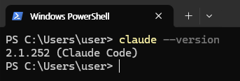
실습 폴더에서 실행
cd C:\samsung_ds_YYYYMMDD\rag-sim
claude- rag-sim.zip을 실습 폴더에 풀기 · app.py · run.bat 확인
- Claude Code는 실행한 폴더를 작업 공간으로 사용
- 처음 실행하면 브라우저 로그인 · 배부받은 구독 계정
Claude Code 기본 명령
| 명령 | 하는 일 |
|---|---|
/model | 작업에 쓸 모델 선택 |
/usage | 현재까지 사용량 · 구독 한도 확인 |
/init | 프로젝트를 훑어 CLAUDE.md 생성 |
/clear | 대화를 지우고 새로 시작 |
/context | 지금 대화가 입력 한도를 얼마나 쓰는지 |
/resume | 이전 대화 불러오기 |
Esc | 진행 중인 작업 멈추기 |
모델 등급별 용도
| 등급 | 맞는 일 |
|---|---|
| 최상위 (Fable) | 장시간 자율 작업 · 최고 난도 문제 |
| 상위 (Opus) | 설계 · 여러 파일에 걸친 변경 · 원인 찾기 어려운 버그 |
| 기본 (Sonnet) | 일상 개발 · 기능 추가 · 테스트 · 코드 리뷰 |
| 경량 (Haiku) | 포맷 변환 · 일괄 치환 · 로그 요약 · 간단한 분류 |
토큰을 아끼는 습관
/context
먼저 무엇이 토큰을 쓰는지 확인
/clear
작업이 바뀌면 대화 비우기
/compact
한도 경고 전에 미리 압축
@파일:줄
탐색시키지 말고 위치 지정
서브에이전트
조사는 맡기고 요약만 받기
CLAUDE.md
짧게 유지 · 매번 읽힘
/init으로 프로젝트 파악
/init- 만들어진 CLAUDE.md 읽기
- 궁금한 점을 직접 질문: 앱 목적 · 입력 · 처리 흐름 · 결과
- 답을 읽고 실제 파일이나 화면에서 한 곳 확인
API Key가 하는 일
.env가 막는 것과 못 막는 것
막는 것
- Key를 코드 · Git에서 분리
- 저장소에 올릴 때 함께 공개되는 것 방지
못 막는 것
- Claude Code가 프로젝트 파일 · 셸에 접근하면
- .env나 환경 변수의 Key를 읽을 수 있음
| 수준 | 방법 |
|---|---|
| 개인 실습 | .env + .gitignore + 프로젝트별 Key + 사용량 · 권한 제한 |
| 강화 | OS Keychain · Credential Manager · Secret Manager |
| 운영 · 기업 | Agent에는 Key를 주지 않고 API Proxy · Gateway가 대신 호출 |
대화 기록이 남는 곳
| 위치 | 내용 | 보관 |
|---|---|---|
내 PC%USERPROFILE%\.claude\projects | 요청 · 답변 · 읽은 파일 · 명령 결과가 암호화 없이 .jsonl로 | 기본 30일 · settings.json의 cleanupPeriodDays |
| 서비스 서버 | 답변 생성을 위해 전송 | 계정 유형 · 데이터 사용 설정에 따라 다름 |
.env에 Key 넣기
복사
rag-sim 폴더의 .env.example → .env
붙여 넣기
메모장으로 열어 OPENAI_API_KEY= 뒤에 배부받은 Key
저장
오늘 하루 계속 사용 · 오후 앱도 같은 방법
rag-sim 실행
- Claude Code에 실행 준비 요청: 실행 조건 · 필요한 패키지 · 설치 · 실행 확인
- chromadb · pypdf 등 설치
- run.bat 더블클릭 또는
.\run.bat - 브라우저에서 앱이 열림
python app.py로 오류 읽기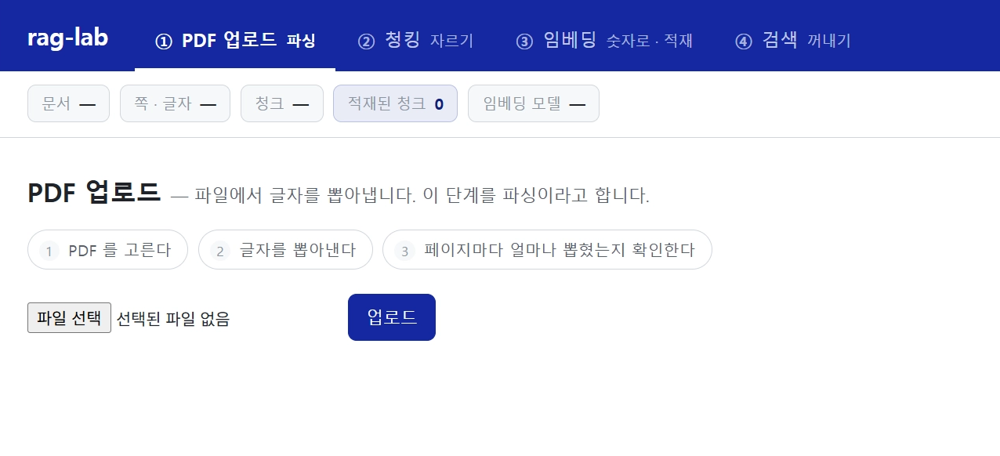
AI에게 문서를 전달하는 방법
RAG가 고른 구조와 임베딩
익숙한 두 가지 방법
「이 문서를 참고해서 답해 줘」
추가 학습과 입력 전달
추가 학습 · 파인튜닝
- 모델 내부의 가중치를 조정
- 답변 형식 · 처리 방식을 맞출 때
- 데이터 준비 · 학습 비용이 큼
입력 컨텍스트에 넣기
- 다시 학습하지 않음
- 질문 · 지시문 · 참고 자료를 함께 전달
- 새 문서를 바로 반영
세 가지 방법 비교
| 방법 | 어떻게 | 비용 | 문서가 바뀌면 |
|---|---|---|---|
| 추가 학습 | 예시 데이터로 응답 방식 조정 | 데이터 준비 · 학습 · 추론 | 재학습 또는 외부 검색 검토 |
| 전체를 매번 입력 | 질문마다 모든 문서 전달 | 질문마다 전체 자료의 입력 비용 | 다음 요청에 바로 반영 |
| RAG | 관련된 조각만 검색해 전달 | 문서 준비 · 검색 + 선택한 자료만 | 바뀐 문서만 다시 처리 |
입력은 책상, 저장소는 서랍
- 책상은 좁고, 올릴수록 비용 · 시간
- RAG: 서랍에서 이번 질문에 필요한 종이만 꺼냄
참고 자료를 전달하는 세 흐름
RAG: 검색 · 증강 · 생성
글자 비교만으로는 못 찾는 질문
문서: package delamination
→ 글자가 달라 연결하기 어려움
→ 표현이 달라도 관련 자료를 찾음
문장을 숫자 배열로: 임베딩
축 하나 = 특징 하나
- 숫자 하나 = 문장이 그 특징을 얼마나 가졌는지
- 반도체 관련도만 보면 S1 · S2가 겹침
특징이 둘이면 평면
- 요리 관련도 축 추가 → S3가 떨어짐
- S1 · S2는 아직 가까움
특징이 셋이면 공간
- 식각 ↔ 증착 축 추가 → S1 · S2도 구분
- 축(특징)이 늘수록 더 세밀하게 구분
특징이 많을수록 표현이 정교
의미가 가까우면 방향도 비슷
- 식각 · 증착 레시피: 반도체 공정 문맥 공유 → 화살표 방향이 비슷
- 김치찌개 레시피: 같은 「레시피」, 다른 문맥 → 방향이 크게 다름
- 가깝다 ≠ 정답 · 모든 조건 충족은 별도 확인
벡터와 차원
벡터
순서가 있는 숫자 배열 · 2개면 평면, 3개면 공간 좌표
차원
숫자의 개수 · 실제 임베딩은 수백 ~ 수천
숫자의 뜻
숫자 하나에 「온도」 같은 뜻이 붙어 있지 않음 · 여러 숫자가 함께 표현
LLM에는 원문
벡터는 고르는 데만 · 답변엔 원문 · 출처 전달 → 함께 저장
거리와 각도는 다른 기준
| 기준 | 읽는 법 |
|---|---|
| 유클리드 거리 | 끝점 사이 직선거리 · 작을수록 가까움 |
| 코사인 유사도 | 사이 각도 · 클수록 방향이 비슷 (−1 ~ 1) |
| 코사인 거리 | 1 − 코사인 유사도 · 작을수록 비슷 (0 ~ 2) |
질문도 임베딩해서 고르기
실습 앱의 임베딩
긴 문서도 같은 차원
점 하나와 여러 점
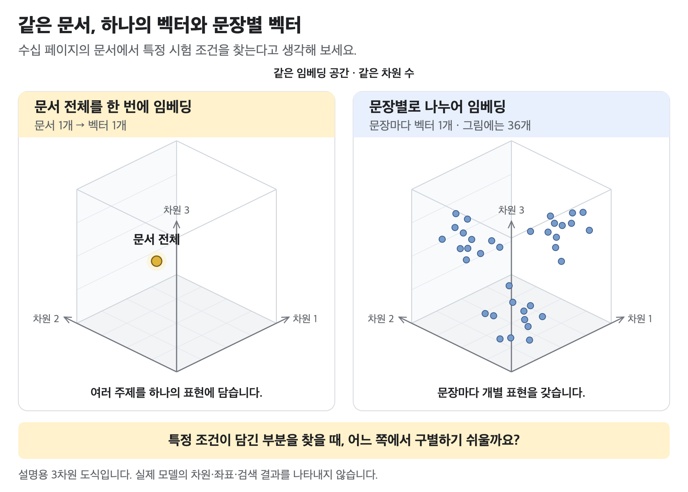
- 전체를 하나로: 여러 주제가 섞임
- 문장 · 문단별로: 주제마다 따로 찾을 수 있음
- 너무 잘게: 적용 대상 · 앞 문장의 조건을 잃음
- → 찾을 수 있으면서 문맥이 남게 나누기 = 청킹
naive RAG 직접 실행
PDF 한 편으로 파싱부터 생성까지
Naive RAG의 구성
자료 준비와 질문 처리
| 자료 준비 (문서마다 1회) | |
|---|---|
| 파싱 | PDF에서 글 · 페이지 출처 |
| 청킹 | 검색할 크기로 나누기 |
| 임베딩 | 청크마다 벡터 |
| 적재 | 원문 · 벡터 · 출처를 저장소에 |
| 질문 처리 (질문마다) | |
|---|---|
| 질문 임베딩 | 같은 모델 |
| 검색 | 가까운 청크 |
| 근거 전달 | 원문 · 출처 + 질문 |
| 생성 | LLM이 답변 |
naive RAG 직접 실행
AN4750 문서 한 편으로 RAG의 다섯 단계를 화면에서 직접 확인
- ① PDF 업로드 · 파싱
- ② 청킹 · 고정 길이
- ③ 임베딩 · 적재
- ④ 의미 검색 · 한국어 / 영어
- ⑤ 답변 생성 · 근거 대조
① 파싱: 글자 꺼내기
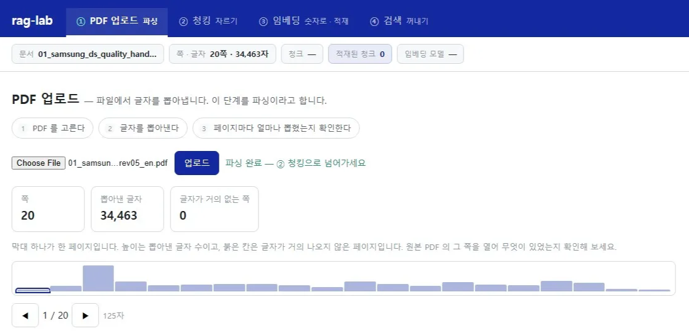
- 02_st_an4750_soft_errors_rev2_en.pdf 업로드
- 파일 크기 · 추출 글자 수 기록
- 붉은 칸 → 원본 PDF 해당 쪽과 비교
- 그림 · 표 내용이 글자로 나왔는지 · 깨진 글자 찾기
② 청킹: 정해진 길이로 자르기

- 고정 길이 선택 → 미리보기
- 청크 개수 · 가장 긴 · 가장 짧은 조각
- 문장 · 절이 중간에서 끊긴 조각 찾기
- 다른 기준은 2교시에서 비교
③ 임베딩 · 적재
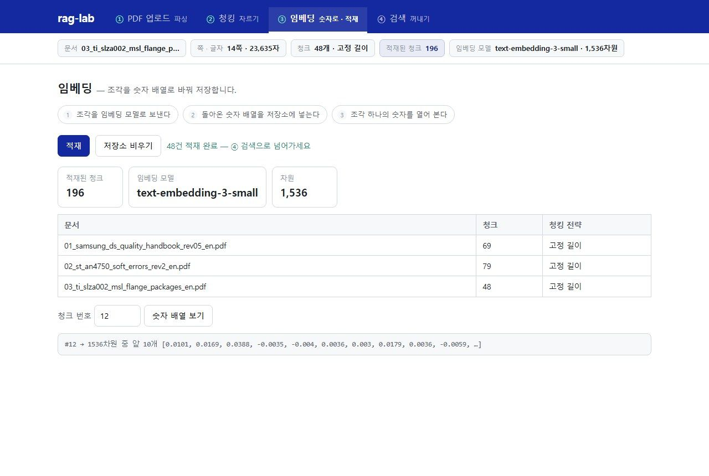
- 적재 누르기
- 상태 표시줄의 청크 수 확인
- 청크 번호 입력 → 숫자 배열 보기
- 업로드 → 청킹 → 적재 = 저장 3단계
④ 의미 검색
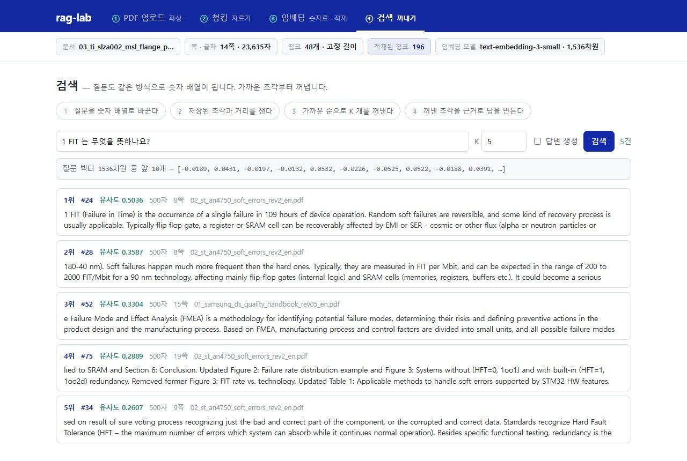
1 FIT 는 무엇을 뜻하나요?What does 1 FIT (Failure in Time) mean?- 상위 5개의 점수 · 출처
- 1위 카드에 답이 실제로 있는지
- 두 결과 비교 → 영어 원문을 쓸지, 번역본을 만들지 판단
⑤ 생성: 꺼낸 조각으로 답변
- 답변 생성 켜고 같은 질문 다시
- 프롬프트 글자 수 vs 저장소 전체 글자 수 기록
- 「문서 전체를 매번 넣기」였다면?
우리 공장의 오늘 야간조 생산 목표는 몇 장인가요?AN4750 의 RAM 스크러빙 알고리즘(Figure 4)의 흐름을 단계별로 설명해 주세요.Agent 아키텍처에서 이번 실습의 위치
- 청크와 벡터는 검색용 저장 자료
- 질문마다 일부 원문만 골라 입력에
- 저장소가 커지는 것 ≠ 한 요청의 Context가 커지는 것
- 프롬프트 글자 수는 전달 범위의 단서 · 토큰 수와 같은 단위는 아님
- 지금은 코드가 정한 순서로 검색 · 답변
- 4 · 5교시: 검색을 모델이 고르는 도구로
정리
정보를 전달하는 방법
User Input Prompt · 첨부파일 → 자료가 많아지면 Naive RAG
RAG의 핵심 과제
대량의 자료에서 필요한 근거를 저렴하고 빠르게 전달
검색 단위와 방식
자료의 특성에 맞춰 선택 (2교시)
보안
API Key와 대화 기록은 PC와 서버에 남을 수 있음 · 입력부터 관리
2교시 · naive RAG 완성
임베딩을 더 깊게 보고, 청크 크기와 검색 방식을 직접 고르기
naive RAG 완성
청크 크기와 검색 방식
근거가 될 원문의 단위와 검색 방법을 직접 고르고, 비교 결과로 판단합니다
학습 목표
벡터와 원문
임베딩 벡터와 답변에 전달되는 원문의 역할 구분
청크 크기 · 검색 단위
근거의 범위 · 입력량에 미치는 영향
검색 방식 비교
의미 검색 · BM25 · 하이브리드에서 질문에 맞는 근거가 선택됐는지 확인
과정 전체 흐름
근거의 단위와 검색 방법
문서 쪽 · 어떻게 나눌까
- 정의 · 시험 조건 · 적용 대상 · 예외가 서로 다른 위치에
- 작은 청크: 찾기 쉬움 · 조건이 떨어져 나갈 수 있음
- 큰 청크: 주변 설명까지 · 입력량 증가
질문 쪽 · 어떻게 찾을까
- 문장으로 묻는 질문
- 정확한 문서 번호로 묻는 질문
- 같은 청크라도 필요한 검색 방식이 다름
2교시 실습 안내
같은 앱
1교시의 rag-sim을 그대로 사용
요청문은 직접
작성 가이드라인 읽기 → 키워드 + 실습 조건 조합 → 내 문장으로 완성
결과 확인 후 보완
실행 결과를 보고 부족한 조건 추가
표시 위치
[PowerShell] 명령 · [브라우저] 주소 · [앱 화면] 공통 비교 입력
임베딩 검색의 점수 읽기
rag-sim 화면의 검색 점수가 뜻하는 것
검색 점수 읽는 법
1 − 거리 → 화면 유사도 점수 · 클수록 질문 벡터와 방향이 비슷점수와 정답 확률은 다른 값
정답일 확률 80%
- 숫자만 보고 정답 여부 판단하지 않기
- 청크의 본문과 출처 확인
- BM25 · 하이브리드를 추가하면 점수의 뜻과 범위가 달라짐
- 서로 다른 검색 방식의 점수는 그대로 비교하지 않기
가깝다는 것과 맞다는 것
「허용하지 않는다」
주제 · 단어가 비슷 → 가까운 벡터
의미가 가깝다 ≠ 질문의 모든 조건 충족
의미가 가깝다 ≠ 사실
검색 외의 임베딩 활용
같은 원리를 더 작은 단위에 · 핵심 문장 강조와 의미 기반 청킹
실습 문서 3종
| 파일 | 내용 | 특징 |
|---|---|---|
| 02_st_an4750... | 1교시 문서 · STM32 소프트 에러 | 이미 적재 |
| 01_samsung_ds_quality_handbook_rev05_en.pdf | 반도체 품질 시스템 핸드북 | 도판 · 표가 많음 |
| 03_ti_slza002_msl_flange_packages_en.pdf | 패키지 습기 민감도 시험 응용 노트 | 사진 · 그래프가 많음 |
근거 청크의 핵심 문장 강조
- 근거 청크는 수백 자 · 답의 위치를 사람이 다시 읽어야 함
- 근거 청크 → 문장 단위로 다시 자르기
- 문장마다 임베딩
- 질문과 유사도 계산
- 가장 가까운 문장 강조
근거 청크의 핵심 문장 강조
검색 결과의 근거 청크마다 질문과 가장 가까운 문장 하나를 찾아 강조
- 가이드라인 · 키워드로 요청문 작성
- 실습 조건 확인 후 Claude Code에 요청
- 앱 재시작
- 1교시 질문 다시 넣기
- 강조된 문장에 답이 있는지 기록
요청문 작성 · 핵심 문장 강조
Prompt 작성 가이드라인 · 근거 청크의 핵심 문장 강조
- 어느 화면에서 어떤 문장을 강조할지
- 질문과 문장의 관련성을 어떻게 비교할지 자신의 말로
- 임베딩을 언제 계산할지 · 화면에서 무엇을 확인할지
- 유지할 기존 기능
실습 조건 확인 · 핵심 문장 강조
| 항목 | 실습 조건 |
|---|---|
| 대상 | 검색 결과의 각 근거 청크 · 문장으로 나누고 현재 임베딩 모델로 각 문장의 벡터 계산 |
| 표시 | 질문 벡터와 유사도가 가장 높은 문장 하나를 노란색으로 강조 · 점수도 표시 |
| 계산 시점 | 검색할 때만 문장 임베딩 계산 · 저장소 재적재 없음 |
| 유지 | 기존 검색 결과와 답변 생성 기능 |
강조 결과 확인
1 FIT 는 무엇을 뜻하나요?- 앱 재시작 후 같은 질문
- 1위 청크의 강조 문장 읽기
기록
- 1위 청크에서 강조된 문장
- 그 문장에 실제로 답이 있는가
보기 편해진 대가
감수할 만한 비용인가?
얻는 것
- 답의 위치를 바로 확인
- 근거 대조 시간 단축
내는 것
- 질문마다 근거 청크 다섯 개의 문장 수만큼 임베딩 추가 계산
고정 길이 청킹의 한계
한 주제의 설명이 중간에 끊김
서로 다른 주제가 한 청크에 섞임
같은 주제: 높음
주제가 바뀌는 곳: 뚝 떨어짐 → 여기서 자름
의미가 바뀌는 곳에서 자르기
(임베딩 벡터의 코사인 유사도)
절단점을 정하는 기준
의미 기반 청킹
② 청킹 탭에 의미 기반(Semantic) 기준을 추가하고 네 기준의 조각을 비교
- 가이드라인 · 키워드로 요청문 작성
- 실습 조건 확인 후 Claude Code에 요청
- 앱 재시작
- 02_st_an4750 선택 · 네 기준 차례로 미리보기
- 청크 개수 · 길이 · 끊긴 조각 비교
요청문 작성 · 의미 기반 청킹
Prompt 작성 가이드라인 · 의미 기반 청킹
- ② 청킹 탭에 어떤 기준을 추가하려 하는지
- 문장 사이의 의미 변화로 청크 경계를 정하는 과정을 자신의 말로
- 사용자가 조정할 값 · 미리보기에서 확인할 정보
- 유지할 기존 기능
실습 조건 확인 · 의미 기반 청킹
| 항목 | 실습 조건 |
|---|---|
| 추가 위치 · 이름 | ② 청킹 탭의 의미 기반(Semantic) 기준 |
| 처리 | 문장 단위 분할 → 현재 임베딩 모델로 벡터 계산 → 이웃한 두 문장 유사도 비교 → 유사도가 크게 떨어지는 지점에서 분할 |
| 조정 | 화면에서 기준값 변경 · 지나치게 짧거나 긴 청크를 막는 최소 · 최대 길이 |
| 미리보기 | 각 청크 경계의 이웃 문장 유사도 표시 |
| 유지 | 기존 청킹 기준과 적재 기능 |
네 기준 미리보기
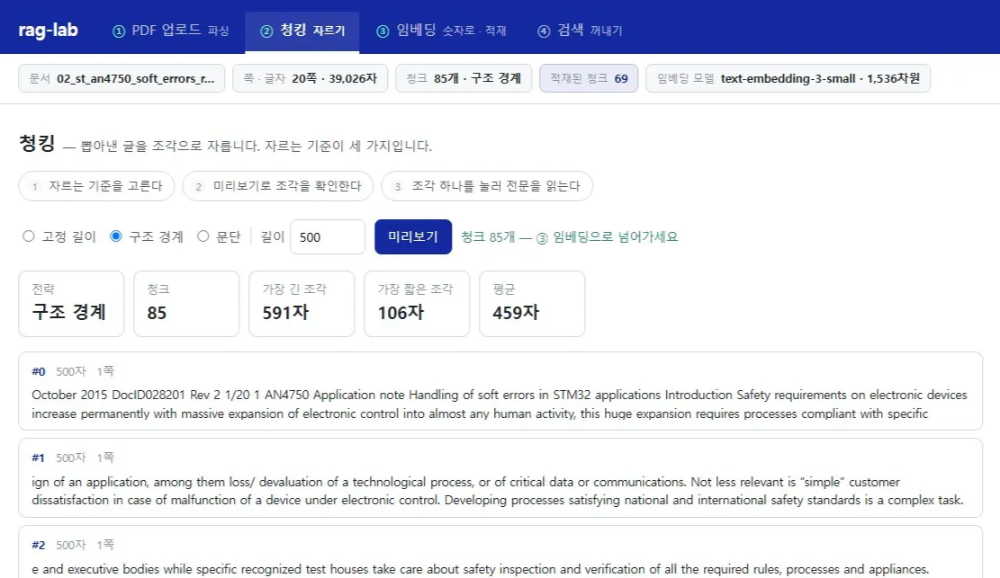
- 02_st_an4750... 선택
- 고정 길이 · 구조 경계 · 문단 · 의미 기반 차례로 → [미리보기]
- 구조 경계: 절 번호 · 제목 기준
- 문단: 빈 줄로 나뉜 문단 기준
기준별 비교 기록
| 기준 | 청크 개수 | 가장 긴 조각 | 가장 짧은 조각 | 중간에서 끊긴 조각 |
|---|---|---|---|---|
| 고정 길이 | ||||
| 구조 경계 | ||||
| 문단 | ||||
| 의미 기반 |
적재 비용과 문서 변경 빈도
비용
- 저장할 때 모든 문장을 임베딩
- 적재 시간 · 비용이 고정 길이보다 증가
- 대신 문서를 저장할 때 한 번만
판단
- 문서가 자주 바뀌는 저장소
- 문서가 거의 바뀌지 않는 저장소
- 두 저장소에서 판단이 같은지
청크 크기 비교
검색 정확도와 함께 모델에 전달할 근거의 범위를 정하는 값
청크 크기가 정하는 것
- 검색에서 잘 찾는 단위
- 답변에 충분한 설명 단위
- 둘을 함께 고려
근거의 범위를 정하는 값
본문 겹침
여러 청크를 전달할 때 본문이 얼마나 겹치는지
조건 · 단위
시험 조건과 단위가 같은 조각 안에 남아 있는지
입력 길이 · 의미
위 두 가지에 따라 달라짐
큰 청크와 작은 청크
- 앞뒤 맥락 · 조건이 함께 → 정보량
- 주제가 섞여 벡터가 흐려짐 · 관계없는 내용까지 전달
- 한 가지 내용 → 질문과 맞는 조각을 찾기 쉬움
- 설명이 끊겨 답변에 필요한 맥락 부족
청크 크기 장단점
| 큰 청크 | 작은 청크 | |
|---|---|---|
| 장점 | 앞뒤 맥락과 조건이 함께 담겨 정보량이 많음 | 한 가지 내용만 담겨 질문과 맞는 조각을 찾기 쉬움 |
| 단점 | 여러 주제가 섞여 벡터가 흐려짐 · 관계없는 내용도 함께 전달 | 설명이 중간에 끊겨 LLM이 답하는 데 필요한 맥락 부족 |
Parent-Child 구조
검색 단위와 전달 단위
꼭 같아야 하는가?
분리하면
- 작은 단위로 정확히 찾고
- 넓은 맥락으로 답변
대가
- LLM에 전달하는 글이 길어짐
- 입력 비용 증가
더 해보기 · Parent-Child 검색
Prompt 작성 가이드라인 · 선택 실습 · Parent-Child 검색
- 검색할 단위와 답변에 전달할 단위를 다르게 정한다면 어떻게 연결할지
- 부모 · 자식 청크의 관계와 각 단계의 역할
| 항목 | 실습 조건 |
|---|---|
| 적재 | 절 단위 부모 청크와 문장 단위 자식 청크 |
| 검색 · 전달 | 자식 청크로 검색하고 해당 부모 원문을 답변 근거로 전달 · 기존 검색 기능 유지 |
Retrieval · 검색 방식
같은 자료에서 어떤 원문을 고를지 · 식별자와 표현을 함께 다루기
의미 검색이 약한 단어
글자 하나 차이의 식별자
EQ-1023EQ-1032- 임베딩 모델에게 식별자는 뜻이 거의 없는 문자열
- 필요한 것: 글자가 정확히 일치하는지 보는 검색
단어로 물어보기
같은 저장소에 단어 · 번호 검색어를 넣고 1위 조각에 그 단어가 실제로 있는지 확인
- 검색어 다섯 개를 하나씩 입력
- 질의마다 1위 조각 펼치기
- 그 단어가 실제로 들어 있는지 확인
- 찾은 것 · 못 찾은 것 기록
- 문장으로 물었을 때와 비교
검색어 다섯 개
FITALPS6.2.1.1Rev 2박리- 질의마다 1위 조각을 펼쳐 그 단어가 실제로 있는지
- 문장으로 물었을 때와 무엇이 달랐는지 적어 두기
기록
- 찾은 것
- 못 찾은 것
키워드 검색 BM25
- 표현이 달라도 찾음
- 오타 · 유의어 · 문맥에 강함
- 정확한 용어 · 고유명사 · 숫자를 놓치기 쉬움
- 정확히 그 단어가 든 문서를 잡음
- 제품 코드 · 조항 · 드문 용어에 강함
- 표현이 다르면 찾지 못함
BM25 검색 추가
의미 검색 옆에 BM25 검색을 붙여 같은 질의의 결과와 답변을 나란히 비교
- 가이드라인 · 키워드로 요청문 작성
- rag-sim 폴더의 Claude Code에 요청
- 앱 재시작
- 4-1의 단어 다시 넣기
- 오타 섞은 질의 넣기
요청문 작성 · BM25 검색 비교
Prompt 작성 가이드라인 · BM25 검색 비교
- 의미 검색과 단어 검색을 어떻게 비교할지
- 추가할 검색 방식 · 결과 배치
- 답변을 비교할 조건
| 항목 | 실습 조건 |
|---|---|
| 대상 | rag-sim 검색 화면에 BM25 추가 |
| 표시 | 의미 검색과 BM25 검색 결과를 좌우에 배치 |
| 답변 생성 선택 시 | 각 검색에서 찾은 청크를 근거로 만든 답변을 각각 표시 |
두 검색 나란히 비교
- 앱 재시작 (Ctrl+C → 재실행)
- 4-1의 단어들을 그대로 다시
- 두 검색을 나란히 놓고 비교
- 이번에는 오타를 섞어
delamintion막히면 · BM25
| 증상 | 확인할 것 |
|---|---|
| 한국어 질의에서 BM25 결과가 비어 있음 | 영어 문서에 같은 한국어 단어가 없어 불일치 → 원문의 영어 용어로 먼저 검색 · 원문 단어도 못 찾으면 토큰 분리 · 색인 구성 점검 · 질의 재작성은 3교시 |
| 두 열의 점수 차이가 큼 | 검색 방식마다 계산법이 다름 → 점수 크기를 직접 비교하지 않기 · 각 열에서 어떤 결과가 상위에 나오는지 비교 |
키워드와 의미가 함께 있는 질문
EQ-1023
- 장비 ID
- 정확히 일치해야 함 → BM25
박리
- 표현이 달라도 찾아야 함
- delamination → 의미 검색
점수를 그대로 더하면 안 되는 이유
0.76 + 18.4 = 19.16 → 96%가 BM25 몫순위로 결합 · RRF
- 각 검색기의 등수만 가져와 역수를 더함
- 점수의 단위 · 분포가 사라짐 → 정규화 · 가중치 조정 불필요
- k = 60 · 1등과 2등의 격차를 완만하게 · 한 검색기가 결과를 독점하지 못하게
RRF 계산 예시
| 청크 | 의미 검색 순위 | BM25 순위 | RRF 계산 | 최종 점수 | 최종 |
|---|---|---|---|---|---|
| C3 휴가 이월 및 소멸 규정 | 1 | 2 | 1/61 + 1/62 | 0.03252 | 1 |
| C2 연차 이월 한도는 최대 5일 | 4 | 1 | 1/64 + 1/61 | 0.03202 | 2 |
| C1 미사용 연차는 다음 해로 이월 가능 | 2 | 4 | 1/62 + 1/64 | 0.03175 | 3 |
| C5 연차 촉진 제도 안내 | 3 | 5 | 1/63 + 1/65 | 0.03126 | 4 |
| C6 이월 신청 절차 — 인사팀 승인 | — | 3 | 1/63 | 0.01587 | 5 |
| C4 잔여 휴가 정산 방식 | 5 | — | 1/65 | 0.01538 | 6 |
세 열 비교 화면
하이브리드 검색
의미 검색과 BM25의 순위를 결합해 세 열로 비교
- 가이드라인 · 키워드로 요청문 작성
- 실습 조건 확인 후 Claude Code에 요청
- 앱 재시작
- 4-1 · 4-2의 질의 전부 다시
- 가장 안정적인 열과 근거 질의 정리
요청문 작성 · 하이브리드 검색
Prompt 작성 가이드라인 · 하이브리드 검색
- 의미 검색과 BM25의 어떤 값을 결합할지
- 서로 다른 점수 단위 고려
- 비교 화면의 구성
| 항목 | 실습 조건 |
|---|---|
| 결합 | 두 검색 결과의 순위 사용 · 계산 단위가 다른 원점수를 그대로 합산하지 않음 |
| 표시 | 의미 검색 · BM25 · 하이브리드 세 열에 각각 근거와 답변 |
세 열 비교 실행
재시작
검은 창에서 Ctrl+C로 종료한 뒤 재실행
전부 다시
4-1과 4-2에서 던진 질의를 모두 다시 넣기
정리
세 열 가운데 가장 안정적인 쪽 · 그 판단의 근거가 된 질의
검색 방식 비교 기록
| 질의 유형 | 예 | 의미 검색 | BM25 | 하이브리드 |
|---|---|---|---|---|
| 문장 | 1 FIT 는 무엇을 뜻하나요? | |||
| 용어 · 약어 | FIT, ALPS | |||
| 번호 · 식별자 | 6.2.1.1, Rev 2 | |||
| 한국어 단어 | 박리 | |||
| 오타 | delamintion |
사용자가 묻는 방식
우리 사용자는
- 주로 문장으로 묻는지
- 장비 ID · 문서 번호로 묻는지
선택 기준
- 검색 방식은 사용자가 묻는 방식을 보고
- 한국어 단어로 영어 문서를 못 찾는 문제는 3교시
더 해보기 · 검색 비교
K 값
1 · 5 · 10으로 바꿔 가며 같은 질문
청킹 기준
바꿔서 다시 적재한 뒤 같은 질의
옆자리와 비교
하이브리드 결과 맞춰 보기 · 결합 방식이 다르면 순위도 다름
Context로 전달할 때의 판단
근거의 관련성
질문에 필요한 근거가 실제로 들어왔는지
조건의 보존
짧은 조각만 남기면 앞 문단의 적용 조건이 빠질 수 있음
전달 분량
같은 개수라도 청크 크기에 따라 입력량이 다름 · 겹친 설명은 읽을 양만 늘림
찾은 것과 읽는 범위
문장 강조
- 사람이 근거를 읽기 쉽게 만드는 기능
- 강조 문장만 보고 나머지 조건을 생략해도 된다는 뜻은 아님
Parent-Child
- 검색에 쓰는 단위와 모델에 전달하는 단위를 구분
- 어떤 내용을 찾았고 어떤 범위로 읽는지
정리
임베딩의 다른 쓰임
문장 단위로 적용 → 핵심 문장 강조 · 의미 기반 청킹 · 대신 임베딩 계산 증가
청크 크기
검색 결과와 답변에 필요한 맥락이 달라짐 · Parent-Child는 검색 단위와 전달 단위를 분리
검색 방식
식별자 · 약어는 키워드 검색 · 표현이 다른 질문은 의미 검색 · 사용자가 묻는 방식에 맞춰 선택
현재 rag-sim 구성
rag-sim — 파싱 · 청킹 4종(의미 기반 포함) · 임베딩 · 적재 · 의미 검색 · 답 생성
+ 핵심 문장 강조 · BM25 · 하이브리드
저장소 — materials_ch2 3종3교시 · Advanced RAG
검색 앞뒤에 단계를 더해 naive RAG가 놓치는 근거 찾기
Advanced RAG
검색 성능 개선
찾을 수 있었던 근거가 실제 답변 입력까지 남도록, 검색의 앞과 뒤에 단계를 더해 비교합니다
학습 목표
실패 위치 구분
자료 준비 · 검색 후보 · 최종 근거 · 답변 생성 중 어디서 실패했는지
재작성과 재정렬
질의 재작성 · 재정렬이 최종 입력의 근거를 어떻게 바꾸는지
근거로 해석
같은 후보의 순위 · 포함 여부 · 호출 수로 비교 결과 읽기
과정 전체 흐름
답변 입력에 남은 근거 확인
후보에 있음 ≠ 최종 입력에 있음
- 후보를 많이 찾아도 필요한 조건이 최종 선택에서 빠지면 모델은 읽지 못함
- 예: 시험의 샘플 수 → 숫자 + 어떤 시험 · 조건의 수치인지까지 필요
빠진 위치에 따라 다른 처방
- 사용자 표현 ≠ 문서 표현 → 검색 전에 질문 다듬기
- 후보에 여러 시험이 섞임 → 검색 후에 원문 다시 평가
3교시 실습 안내
- 2교시의 rag-sim을 그대로 사용
- Claude Code에 보낼 요청문은 직접 작성 · 가이드라인 + 키워드 + 실습 조건
- 실행 결과를 확인한 뒤 부족한 조건을 보완
| 표시 | 입력 위치 |
|---|---|
| [PowerShell] | 명령 |
| [브라우저] | 주소 |
| [앱 화면] | 공통 비교 입력 |
Advanced RAG: 어디를 고칠 것인가
검색의 앞과 뒤에 단계를 더해 성능 높이기
naive RAG에 더하는 두 단계
고치는 순서
첫 확인: 최종 입력의 근거
있는데 답이 틀림 → 생성 단계 점검
- 부정 표현 · 표의 열을 잘못 읽었는지
- 지시문이 과도한 추론을 요구하는지
- 원문 인용 · 조건 확인 요청 → 반복되면 생성 모델 · 입력 구성 검토
없음 → 사라진 위치 거슬러 올라가기
- 먼저 원본 PDF에 그 내용이 있는지
- 원본에도 없다면 검색 알고리즘을 바꿔도 답 없음
- 있다면 아래 단계를 차례로 확인
근거가 사라진 단계 찾기
| 단계 | 어떤 문제인가 | 확인하고 고칠 것 |
|---|---|---|
| 파싱 | 원본 표 · 그림에 있지만 추출 텍스트에 없음 | 페이지별 추출 결과를 원본과 대조 · OCR · 표 추출 · 그림 설명 검토 |
| 청킹 | 조건과 수치가 서로 다른 청크로 갈라짐 | 인접 청크의 문장 경계 · 제목 · 표 머리글 · 분할 기준과 겹침 조정 |
| 임베딩 · 적재 | 벡터가 없거나 질문과 다른 모델로 계산됨 | 적재 수 · 모델과 차원 · 원문-벡터 연결 · 필요하면 같은 설정으로 재적재 |
| 검색 | 적재된 근거가 후보에 들어오지 않음 | 한국어 · 영어 표현 차이인지, 검색 방식 · 후보 수 때문인지 |
| 최종 근거 선택 | 후보에는 있지만 LLM 입력에서 빠짐 | 후보 순위와 최종 선택 수 · 재정렬과 입력 길이 제한 |
실습 문서 추가
Pre-retrieval
질문을 검색에 맞게 바꾸기
Query Rewriting
목적
질문 의도는 유지 · 검색에 맞는 표현으로 · 길게 만드는 것 자체는 목적 아님
방법
생략된 문맥 보완 · 문서의 전문 용어 함께 넣기 · 규칙 · 사전 또는 언어 모델
실습 구성
gpt-5.6-luna에 원래 질의 + 문서 목록 + 지시문 → 검색 질의 → 임베딩
「박리」 재작성 예
검색에는 재작성 질의, 답변에는 원래 질문
검색할 질의 하나 생성
문서 범위 · 검색 방식 · 최종 근거 수 유지
언어 차이 줄이기
text-embedding-3-small처럼 여러 언어를 지원해도 언어에 따라 검색 품질이 다른 임베딩 모델이 있음- 1교시: 같은 FIT 질문을 한국어 · 영어로 넣은 결과 기록 떠올리기
Query Rewriting 추가와 비교
재작성을 끄고 켠 두 검색의 실제 검색 질의와 근거 청크를 비교
- 요청문 작성 · 재작성 기능 추가
- 앱 재시작 · 검색 방식과 근거 수 고정
- 「박리」 재작성 끔 → 켬
- FIT처럼 짧은 용어 · 식별자 질문
- 1교시 한국어 질문 끔 → 켬
요청문 작성 가이드 · Query Rewriting
가이드라인
- 원래 질문과 실제 검색 질의를 어디에서 각각 사용할지 · 재작성 전후 흐름부터 정리
- 의미가 달라지는 것을 막을 조건 · 적용 여부를 확인할 화면 · 실패했을 때의 동작 포함
키워드
실습 조건 확인 · Query Rewriting
| 항목 | 조건 |
|---|---|
| 모델 · 입력 | gpt-5.6-luna에 원래 질의와 검색 대상 문서 목록 전달 |
| 재작성 | 한국어 질문은 영어 검색 문장으로 변환 · 원래 용어도 포함 · 없는 조건 · 수치 · 답 추가 금지 |
| 사용 위치 | 검색에는 바뀐 질의 · 답변 생성에는 원래 질문 · 기존 검색 방식 유지 |
| 화면 | 재작성 켜기/끄기 · 원래 질의 · 실제 검색 질의 · 적용 여부 표시 |
| 실패 | 실패 사실을 알리고 원래 질의로 검색 |
「박리」로 끄고 켜서 비교
앱 다시 시작
기능 수정 후
조건 고정
검색 방식 · 근거 수를 같게
재작성 끔
「박리」 검색
재작성 켬
같은 질의 다시 입력
박리확인할 것
- 실제 검색 질의가 반도체 문맥의 문장으로 바뀌었는지
- delamination이 포함됐는지
- 질문에 없던 조건이 추가되지 않았는지
- 두 검색의 근거 청크를 펼쳐 필요한 설명을 찾았는지
문장이 바뀜 ≠ 검색이 개선됨
실제 검색 질의 확인
화면에만 새 문장을 표시하고 검색에는 원래 단어를 쓰는 경우도 있음
오류 처리
재작성 오류 시 성공으로 표시하지 않음 · 원문으로 검색했다는 상태 표시
식별자 유지
FIT처럼 짧은 용어 · 버전 · 조건이 든 질문 · 원래 의도와 정확한 식별자 유지 · 근거가 새로 들어오거나 빠지는지
1교시 한국어 질문 비교
1 FIT 는 무엇을 뜻하나요?| 기록 | |
|---|---|
| 원래 질의 | ______ |
| 실제 검색 질의 | ______ |
| 필요한 근거가 상위 5개에 · 재작성 끔 | ______ |
| 필요한 근거가 상위 5개에 · 재작성 켬 | ______ |
Query Expansion
HyDE
세 방법 비교
| 방법 | 무엇을 바꾸나 | 추가 비용 | 주의할 점 |
|---|---|---|---|
| Query Rewriting | 질문 하나 → 검색에 맞는 문장 하나 | LLM 호출 1회 | 질문에 없던 조건을 붙이면 뜻이 바뀜 |
| Query Expansion | 질문 하나 → 여러 질의 | LLM 호출 1회 + 검색 여러 번 | 관계없는 결과가 섞임 |
| HyDE | 질문 대신 가상 답변으로 검색 | LLM 호출 1회 | 가상 답변이 틀리면 검색도 빗나감 |
Post-retrieval: Reranking
후보를 늘리고, 다시 평가하고, 기준 미만은 버리기
관계없는 질문과 검색 결과
김치찌개를 맛있게 끓이는 방법을 알려 주세요.1 FIT 는 무엇을 뜻하나요?- 근거 청크가 선택될지, 선택되지 않을지 먼저 예상
- 상위 다섯 조각이 나오는지 · 각 조각의 점수
- 관련 있는 질문의 1위 점수와 비교
| 기록 | |
|---|---|
| 관련 있는 질문의 1위 점수 | ______ |
| 관계없는 질문의 1위 점수 | ______ |
| 차이 | ______ |
유사도 검색은 항상 K개를 돌려줌
유사도 검색이 하는 일
- 저장소에서 가장 가까운 K개를 돌려줄 뿐
- 그 조각이 질문과 관련 있는지는 판단하지 않음
- 관계없는 질문에도 항상 K개
점수만으로 구분하기 어려운 이유
- 같은 분야 문서는 공통 용어 · 주제가 많아 비슷한 벡터가 될 수 있음
- 점수 분포는 모델 · 문서 · 질문에 따라 다름
- 점수 차이만으로 원인을 단정하지 않고 실제 점수와 근거 본문을 함께 확인
설계: 넉넉히 뽑고, 다시 평가하고, 버리기
빠르게 모으고, 펼쳐서 다시 읽기
- 서점에서 「AI Agent들이 서로 통신하는 방법」 찾기
- 관련 책 열 권을 빠르게 모아도 개념 책 · 메시지 전달 책이 섞임
서점 비유
Bi-encoder: 질문과 문서를 따로 벡터로
[0.12, −0.31, 0.77, …][0.18, −0.29, 0.71, …]2. 문서 B
3. 문서 C
Cross-encoder: 질문과 후보를 함께 읽고 점수
질문과 후보를 함께 읽는 전용 모델
구조
관련성 평가용으로 학습된 전용 모델 · 대표 구조 Cross-Encoder · 질문과 후보 청크를 한 쌍으로 입력
조건까지 비교
「전원을 끈 상태의 고온 보관 시험」 → 「고온 시험」 주제를 넘어 전원 상태 · 시험 목적까지 · 학습과 자료에 따라 실패할 수도
학습
질문 · 문서 쌍과 관련성 평가 데이터 · 관련 있으면 높은 점수, 적으면 낮은 점수로 가중치 조정
Reranking 모델의 출력
gpt-5.4-mini로 점수 만들기
reasoning을 끄는 이유와 비용
reasoning 끔
- 추론을 켜면 답을 쓰기 전에 내부에서 먼저 생각
- 첫 토큰의 확률을 질문 · 후보 쌍의 판정으로 읽기 어려움
- 로그확률을 제공하지 않는 경우도 있음
호출 수 = 후보 수
- 후보마다 한 번씩 호출
- 후보 20개 → 호출 20번
- 전용 재정렬 모델보다 시간 · API 비용이 더 듦
공정한 비교 구조
Reranking 비교
같은 후보에서 순서만 바꿨을 때 최종 근거와 답변이 어떻게 달라지는지 확인
- 요청문 작성 · 한 번에 어렵다면 단계별로
- 앱 재시작 · 재작성 끔 · 검색 방식 고정
- 기준값 0 · 후보 10개로 순서 비교
- 근거가 없으면 후보 20개로 별도 비교
- 기준값을 올려 관계없는 질문 확인
요청문 작성 가이드 · Reranking 비교
가이드라인
- 순위 변경의 효과만 비교하려면 어떤 조건을 같게 할지
- 후보 수집 · 재정렬 · 근거 선택 · 답변 비교의 흐름을 내 말로 정리
- 점수 계산 실패와 기준값을 통과한 근거가 없는 경우를 구분
키워드
실습 조건 확인 · 후보와 점수
| 항목 | 조건 |
|---|---|
| 비교 후보 | 현재 검색 방식 · 질의 재작성 설정으로 한 번만 수집 · 두 경로에서 같은 후보 ID와 원문 공유 · 후보 수를 채우기 위한 검색 방식 자동 변경 금지 |
| 모델 · 호출 | gpt-5.4-mini · 질문 · 후보 청크 한 쌍마다 한 번 호출 · reasoning 끄기 · 첫 토큰 logprobs(top_logprobs) · 출력 토큰 수 최소 |
| 판정 형식 | 근거가 되면 첫 답변 토큰 Y, 아니면 N · 원래 표기 "Y " / "N " · 대소문자 · 공백 변형은 같은 선택지의 확률로 합산 |
| 점수 · 순서 | P(Y) ÷ (P(Y) + P(N)) · 높은 점수부터 · 첫 토큰 후보에 Y · N이 모두 없거나 호출 실패면 재정렬 실패 표시 · 정상 비교로 표시하지 않음 |
| 호출 운영 | 후보별 동시 호출 가능 · 429 요청 한도 초과 시 대기 후 재시도 |
실습 조건 확인 · 조정과 표시
| 항목 | 조건 |
|---|---|
| 조정 | 재정렬 켜기/끄기 · 후보 수 10 · 20 · 30개 · 기준값 0~1, 초기값 0.5 · 기준값보다 낮은 후보는 최종 근거에서 제외 |
| 근거 없음 | 통과한 후보가 없으면 답변 생성 없이 「문서에서 관련 근거를 찾지 못했습니다」 표시 |
| 답변 비교 | 기존 순서 · 재정렬 순서에서 각각 상위 5개 원문 · 원래 질문 · 생성 모델 · 지시문 · 설정 동일 |
| 후보별 표시 | 문서명 · 페이지 · 청크 ID · 본문 · P(Y) · P(N) · 점수 · 전후 순위 · 기준값 통과 여부 · 최종 근거 포함 여부 |
| 실행별 표시 | 실제 후보 수 · 재정렬 호출 수 · 두 답변 및 각 답변에 전달한 근거 ID |
| 유지 | 재정렬을 끄면 기존 검색 · 답변 생성 · 기존 질의 재작성 기능 유지 |
실행 설정과 비교 질문
앱 다시 시작
수정이 끝나면
질의 재작성 끔
순서 변경 효과만 보기
기준값 0
버리는 효과는 나중에 따로
검색 방식 고정 · 후보 10개
2교시 방식 중 하나
AEC-Q100의 기계적 충격 시험은 몇 개의 샘플로 수행하나요?답변보다 후보 본문 먼저
근거 청크 찾기
시험 조건과 샘플 수를 확인할 수 있는 청크
원본 대조
문서명 · 페이지를 따라 원본 PDF와
순위 비교
해당 청크의 전후 순위 · 최종 근거 포함 여부
후보 10개에 근거가 없다면
- 후보 수를 20개로 늘려 별도로 비교
- 새로 검색한 같은 20개에서 기존 · 재정렬 순서의 상위 5개
- 후보 수를 늘려 근거가 새로 검색된 효과와 같은 후보에서 순위가 달라진 효과를 나누어 기록
기준 미만은 버리기
- 3-1의 관계없는 질문을 재정렬을 켠 상태로 다시
- 기준값을 넘는 후보가 남는지 · 「문서에서 관련 근거를 찾지 못했습니다」가 표시되는지
재정렬 비교 기록
| 항목 | 기록 |
|---|---|
| 질문 · 검색 방식 · 후보 수 · 기준값 | ______ |
| 필요한 근거의 문서명 · 페이지 · 청크 ID | ______ |
| 기존 순위 → 재정렬 후 순위 | ______ → ______ |
| 최종 근거 포함 여부 · 전 / 후 | ______ / ______ |
| 재정렬 호출 수와 걸린 시간 | ______ |
| 관계없는 질문 · 기준값을 넘은 후보 수 | ______ |
결과 해석
차례로 확인
- 필요한 근거가 최종 5개에 새로 포함됐는지
- 답변이 그 원문의 조건 · 수치를 반영했는지
- 이미 상위 5개에 있던 근거라면 순위가 올라도 전달 자료는 같을 수 있음
- 근거가 같아도 답변 표현은 달라질 수 있음 → 문장 변화만으로 개선 판단 금지
그대로 기록
- 근거가 처음부터 상위이거나 재정렬 후에도 나아지지 않을 수 있음
- 관련성 낮은 후보가 올라올 수도 있음
- LLM은 애매하면 Y 쪽으로 기울 수 있음 → 절대값보다 후보 사이의 순위
- 한 질문의 결과로 일반화하지 않기
막히면
후보 ID · 원문
두 경로의 후보 ID와 원문이 같은지 먼저 확인 · 재정렬 중 검색 방식이 바뀌었다면 비교 조건 수정
재정렬 실패
화면의 오류 메시지를 Claude Code에 보여 주고 수정한 뒤 다시 실행
429 요청 한도 초과
1분쯤 기다렸다가 다시 실행
설계 질문: 기준값과 후보 수
| 조정 | 얻는 것 | 잃는 것 |
|---|---|---|
| 기준값 높이기 | 관계없는 청크 감소 | 필요한 근거까지 버릴 수 있음 |
| 기준값 낮추기 | 필요한 근거를 덜 버림 | 관계없는 청크 증가 |
| 후보 수 늘리기 | 근거가 후보에 들어올 가능성 증가 | 재정렬 호출 수 · 시간도 그만큼 증가 |
우리 업무에서 더 피해야 할 것이 기준값을 정함
후보 범위와 답변 입력 범위
후보를 찾는 범위
- 후보 20개 검색 ≠ 원문 20개를 모두 전달
- 후보를 늘리면 근거를 만날 가능성과 재정렬 처리량이 함께 변함
- 재정렬 호출 입력 · 답변 생성 호출 입력이 각각 존재 → 최종 답변 길이만으로 전체 비용 설명 불가
답변에 넣는 범위
- 최종 근거 수가 같아도 청크 길이가 다르면 입력량도 다름
- 기준값: 관련성 낮은 근거 제외 · 입력 토큰 수 제한과 역할이 다름
- 업무 적용: 근거의 조건 충족 · 전체 입력의 모델 한도를 각각 관리
Bi-encoder와 Cross-encoder의 입력과 출력
질문과 비슷한 문서 찾기 vs 질문에 도움이 되는 문서 고르기
Similarity ≠ Relevance
AI Agent는 LLM과 Tool을 사용하여 작업을 수행한다.
Multi-Agent 시스템에서는 Agent 간 메시지를 전달하여 작업 결과를 공유할 수 있다.
Bi-encoder의 입력과 출력
| Bi-encoder | |
|---|---|
| 입력 | 인풋 하나씩 · 질문과 문서를 각각 따로 임베딩 |
| 출력 | 벡터 · 코사인 유사도 등으로 거리 계산 |
| 잘하는 것 | 질문과 의미가 비슷한 문서를 빠르게 찾기 |
| 가까운 질문 | 「이 질문과 이 문서는 얼마나 비슷한가?」 |
Cross-encoder의 입력과 출력
| Cross-encoder | |
|---|---|
| 입력 | 인풋 두 개 · 질문과 후보 문서를 한꺼번에 |
| 처리 | 질문의 어떤 단어와 문서의 어떤 내용이 대응하는지까지 |
| 출력 | 관련성을 하나의 숫자로 → 순서 다시 정하기 = Reranking |
| 가까운 질문 | 「이 문서가 지금 이 질문에 얼마나 도움이 되는가?」 |
| 질문 | 문서 | |
|---|---|---|
| AI Agent | ↔ | Agent |
| 통신 | ↔ | 메시지 전달 |
| 서로 | ↔ | Agent 간 |
| 방법 | ↔ | 작업 결과 공유 |
검색 순위가 바뀌는 과정
Advanced RAG 정리
증상에 맞는 단계 고르기 · 표라면 Text-to-SQL
Naive RAG와 Advanced RAG 파이프라인
Advanced RAG
질문 1개 → 1개Query Expansion · Multi-query
질문 1개 → N개HyDE
가상 답변 문서 · 조합 시 마지막
Text-to-SQL → RDBMSVector Retrieval
증상별 처방
| 증상 | 고치는 단계 | 처방 |
|---|---|---|
| 옛 버전 문서가 근거로 섞임 | Pre-retrieval | Metadata Filter |
| 짧은 질의 · 다른 언어 질의로 근거를 못 찾음 | Pre-retrieval | Query Rewriting · Expansion · HyDE |
| 후보에는 근거가 있는데 순위가 밀림 | Post-retrieval | Reranking |
| 관계없는 청크가 근거로 쓰임 | Post-retrieval | 점수 기준으로 버리기 |
문서가 아니라 표라면: Text-to-SQL
GraphRAG
관계를 따라가는 검색 · 설명과 시연
Vector RAG와 GraphRAG
Vector RAG
- 청크 벡터 저장 → 질문 벡터와 가까운 청크의 원문 전달
- 1교시에 실행한 구조 · BM25와 결합하면 하이브리드 검색
- 정의 · 조건 · 절차가 특정 문단에 모인 질문에 먼저
GraphRAG
- 대상과 대상 사이의 관계도 검색에 사용
- 관계를 따라 선택한 원문이 답변의 근거
노드와 관계
- 노드: 설비 · 공정 · 제품 · 불량 · 검사 방법
- 관계: 사용한다 · 생산한다 · 검출한다
- EQ-A → PR-1 → P-7을 이어 봐야 답하는 질문
색인 구성: 관계를 검색 가능한 구조로
「설비 EQ-A는 공정 PR-1에 사용된다.」
「공정 PR-1로 제품 P-7을 생산한다.」
관계를 만드는 원칙
파싱 · 청크 ID
문서를 파싱하고 청크에 ID
추출
LLM 등으로 노드와 관계 추출
합치기
「EQ-A」 · 「설비 A」가 같은 대상이면 하나로
근거 연결
관계마다 청크 ID · 문서명 · 페이지 · 원문 구절
많이보다 정확하게
- 관계의 종류와 방향 보존
- 「함께 언급됐다」를 「원인이다」로 바꾸지 않기
- 부정 · 조건 · 적용 버전 보존
- 문서가 바뀌면 관계와 근거를 함께 갱신
질문이 들어오면: 관계를 따라 이동
C41: PR-1 → P-7
검색 네 단계
대상 찾기
「EQ-A」를 이름 · 별칭 또는 벡터 검색으로 그래프 노드에 연결
관계 따라가기
EQ-A에서 「사용된다」로 연결된 공정 → 그 공정에서 「생산한다」로 연결된 제품
근거 청크 모으기
관계의 방향 · 적용 조건 · 문서 버전 확인 · 중복 원문은 합침
LLM에 전달
원래 질문 + 관계 경로 + 근거 원문 · 답변 화면에서 경로와 참고 문서 확인
GraphRAG를 고르는 기준
주의
- 연결이 있다고 실제 장애의 영향 · 인과가 입증되지는 않음
- 연결되지 않은 대상까지 추측해서 답하지 않고 부족한 부분 표시
- 그래프를 그리기만 하고 검색은 벡터로 끝나면 관계 검색이 아님
비용과 선택
- 관계를 따라가야 답할 수 있는 질문에서 도움
- 대상 · 관계 추출 · 검증 · 문서 변경 시 갱신 비용
- 한 문단에 답이 있으면 지금의 벡터 검색으로 충분
정리
어디를 고칠지 먼저
Pre-retrieval은 질문, Post-retrieval은 찾은 후보 · 원인이 있는 단계를 찾고 그 단계를 고침
넉넉히 뽑고 다시 평가
유사도 검색은 관계없는 질문에도 K개 · 후보를 넉넉히 뽑아 재정렬하고 기준 미만은 버림
비용과 비교
단계를 더할수록 호출 · 시간 증가 · 개선 폭이 비용만큼 가치 있는지 비교해서 고름
4교시 · Tool Calling과 Context의 실행 흐름
사람이 정한 순서의 검색에서 나아가, AI가 필요한 도구를 직접 골라 쓰는 구조
AI Agent
Tool Calling과 Context의 실행 흐름
모델의 도구 선택과 앱의 실제 실행을 나누어 보고, 실행 결과가 다음 판단의 Context로 돌아가는 과정을 확인합니다
학습 목표
선택과 실행
모델의 도구 선택과 앱의 실제 실행을 호출 로그로 구분
API 요청 보기
지침 · 도구 정의 · 사용자 입력 · 도구 결과의 위치
설명과 권한
도구 설명과 실행 권한이 각각 제어하는 부분
반복 호출
입력 구성 방식과 Context Window 관리의 관계
과정 전체 흐름
오늘 따라갈 연결
LLM과 검색
최신 뉴스에 답하는 서비스 안에서 실제로 일어나는 일
검색을 실행하는 주체
답변 품질을 정하는 두 가지
LLM의 성능
- 검색이 필요한지
- 무엇을 검색할지
- 결과를 어떻게 읽을지
도구의 성능
- 검색 엔진이 찾아오는 결과의 질
AI Agent: LLM + 도구 + 자율성
다음 행동을 누가 정하고, 실행 결과가 어디로 돌아가는지
AI Agent의 정의
다음 행동 선택
다음 단계를 정하는 주체
구조를 고르는 기준
상황에 따라 다음 행동을 고르게 해야 하는가
자율성을 높이면
- 예상하지 못한 요청에도 대응
함께 늘어나는 것
- LLM 호출 횟수
- 실패할 수 있는 경로
agent-sim 실행과 첫 도구 호출
메모 도구 3개로 판단과 실행 확인
agent-sim 폴더에서 시작
cd agent-sim
claude/init- agent-sim.zip을 C:\samsung_ds_YYYYMMDD에 풀기
- 폴더 안 app.py · run.bat 확인
- 화면과 README의 agent-lab = agent-sim
- 생성된 CLAUDE.md에서 실행에 필요한 사항 확인
agent-sim 실행 준비 요청
- 1교시의 경험을 떠올려 실행에 필요한 조건을 확인하고 준비하는 요청
- 이번 작업 폴더가 어느 앱인지 명시
키 설정과 실행
.env 만들기
.env.example 복사 → .env · 1교시에 받은 키 넣기 · 파이썬 표준 라이브러리만 사용
실행
run.bat 더블클릭 · PowerShell에서 .\run.bat · 또는 python app.py
브라우저 확인
http://127.0.0.1:8770/ 이 열리는지
[도구] 탭 화면 구성

- 최상단 · Context Window
- 가운데 · 도구 목록 · 역할 지시문 · 질문 영역
- 하단 · 메모 데이터 → API 호출 내역
첫 도구 호출
메모 도구 3개의 설명문을 읽고, 요청마다 어떤 도구가 불리는지 호출 로그와 메모 목록으로 확인
- 도구 목록 읽기 · 이름 · 설명문 · 인자
- 물어보기 칸에 두 요청 입력
- 호출 로그 · 메모 목록 확인
- 부른 도구 기록
도구 하나에 담긴 세 가지
| 도구 | 설명문 · 화면에서 직접 수정 가능 | 인자 |
|---|---|---|
memo_tool_1 | 저장된 메모 중 키워드에 해당하는 것을 찾아 목록으로 보여준다. | text |
memo_tool_2 | 새 메모를 저장한다. | text |
memo_tool_3 | 키워드에 해당하는 메모를 삭제한다. 되돌릴 수 없다. | text |
text 하나물어보기
회의 메모 좀 찾아줘내일 오후 3시에 품질 회의 있다고 메모해줘- 답변 아래 호출 로그 · 도구 이름 · 전달한 인자 · 반환값
- 오른쪽 아래 메모 목록 · 실제 조회 · 저장 여부
호출 로그 읽기

memo_tool_1· 고른 도구- 인자
{"text": "회의"} - 결과 · 찾은 메모 · 찾은 건수
무엇을 기준으로 골랐을지
AI가 도구를 고르는 기준
이름 · 설명문 · 인자 형식과 질문 · 지침
코드가 아닌 설명문을 보고 선택
- LLM이 보는 것: 이름 · 설명문 · 인자 형식 + 질문 · 지침
- 구현 코드는 LLM에 보내지 않음
구현 코드와 도구 선언
def note_save(text=""): # ① 실행되는 함수 — 앱의 파이썬 코드
body = (text or "").strip()
if not body:
return {"오류": "저장할 내용이 비어 있습니다."}
notes = _load() # 메모 파일을 읽고
title = body.split("\n")[0][:30]
notes.append({"title": title, "body": body, "date": ""})
_save(notes) # 덧붙여 저장한다
return {"저장한 제목": title, "전체 건수": len(notes)}
{ # ② AI 에게 보여지는 선언
"name": "memo_tool_2",
"description": "새 메모를 저장한다.",
"parameters": _TEXT_PARAM, # 인자는 text 하나
"function": note_save,
}- ① 실제로 실행되는 함수 · 앱 안에 남음
- ② LLM에 보낼 사용 정보 · 이름 · 설명 · 인자 형식
function연결은 앱이 실행할 때 쓰는 정보- 설명문을 바꿔도 연결과 함수의 동작은 그대로
설명문이 실제 동작과 다르면
설명문: 「메모를 조회한다」
조회를 요청하면
LLM은 설명을 믿고 이 도구를 선택
여전히 note_save
→ 조회를 원했는데 메모가 저장됨
도구 선언과 실행 코드 읽기
- 도구 이름이 실제 함수 실행으로 이어지는 경로에서 알고 싶은 것 · 찾아볼 파일 · 연결 지점 · 설명받을 수준
- 코드를 읽는 작업과 수정하는 작업의 범위 구분
도구 목록이 AI에 전달되는 방식
결정과 실행 · 컨텍스트 · 반복 호출
결정은 LLM, 실행은 앱
호출 로그의 두 줄
첫 줄 · 결정
- AI가 고른 도구 이름과 넘긴 인자
- 여기까지가 LLM의 판단
둘째 줄 · 실행
- 그 도구가 돌려준 값
- 앱이 실행한 결과
검색 → 답변
앱이 연결된 함수를 실행
함수가 도구가 되는 방법
| 구분 | 메모 저장 예시 | 누가 사용하는가 |
|---|---|---|
| 실행 함수 | note_save(text) · 내용을 메모 파일에 저장 | 내 PC의 앱이 실행 |
| 도구 선언 | memo_tool_2 · 새 메모를 저장한다 · text는 문자열 | LLM이 호출 여부와 입력값 판단 |
| 이름과 함수의 연결 | memo_tool_2 요청 → note_save 실행 | 앱이 이름을 조회해 실행 함수를 찾음 |
LLM에 가는 것, 앱에 남는 것
memo_tool_2새 메모를 저장한다.text · 문자열memo_tool_2↓note_savedef note_save(text=""):
…메모 파일에 덧붙여 저장도구 뒤의 함수가 하는 일
입력 컨텍스트와 API 요청 항목
instructions역할 지시문input사용자 질문 · 도구 실행 결과tools도구 선언올라가는 것과 올라가지 않는 것
「도구가 컨텍스트에 들어간다」의 뜻
뜻하는 것
- 도구의 사용 정보를 LLM이 읽음
- 앱이 필요한 정보를 요청에 포함
- 함수는 실행될 컴퓨터에 남음
뜻하지 않는 것
- 함수 코드가 모델 안에 설치됨
- 이번 연결로 모델의 학습 내용이 바뀜
장기 기억과 한 질문 안의 누적
새 질문마다
- 배부 앱의 4 · 5교시 [도구] 탭은 이전 질문의 대화 이력을 넘기지 않음
- 장기 기억 · 앱이 이전 정보를 저장하고 다음 요청에 다시 포함하는 별도 기능
한 질문 안에서
- 호출 요청과 실행 결과를 누적해 다시 보냄
- 도구 실행 누적 ≠ 여러 질문 사이의 대화 저장
Context Window 표시 읽기
- 응답 후 전체 현황 = 마지막 API 호출의 입력 + 출력 토큰
- 여러 호출의 비용을 합친 누적 토큰과 구분
- 응답 대기 중 · 도구 결과 직후 · 항목별 비중은 앱의 추정값
- 실제 요청 내용은 API 호출 내역의 instructions · tools · input과 대조
반복 호출에서 Context Window 관리
다음 요청을 구성할 때
유지
현재 목표와 지침
연결
도구 호출과 반환값의 짝이 끊기지 않게
보존
요청 대상 · 실행 성공 여부 · 수치 · 출처
구분
저장소의 실행 기록 ≠ 모델에 다시 전달한 정보
메모 저장 요청 한 번의 왕복
memo_tool_2를 어떤 text로 부를지 구조화된 응답사람이 읽는 답변과 다른 실행 요청 · 아직 저장 전note_save를 찾아 인자 전달 · 실행파일을 수정하는 주체는 앱의 Python 코드function_call_output으로 다음 입력에call_id로 어느 호출의 결과인지 연결②~④ 반복
실제 API 요청 뜯어보기
답변은 한 번이어도 그 사이 앱과 OpenAI 사이에 오간 요청 · 응답 · 도구 실행을 API 호출 내역으로 확인
- 앱 화면에서 「회의 메모 좀 찾아줘」 입력
- [도구] 탭 맨 아래 API 호출 내역 펼치기
- 요청 → 응답 → 도구 실행 → 다음 요청 순서로 읽기
- Claude Code로 기록이 만들어지는 코드 경로 읽기
기록을 읽는 순서
회의 메모 좀 찾아줘API 호출 내역의 코드 경로
- 현재 화면의 요청 · 응답 · 도구 실행 기록은 어느 파일에서 만들어지는지 · 화면에 표시되기까지의 입력 · 반환값 · 순서
- 실제 API 원문과 화면 표시용 요약을 구분할 항목 · 코드와 데이터는 변경하지 않는 읽기 작업
기록과 점검
| 증상 | 먼저 확인 |
|---|---|
| 요청 기록 자체가 없음 | 질문 실행 상태 · 키 설정 |
| 호출 요청은 있고 실행 실패 | 도구 반환 오류 |
| 답변만 있고 도구 호출 없음 | 제공된 tools · 역할 지시문 · 질문 비교 |
1회차 요청 JSON
{
"model": "gpt-5.6-luna",
"instructions": "너는 사용자의 일을 도구로 처리하는 비서다.\n- 요청을 처리할 수 있는 도구가 있으면 되묻지 말고 바로 호출한다.\n- 도구가 없으면 지어내지 말고 지금은 할 수 없다고 짧게 답한다.\n- 답변은 한국어로 간결하게 쓴다.",
"input": [
{ "role": "user", "content": "회의 메모 좀 찾아줘" }
],
"tools": [
{ "type": "function",
"name": "memo_tool_1",
"description": "저장된 메모 중 키워드에 해당하는 것을 찾아 목록으로 보여준다.",
"parameters": {
"type": "object",
"properties": { "text": { "type": "string", "description": "입력 문자열" } },
"required": ["text"]
} },
{ "type": "function", "name": "memo_tool_2", "description": "...", "parameters": { "..." } },
{ "type": "function", "name": "memo_tool_3", "description": "...", "parameters": { "..." } }
],
"tool_choice": "auto",
"temperature": 0.0,
"store": false
}항목별 읽기
| 항목 | 들어가는 값 |
|---|---|
instructions | 앱 화면의 역할 칸 문구 · 흔히 부르는 시스템 프롬프트 |
input | 이번에 처리할 대화 항목 · 처음에는 사용자 질문 한 줄 |
tools | 도구 선언 · 이름 · 설명문 · 인자 형식만 · 실행 코드 없음 |
tool_choice | auto = 도구를 부를지 말지 모델이 결정 |
store | 응답 객체를 이후 조회 · 대화 연결용으로 저장할지 · 서비스 전체 데이터 보관 제어는 아님 |
input 배열이 아닌 별도 항목 instructions · 그래도 이번 판단의 입력 · 입력 토큰에 함께 계산 · tools도 마찬가지2회차 요청 · 달라지는 것은 input
"input": [
{ "role": "user", "content": "회의 메모 좀 찾아줘" },
{ "type": "function_call", "call_id": "call_ab12...",
"name": "memo_tool_1",
"arguments": "{\"text\": \"회의\"}" },
{ "type": "function_call_output", "call_id": "call_ab12...",
"output": "{\"찾은 메모\": [ ... ], \"찾은 건수\": 3}" }
]function_call· 모델이 돌려준 호출 요청 · 이 시점엔 아무것도 실행 전function_call_output· 앱이 도구를 실행해 얻은 결과call_id· 두 항목을 짝지음- 화면 호출 로그의 두 줄 = 이 두 항목
1회차와 2회차 비교
instructions역할 지시문tools도구 3개 선언input[0]user · 회의 메모 좀 찾아줘한 번 더
instructions같은 값 다시tools같은 값 다시input[0]user · 회의 메모 좀 찾아줘input[1]function_call · memo_tool_1 · call_ab12…input[2]function_call_output · call_ab12…instructions와 tools는 1회차와 같은 값 · 앞에서 보냈다고 다음 요청에 남아 있지 않음store 값에 따라 달라지는 것
| 설정 | 동작 |
|---|---|
store: false · 이 앱 | 응답 객체 저장 끔 · 대화에 필요한 항목은 앱이 매번 다시 보냄 · 악용 방지 로그 등 별도 보관 정책은 그대로 |
store: true · Responses API 기본값 | 응답 객체 기본 30일 보관 · 대시보드 로그 · API로 다시 불러오기 |
previous_response_id | 저장된 응답의 id로 이어서 대화 · 요청 본문은 짧아짐 · 이어 붙인 앞 대화도 입력 토큰으로 계산 |
tool_choice 옵션
| 값 | 동작 |
|---|---|
"auto" · 기본 | 도구를 0개 · 1개 · 여러 개 부르거나, 안 부르고 답변만 |
"none" | 도구를 부를 수 없음 · 답변만 |
"required" | 반드시 도구를 1개 이상 · 답변만으로 끝낼 수 없음 |
{"type":"function", "name":"memo_tool_1"} | 지정한 그 도구만 · 선택권 없음 |
{"type":"allowed_tools", "mode":"auto", "tools":[…]} | 선언한 도구 중 지정한 부분집합 안에서만 · mode는 auto 또는 required |
도구 수와 크기
어떤 크기로 줄 것인가
매 요청마다 실림
- LLM이 보는 것 = 이번 요청의 instructions · input · tools 전부
- 도구 3개면 설명문 3개, 30개면 30개
- 질문할 때마다, 호출할 때마다
함께 늘어나는 것
- 입력 토큰
- 비슷한 도구가 많을수록 잘못 고를 가능성
- 답변은 한 번이어도 뒤에서는 여러 번 호출 → 비용 계산에 포함
매번 전달하는 정보와 프롬프트 캐싱
매 호출에 tools 포함
- 배부 앱은 OpenAI API를 부를 때마다 현재 도구 선언을
tools에 - 도구 결과를 보내는 호출에도 포함
- 한 번 읽었다고 실행 가능한 도구 목록이 유지되지 않음
- 대화 이력에 설명문이 남은 것 ≠ 실행 가능한 도구 등록
프롬프트 캐싱
- 반복되는 입력의 계산 일부를 서비스가 재사용하는 최적화
- 같은 지시문 · 도구 선언이 조건에 맞게 반복되면 처리 부담 감소
- 적중 여부는 모델 · 요청 구성에 따라 다름
- 캐싱을 기대해 tools를 빼지는 않음
이 반복을 수행하는 프로그램
「회의 메모 좀 찾아줘」
결과를 읽고 쓴 답변
Agent 기준으로 구분
| 프로그램 | 구조 | Agent |
|---|---|---|
| 채팅 응답만 생성하는 GPT | 질문을 받아 텍스트 생성 · 도구 실행 기능 없음 | 해당 없음 |
| 오전의 rag-sim | 코드에 정해진 순서대로 검색 · 답변 · 검색 여부를 LLM이 판단하지 않음 | 해당 없음 |
| Claude Code · agent-sim | LLM이 호출할 도구를 결정 · 실행 결과로 다음 행동 판단 | Agent |
개발: 도구 하나 추가
조회 · 저장 · 삭제에 수정(update) 더하기
메모 수정 도구 memo_tool_4
수정 함수와 도구 선언을 함께 추가하고, 설명문을 직접 써서 의도한 도구가 선택되는지 확인
- Claude Code에 수정 도구 요청 · 먼저 무엇을 만들지 이야기해도 좋음
- 앱 재시작 · 도구 목록에 표시 확인
- 설명문 직접 작성 → [적용]
- 수정 요청 · 확인 질문
- 끝나면 [메모 초기화]
메모 수정 도구 요청
- 메모를 수정하려면 어떤 입력과 동작이 필요한지 · 대상 메모를 찾는 방법 · 바꿀 내용 · 도구 설명
- 도구가 화면에 나타나는지 · 잘못된 입력에 어떻게 안내할지
설명문 직접 쓰기
언제 쓰는 도구인지
이미 있는 메모의 내용을 바꿀 때
비슷한 도구와의 차이
새 메모를 만드는 저장 도구와 무엇이 다른지
인자
무엇을 어떤 형식으로 넣는지
직접 실행
품질 회의 안건 메모의 내용을 '차주 월요일 10시로 변경'으로 바꿔줘회의 메모 좀 찾아줘- 호출 로그 · 메모 목록 확인
- 의도한 도구가 안 불리면 설명문 수정 후 다시
- 다른 메모까지 수정 · 오류 메시지 불명확 → 구현 코드 점검 · Claude Code에 수정 요청 · 재시작
- 끝나면 [메모 초기화]
막히면
| 증상 | 대응 |
|---|---|
| 저장 도구가 대신 불림 | 설명문에 「이미 있는 메모를 고칠 때만 쓴다」 명시 |
| 인자가 잘못된 형식으로 전달됨 | 설명문에 필요한 값과 입력 형식 명시 · 오류 메시지에도 올바른 형식 안내 → AI가 참고해 인자를 고쳐 다시 호출 |
| 회의가 들어간 다른 메모까지 바뀜 | 메모를 찾는 기준이 넓음 · Claude Code에 더 정확히 맞추도록 수정 요청 |
도구 분리와 통합 기준
작업마다 별도 도구
- 각 도구의 설명이 분명
- 도구 수 · 매번 실리는 설명문 증가
저장 도구에 「덮어쓰기」 옵션
- 도구 수 감소
- 인자와 동작이 복잡
가드레일: 지침과 실행 권한
Context의 지침은 판단 규칙, 앱의 권한은 실행 범위
판단 규칙과 실행 범위는 다른 위치
- 지침 · 모델이 판단할 규칙 · Context에 들어감
- 실행 권한 · 앱이 실제로 수행할 수 있는 범위
지침으로 막을 수 있는지 확인
[도구] 탭의 역할 지시문 카드에서 지침을 바꾸고 [역할 적용] 후, 같은 삭제 요청의 실행 차이 비교
- [되돌리기] · 역할 칸 기본 상태
- 삭제 요청 · 호출 로그 · 메모 목록 확인 → [메모 초기화]
- 역할 칸 맨 아래에 금지 문구 추가 · [적용]
- 같은 요청 다시 · 삭제 도구 호출 여부 확인
지침 없음과 금지 문구
7-1 · 지침 없음
회의 메모 삭제해줘- 호출 로그 · 메모 목록 확인
- [메모 초기화]로 되돌리기
7-2 · 금지 문구 추가
메모는 어떤 경우에도 삭제하지 않는다.회의 메모 삭제해줘지침은 실행을 막는 장치가 아님
행동을 제한하는 방법
| 방법 | 어디서 막나 | 특징 |
|---|---|---|
| 지침에 금지 문구 | LLM의 판단 | 가장 쉽지만 실행 자체를 막지 않음 |
| 실행 전 사람 확인 | 앱 | 확실하지만 매번 확인하는 번거로움 |
| 앱 코드에서 권한 검사 | 앱 | LLM이 요청해도 조건에 맞지 않으면 실행 안 함 |
| 도구를 아예 등록하지 않기 | 앱 | 이 호출 경로로 해당 기능 사용 불가 · 다른 실행 경로의 권한도 확인 |
되돌릴 수 없는 도구
실행하면 되돌릴 수 없는 것
Agent 아키텍처에서 이번 교시의 위치
함께 설계하는 두 경로
- 지침 · 도구 정의 · 참고 정보를 보내는 경로
- 선택된 도구를 실제로 실행하는 경로
- 두 경로는 결과 메시지로 다시 연결
모두 다음 판단의 Context
- 1~3교시 · 문서 근거
- 4교시 · 도구 결과
- API 요청과 호출 로그로 직접 확인
정리
고르는 것과 실행하는 것
LLM은 무엇을 부를지 결정 · 실행은 앱 · 답변 품질은 LLM과 도구 모두에
LLM이 보는 정보
코드가 아닌 이름 · 설명문 · 인자 형식 · 매 요청마다 입력으로 다시 실림
한 번의 답변, 여러 번의 호출
실행 결과는 다음 요청의 입력으로 돌아감
가드레일
지침은 판단에 영향만 · 되돌릴 수 없는 행동은 앱 구조로 막기
5교시 · MCP로 RAG와 외부 도구 연결
다른 사람이 만든 도구를 공통 규격으로 연결하고, 오전의 rag-sim 검색을 도구로 만들어 연결
MCP로 RAG와
외부 도구 연결
rag-sim의 검색을 API · Tool · MCP 서버로 내놓고, agent-sim이 도구로 골라 쓰는 흐름을 확인합니다
학습 목표
역할 구분
검색 API · Tool · MCP가 같은 실행 흐름에서 맡는 역할
경로 확인
rag_search 실습에서 질문이 검색 결과로 돌아오는 경로
Context 관계
도구 정의와 반환된 근거가 Agent의 Context에 포함되는 관계
구조 비교
고정 검색 흐름 vs Agent의 도구 선택 · 업무 조건에 따라
과정 전체 흐름
검색 기능을 Agent의 도구로
이번 교시의 설계 초점
어떤 정보를 모델에 돌려줄 것인가
실습 안내
- 4교시 agent-sim + 오전 rag-sim 함께 사용
- Claude Code 요청: 가이드라인 · 키워드 · 실습 조건 → 내 문장으로
- 실행 결과 확인 → 부족한 조건 보완
| 표시 | 입력 위치 |
|---|---|
| [PowerShell] | 명령 |
| [브라우저] | 주소창에 주소 |
| [앱 질문 입력칸] | 공통 비교 질문 |
| [Claude Code] | 직접 작성한 요청 |
Tool과 API
코드가 호출하는 접점과 모델이 고르는 기능
API: 약속된 방식으로 소통하는 접점
GET 요청: 주소창에 Enter
https://api.frankfurter.app/latest?from=USD&to=KRW,JPY,CNY| 부분 | 뜻 |
|---|---|
…/latest | 요청할 주소 · 가장 최근에 고시된 환율 |
? | 뒤에 요청 조건 · 여러 조건은 &로 연결 |
from=USD | 1달러 기준 |
to=KRW,JPY,CNY | 원화 · 엔화 · 위안화로 환산 |
2026-08-01..2026-09-03 | latest 자리에 기간 → 날짜별 값 |
응답 읽기
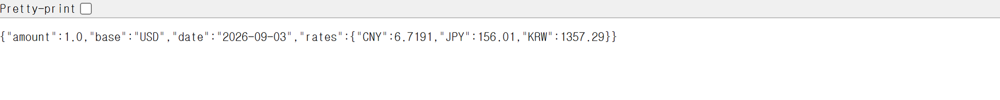
| 항목 | 뜻 |
|---|---|
rates.KRW | 1달러를 원화로 환산한 값 |
date | 환율 고시일 |
| 갱신 | 유럽중앙은행 고시 환율 · 하루 한 번 · 주말엔 새 값 없음 |
날씨 API · Open-Meteo
https://api.open-meteo.com/v1/forecast?latitude=37.57&longitude=126.98¤t=temperature_2m| 부분 | 뜻 |
|---|---|
latitude · longitude | 위도 · 경도 · 이 값은 서울 |
current=temperature_2m | 현재 기온 (지상 2m) |
응답 current · current_units | 기온 값 · 단위 |
API는 코드가 호출, Tool은 모델이 선택
| 구분 | 누가 부르나 | 예 |
|---|---|---|
| API | 프로그램 코드 | 화면이 열리면 환율 API를 호출하도록 작성한 코드 |
| Tool | LLM이 고르고, 앱이 실행 | 「환율 조회」 도구를 LLM이 필요하다고 판단할 때 |
Tool 안에서 API 호출
USD로 불러 줘」
함수 실행
→ 결과
LLM에 전달
MCP: 도구를 연결하는 표준
목록 조회 · 호출 · 결과 전달의 공통 규격
앱마다 따로 만드는 연결
규격이 없으면
- 메일 · 문서 저장소 · 지도 · 업무 시스템마다 요청 형식 · 인증이 다름
- 같은 문서 검색도 AI 앱이 바뀔 때마다 목록 전달 · 결과 반환 코드를 새로
- → 유지보수가 복잡
MCP (Model Context Protocol)
- Anthropic · 2024년 11월 공개
- 서버와 앱이 목록 조회 · 호출 · 결과 전달 형식을 맞춤
- → 같은 연결 부분을 반복해서 만들 필요가 줄어듦
MCP 서버와 MCP 클라이언트
도구를 제공하는 프로그램
정한 규격(표준)
AI 앱 쪽 기능
Microsoft Learn 서버 연결
https://learn.microsoft.com/api/mcp- agent-sim 실행 → [MCP] 탭 · 처음엔 서버 목록이 비어 있음
- 주소 입력 → [추가하고 연결]
- 왼쪽 서버 목록: learn.microsoft.com · 연결 상태
- 오른쪽 도구 목록: 내장 메모 도구 vs 새 MCP 도구 구분
Microsoft Learn MCP
- Microsoft가 운영하는 공개 문서 검색 서버
- 별도 API 키 없음
- 내 학습 이력 · 회사 내부 문서는 읽지 않음
공통 질문으로 실제 검색 확인
Microsoft Learn에서 PowerShell의 현재 폴더를 확인하는 명령을 찾아 설명하고 출처를 보여 줘.- 하단 API 호출 내역: Microsoft 문서 검색 도구의 호출 · 반환값 · 출처 주소
- 연결 표시 ≠ 실제 검색 실행
- 답변의 출처 주소를 열어 원문 확인
연결을 직접 확인하는 순서
[MCP]
주소 · 연결 상태
[앱에 연결된 도구]
제공 서버 · 이름 · 설명
[도구]
공통 질문 실행
API 호출 내역
선택된 도구 · 입력 인자 · 반환 출처 대조
출처 원문
답변의 출처 주소 열기
연결 상태 읽기
| 상태 | 뜻 | 할 일 |
|---|---|---|
| 연결됨 | 해당 서버의 도구가 현재 목록에 들어옴 | 도구 목록 확인 |
| 도구 확인 필요 | 연결 설정은 켰지만 도구를 확인하지 못함 | 오류 안내 읽기 |
| 연결 안 됨 | 연결되지 않은 상태 | 서버 항목의 [연결] |
연결 실패와 연결 해제
연결이 실패하면
https://· 끝의/api/mcp· 공백- 인터넷 접속 · 화면 오류 순서로 확인
- 브라우저로 열어 405 → 웹페이지 GET과 MCP 연결 요청이 다르기 때문일 수 있음
- 주소 · 오류 문구 · 발생 단계 기록 → 앱 안에서 다시 연결
연결 해제 비교
- [연결 끊기] → 서버 주소는 왼쪽 목록에 남는지
- 해당 서버의 도구는 오른쪽 목록에서 빠지는지
- 다시 [연결] → 다음 실습
- 내장 메모 도구 · 다른 서버 도구는 따로 구분
MCP 서버가 하는 두 가지 일
이름 · 설명문 · 입력 형식
tools/list→ 실제 실행 · 결과 반환
tools/callhttps://learn.microsoft.com/api/mcp주소를 추가하면 저장되는 것
{
"server_b4114941dc55dc3c": {
"label": "learn.microsoft.com",
"spec": {
"url": "https://learn.microsoft.com/api/mcp"
}
}
}- 시작 앱의 mcp_catalog.json은 빈 객체
{} - 화면에서 주소 추가 → 이 파일에 등록 정보 저장 · 직접 편집 없음
- mcp_catalog.json: 등록 목록 · mcp_config.json: 연결 설정
- 같은 주소 재추가 → 기존 항목 재사용
- 재시작 후에도 주소는 남음 · 서버 동작 · 연결 상태는 다시 확인
등록부터 실제 호출까지
URL 추가로 자동화되는 것
자동화되는 것
- 외부 목록을 읽어 도구 선언 만들기
- 호출할 연결 함수 등록
- tools/list는 이름 · 설명 · 입력 형식만 · 구현 코드 전체를 내려받지 않음
아닌 것
- 원격 코드가 LLM 안에 설치되는 것
- 브라우저로 MCP 주소를 열어 확인하는 것
- 405 오류 → 웹페이지용 GET을 받지 않는 것일 수 있음 · 앱의 연결 로그로 확인
MCP 클라이언트 코드 읽기
- MCP 연결 · 도구 목록 조회 · 도구 호출이 코드의 어디에 있는지 어떻게 질문할까요?
- 읽을 파일 · 찾을 동작 · 설명 수준 포함
lab/mcp_client.py · lab/registry.py · 코드 수정 없이 읽기API · Tool · MCP 구분
| 구분 | 무엇인가 | 이 수업의 예 |
|---|---|---|
| API | 프로그램이 다른 기능을 요청하는 접점과 약속 | 환율을 요청하는 Frankfurter 웹 API |
| Tool | LLM이 선택하도록 선언하고 실행 코드에 연결한 기능 | 메모 저장 · 환율 조회 · 문서 검색 |
| MCP | 앱과 도구 제공 서버가 목록 · 호출 · 결과를 주고받는 공통 규격 | Microsoft Learn MCP에 문서 검색 요청 |
실습 1 · rag-sim 검색을 API로 내놓기
질문을 보내면 근거 청크를 JSON으로 돌려주는 GET API
연결할 부분 나누기
오늘 만들 전체 구성
로컬 서버
- 서버 = 요청을 기다렸다가 답을 돌려주는 프로그램 · 내 노트북에서 실행하면 내 노트북이 서버
- 이미 여러 번 띄움: run.bat → 검은 창 + 브라우저 · 검은 창 안에서 도는 것이 로컬 서버 · 창을 닫으면 앱도 멈춤
2절 · 원격 서버
- Microsoft가 인터넷에서 운영
https://learn.microsoft.com/api/mcp
이번 · 로컬 서버
- 하는 일의 구조는 같고 위치만 다름
http://127.0.0.1:8790/mcp
주소와 포트
127.0.0.1= 내 컴퓨터 자신 ·localhost와 같은 뜻- 이 주소로 보낸 요청은 밖으로 나가지 않고 내 PC 안에서 처리
:8765같은 숫자 = 포트 · 한 컴퓨터의 여러 서버를 번호로 구분
| 포트 | 서버 |
|---|---|
| 8765 | rag-sim 관리 화면 (유지) |
| 8770 | agent-sim (유지) |
| 8780 | 새 외부 검색 API 서버 |
| 8790 | 새 MCP 서버 |
내 PC에서만 접근하는 서버
127.0.0.1 바인딩
- 내 PC에서 접근
- 로컬 실행 여부 ≠ 외부 접근 허용 · 서로 다른 설정
- 옆자리에서 같은 주소를 넣으면 자기 PC를 가리킴
- 사내 문서를 다루는 기능의 통제에 유리
외부에서 접근하게 하려면
- 방화벽 · 공개 설정을 따로
- 그때부터 누가 접근할 수 있는지가 설계 결정
rag-sim 검색을 API로 내놓기
질문을 HTTP GET으로 보내면 근거 청크를 JSON으로 돌려주는 검색 API 서버 · 관리 탭에서 On/off와 호출 로그 확인
- Claude Code에 요청 작성 · GET 검색 API와 관리 탭
- rag-sim 다시 시작 → [API 서버 On]
- 브라우저로 검색 요청
- 기존 검색 화면 결과와 대조
- Off · On 동작과 API 로그 확인
GET 검색 API와 관리 탭 · 요청 작성
- 다른 프로그램에 어떤 검색 입력과 결과를 제공할까요? HTTP GET 주소 · 인자 · 반환 항목과 관리 화면을 함께
- 기존 검색을 재사용하면서 API 서버만 껐다 켜려면 무엇을 분리할까요? 기존 화면 유지 조건 · 성공 · 실패 로그 항목 포함
127.0.0.1:8780 · GET /api/search · query(질문) · top_k(청크 수, 기본 5)GET 검색 API와 관리 탭 · 조건 계속
검색 API 동작 확인
http://127.0.0.1:8780/api/search?query=1 FIT는 무슨 의미인가요?- 청크 ID · 문서명 · 페이지 · 본문이 JSON으로 · API 로그에 같은 질문과 성공
- 기존 검색 화면에서 같은 질문 · 검색 방식 · 청크 수 → 같은 근거 청크
- 질문을 두세 번 바꿔 요청 · [API 서버 Off] 뒤엔 결과 없음 · 관리 화면은 계속 열림 · 다시 On이면 호출 가능
막히면 · 검색 API
| 증상 | 확인 |
|---|---|
| 연결되지 않음 | API 서버 On 여부 · 화면용 8765가 아닌 8780 · 경로 /api/search · 실행 실패 · 포트 충돌은 관리 탭 상태와 오류 |
| 결과가 비어 있음 | 저장소에 문서가 적재되어 있는지 rag-sim 화면에서 |
| 한글이 깨짐 | 응답을 UTF-8로 보내도록 Claude Code에 수정 요청 |
실습 2 · MCP 서버를 만들어 agent-sim에 연결
검색 API를 부르는 Tool → MCP 서버 → agent-sim
MCP 서버를 만들어 agent-sim에 연결
검색 API를 부르는 rag_search Tool을 MCP 규격으로 제공하고, agent-sim이 도구로 골라 쓰는지 확인
- rag_search Tool 만들기 (4-1)
- MCP 서버 · 같은 관리 탭에서 On/off (4-2)
- agent-sim의 주소 등록 흐름 읽기 (4-3)
- rag-sim MCP 주소 등록 (4-4)
- 반도체 질문 · PowerShell 질문 (4-5)
API의 query와 Tool의 question
rag_search()GET 127.0.0.1:8780/api/search→ JSON 반환검색 API를 부르는 Tool · 요청 작성
- API의 query와 Tool의 question을 어떻게 연결할까요? 함수의 입력 · 호출 · 반환과 도구 선언을 구분
- 저장소의 문서 종류를 확인한 뒤, 어떤 질문에 이 도구를 쓰면 좋을지 설명문에
rag_search(question, top_k) 함수 · 이 단계에서 서버 생성 없음/api/search에 HTTP GET · 받은 JSON 반환 · Off · 시간 초과 · HTTP 오류는 호출 실패로로컬 MCP 서버 · 요청 작성
- agent-sim의 MCP 요청을 받아 Tool을 실행하려면? 클라이언트 코드 확인 · initialize · tools/list · tools/call 흐름
- 같은 관리 탭에서 두 서버를 각각 어떻게 켜고 끌까요? 실제 상태 · 중복 기동 방지 · 입력 · 결과 · 오류 확인 방법
http://127.0.0.1:8790/mcpC:\samsung_ds_YYYYMMDD\agent-sim\lab\mcp_client.py의 요청 · 기대 응답 형식로컬 MCP 서버 · 조건 계속
두 서버 켜기
cd C:\samsung_ds_YYYYMMDD\rag-sim
.\run.bat- rag-sim 다시 시작 → [API · MCP 관리] 탭
- [API 서버 On] → [MCP 서버 On] 순서
- 각 실행 상태 확인
- rag-sim을 실행한 PowerShell 창은 실습 동안 유지
MCP 서버 응답 확인 · 요청 작성
- 서버 코드를 바꾸지 않고 연결 · 목록 · 호출을 어떻게 검증할까요? 원본 응답과 MCP 호출 로그 · API 호출 로그를 함께
http://127.0.0.1:8790/mcp · initialize와 tools/list 응답 원문두 서버를 껐다 켜며 대조
| 상태 | 기대 결과 |
|---|---|
| 둘 다 On | 도구 목록의 rag_search · tools/call 반환 청크 = 3-2 GET API 직접 결과 · 관리 탭에 MCP 호출과 그 안의 API 호출 |
| MCP Off | MCP 호출 실패 · API 직접 호출은 계속 됨 |
| MCP On · API Off | rag_search 호출 시 MCP 로그에 검색 API 연결 오류 |
| 마무리 | 두 서버 모두 On |
agent-sim의 주소 등록 흐름 읽기
- 주소를 입력한 뒤 서버 목록과 도구 목록이 바뀌기까지 어떤 파일과 요청이 연결될까요?
- 성공 · 실패 처리와 같은 주소 재등록 처리를 찾아 설명받을 질문
static/app.js의 mcpAddForm → app.py의 /api/mcp/add → lab/mcp_client.pyrag-sim의 MCP 주소 등록
http://127.0.0.1:8790/mcp- [추가하고 연결] · 2절과 같은 입력 칸
- 연결 상태 + 도구 목록에 rag_search
시작 전
- 4-3은 코드 수정 없음 · agent-sim 그대로
- rag-sim 관리 탭에서 API 서버 · MCP 서버 On 확인
두 질문으로 도구 호출 확인
AEC-Q100의 기계적 충격 시험은 몇 개의 샘플로 수행하나요? 근거 문서와 페이지도 알려 줘.PowerShell에서 현재 폴더를 확인하는 명령은 무엇인가요?- 질문마다 rag_search 호출 여부 · agent-sim 호출 기록 vs rag-sim MCP 로그의 도구 이름 · 인자
- API 로그에도 같은 검색 질문 · 같은 질문 · top_k로 GET API 직접 호출 결과와 대조
- 안 불렸다면 설명문 vs 질문 비교 → 4-1에서 수정 → MCP Off → On → agent-sim 재연결
막히면 · MCP 연결
| 증상 | 확인 |
|---|---|
| MCP 연결 실패 | MCP 서버 On · 포트 8790 · 주소가 /mcp로 끝나는지 · 호출 시도와 오류는 같은 탭 |
| 도구는 불렸는데 검색 오류 | API 서버(8780) On · API 호출 로그 · rag_search는 이 GET API 사용 |
| 연결됐는데 도구 없음 | 4-2의 tools/list 확인 다시 · 서버가 알려 주지 못하면 앱 목록에도 없음 |
| 한글 결과가 깨짐 | 서버 응답을 UTF-8로 보내도록 Claude Code에 수정 요청 |
| 포트가 이미 사용 중 | 관리 탭의 실행 오류 · 해당 포트 · 내가 이전에 실행한 서버만 종료 후 On · 다른 프로그램은 임의로 종료하지 않기 |
설계 관점에서 다시 보기
검색 시점 · 연결 방식 · 입력 크기
검색 여부를 정하는 주체
| rag-sim 화면 | agent-sim + rag_search | |
|---|---|---|
| 구조 | 파이프라인형 RAG | 에이전트형 RAG |
| 검색 시점 | 질문이 오면 항상 검색 | LLM이 필요하다고 판단할 때 검색 |
| 실제 검색 | rag-sim 코드 | rag-sim 코드 (MCP를 거쳐 호출) |
업무 조건에 따른 선택
파이프라인형 · 항상 검색
- 반드시 사내 근거를 확인한 뒤 답해야 하는 업무
- → 더 안전
에이전트형 · 판단해서 검색
- 문서와 관계없는 요청이 섞여 들어오는 업무
- → 불필요한 검색 감소
- 대신 필요한 검색을 건너뛸 가능성
함수와 MCP 서버 중 선택
한 앱에서만 쓴다면
- 앱 안의 함수가 단순
- 서버를 띄우고 관리할 필요 없음
여러 AI 앱이 같은 기능을 쓴다면
- MCP 서버가 유리
- 규격이 같아 한 번 만든 서버를 여러 앱에 연결
더 해보기 · 같은 서버를 Claude Code에
claude mcp add --transport http rag-search http://127.0.0.1:8790/mcp- Claude Code 실행 →
/mcp로 연결 상태 → 반도체 질문 - 서버 코드를 한 줄도 바꾸지 않고 다른 AI 앱에 도구가 붙음 = 「규격」의 의미
- agent-sim 클라이언트에 맞춰 만든 서버라 연결이 안 될 수도 있음 → 오류 메시지를 Claude Code에 보여 주고 규격에 맞게 수정 요청
도구가 늘면 입력도 증가
- 4교시: 도구 선언은 매 요청마다 입력으로
- [도구] 탭 하단 API 호출 내역의 tools에서 도구 수 확인
- 같은 역할 지시문 · 질문으로 MCP 연결 전후 비교
- 최상단 Context Window의 Tools 비중은 추정값 · 실제는 API 호출 내역의 tools
연결 후
입력 토큰 변화
연결할 도구와 반환할 정보
- MCP로 연결해도 1교시의 입력 구성은 그대로: 이름 · 설명 · 입력 규격 전달 → 실행 결과를 다음 입력에
- 서버가 따로 실행돼도 도구 정의 · 결과는 Context Window 안에서 처리
- 저장소 전체가 아니라 실제 반환한 청크의 원문 · 출처가 도구 결과
| 누가 정하나 | 무엇을 |
|---|---|
| RAG 설계 | 검색 범위 · 반환할 근거의 크기 |
| Agent 처리 흐름 | 언제 호출해 어떻게 사용할지 |
설계를 보완하는 질문
필요한 도구
연결한 도구 중 이 과제에 필요한 것은
구별
설명이 비슷한 도구를 구별할 수 있는지
근거 보존
반환한 근거에서 문서명 · 페이지 · 조건이 유지되는지
정리 · 연결한 흐름
정리
API를 감싼 Tool → MCP
API는 코드가, Tool은 AI가 부름 · API를 감싼 Tool을 MCP 규격으로 제공
다른 앱의 도구가 된 RAG
규격이 같아 이 서버는 agent-sim 전용이 아님
업무에 옮길 때의 결정
어떤 문서까지 검색 · 서버를 누구에게 · 읽기만 허용할지 → 도구 제작 = 권한 결정
다양한 MCP 서버 둘러보기
7 · 8교시 캡스톤에서 쓸 만한 서버
한국 MCP 모음 · Awesome MCP Korea
| 분야 | 서버 | 쓰임 |
|---|---|---|
| 국가통계 | korea-stats-mcp | KOSIS 국가통계 자연어 검색 · 분석 · 반도체 수출입 · 생산 통계 |
| 기업 공시 | DART-mcp-server | 상장기업 공시 · 기업 개황 · 재무 정보 · 고객사 · 공급사 공시 |
| 법령 | korean-law-mcp | 법령 · 판례 · 행정규칙 · 화학물질 · 산업안전 규정 |
| 공공데이터 | data-go-mcp-servers | 공공데이터포털의 여러 API를 개별 MCP 서버로 |
캡스톤에서 활용할 만한 MCP
| 분야 | 서버 | 쓰임 |
|---|---|---|
| 논문 검색 | arXiv MCP (예: cyanheads/arxiv-mcp-server) | 공정 · 소자 · 패키징 논문 검색 · 요약 · 개인 구현 여러 개 |
| 내 PC의 파일 | Filesystem · 공식 참고 서버 | 지정 폴더의 파일 읽기 · 찾기 · 실험 결과 · 보고서 |
| 웹 문서 | Fetch · 공식 참고 서버 | 웹페이지를 LLM이 읽기 좋게 · 제조사 공개 문서 |
| 코드 저장소 | Git(공식 참고) · GitHub MCP Server | 분석 스크립트 · 자동화 코드 관리 |
| 제품 기술 문서 | Microsoft Learn (2절) | PowerShell · Excel 등 공식 문서 |
URL 연결과 명령 연결
| 설정 | 앱이 하는 일 | 서버 실행 위치 |
|---|---|---|
{"url":"https://…/mcp"} | 주소에 HTTP 연결 | 서비스 제공자의 서버 또는 지정한 PC |
{"command":"npx","args":["…"]} | 설치된 Node.js 환경에서 패키지 실행 | 내 PC |
{"command":"python","args":["server.py"]} | 로컬 Python 서버 실행 | 내 PC |
MCP와 API 다시 구분
| 구분 | API | MCP |
|---|---|---|
| 목적 | 프로그램이 외부 기능 · 데이터를 요청 | AI 앱과 Tool 서버가 Tool을 공통 방식으로 연결 |
| 기능 확인 | API 문서를 개발자가 확인 | tools/list로 Tool 정보 확인 |
| 호출 주체 | 일반 프로그램 코드 | MCP Client |
| LLM Tool 연결 | 개발자가 별도로 구현 | MCP Tool 정보를 LLM Tool로 전달 가능 |
| 이번 실습 | Frankfurter · Open-Meteo · rag-sim /api/search | Microsoft Learn · rag_search MCP |
1~5교시를 이은 구조
MCP와 API로 하나씩 연결하면서 AI Agent를 확장
6교시 · Multi-Agent
생산라인 이벤트의 판정과 조사를 나누는 구조 · 팩토리 시뮬레이터와 Decisions API · 처리 비용과 실행 조건
Multi-Agent
Decisions와 조사 Agent
자주 하는 판정과 비용이 큰 조사를 나누고, 판단과 실행을 잇는 기본 흐름을 만듭니다
학습 목표
연결 방식
순차 · 병렬과 집계 · 계층형
운영 방식
도구 공유 · 사람 개입
Decisions API
predicate 판정 · 확률 · 기준값
판정 → 조사
기준값을 넘은 이벤트만 조사 Agent로
과정 전체 흐름
오늘의 실습 구성
모의 생산라인 켜기
line-sim 서버 · 고정된 합성 데이터
[decisions] 탭 만들기
완성형 Prompt 그대로 복사 · 감시 · 판정 화면
조사 Agent 연결
가이드라인에 따라 요청 직접 작성
- 입력 위치 구분: [Claude Code] · [PowerShell] · [브라우저] · [앱 화면]
- rag-sim · MCP 서버는 이번 실습에서 사용하지 않음 · 꺼도 됨
멀티에이전트의 구성 방식과 설계 요소
Agent 사이의 연결 → 도구와 사람 개입의 통제
Agent 하나에 모든 일을 맡길 때
- 사용하는 Context와 Tool이 늘어남
- 한 단계의 잘못된 판단이 이후 작업으로 이어짐
역할을 여러 Agent로 나눌 때
Agent 하나
- 모든 일을 한 Agent가
- Context · Tool이 계속 늘어남
- 잘못된 판단이 다음 단계로 전달
역할별 Agent
- Agent마다 맡는 범위를 좁힘
- 필요한 Context와 Tool을 구분
- 역할마다 다른 구성
순차 실행 · Sequential
병렬 실행과 집계 · Aggregator
계층형 · Hierarchical
세 가지 연결 방식 비교
| 방식 | 연결 | 특징 |
|---|---|---|
| 순차 실행 | 앞 단계 결과 → 다음 단계 입력 | 순서 변경 · 동시 실행 불가 |
| 병렬 실행과 집계 | 독립적인 일을 동시에 → 마지막에 하나로 | 다른 Agent의 결과를 모른 채 작업 |
| 계층형 | 상위 Agent가 나눠 맡기고 결과 정리 | 하위마다 역할 · Context · Tool 구분 · 필요한 Agent만 선택 |
도구 공유 · Shared Tools
사람 개입 · Human-in-the-loop
이번 실습의 출발점
이벤트 판정
찾아 조사
자주 하는 판정과 필요한 조사 나누기
Decisions API가 고르고, 조사 Agent가 설명
생산라인 기록은 계속 들어옴
- 공정 시작 · 종료 기록 · 센서 값 · 알람
- 기록마다 조사하면 대기 시간 · 호출 횟수 증가
판정과 조사의 역할 분리
predicate가 추정하는 것
이 실습의 조건
- 「제공한 이벤트에 추가 조사가 필요한 이상 징후가 있는가」
- 조건을 만족할 가능성을 0~1로 추정
확률이 아닌 것
- 실제 공정의 불량 발생률을 측정한 값 아님
- 같은 입력에서도 추정값은 달라질 수 있음
Decisions API의 세 가지 답
predicate
조건이 참일 추정 확률 (0~1)
이번 실습 · 새롭게 조사할 이상 징후가 있는가
choice
미리 정한 선택지 중 하나
예 · 문의를 어느 부서로 보낼지
score
순서가 있는 평가 단계의 확률 가중 평균
예 · 심각도를 단계별 기준으로
요청과 응답의 구조
POST https://api.openai.com/v1/decisions
{
"model": "gpt-6-luna",
"input": "이벤트 원본 정보 + 교육용 합성 데이터 설명",
"questions": [
{
"type": "predicate",
"name": "needs_investigation",
"instructions": "현재 이벤트에 새롭게 조사할 …"
}
]
}{
"answers": [
{
"name": "needs_investigation",
"type": "predicate",
"probability": (API가 돌려준 원래 숫자)
}
]
}- answers에서 질문의 name으로 결과 찾기
- probability를 화면에 표시
- 앱의 기준값과 비교
공식 문서 기준
https://developers.openai.com/api/docs/guides/decisionsN회 판정 + M회 조사
판정에서 조사까지
기준값 0.5는 시작값
- 추정값 ≥ 기준값 → 이벤트마다 조사 Agent
- 낮추면 조사 대상 · 비용 증가 · 높이면 놓칠 수 있음
앱이 정하는 것, Agent가 정하는 것
앱
- 언제 판정할지
- 언제 조사 Agent를 부를지 · 호출 조건
- 기준값 · 기본 0.5
조사 Agent
- 어떤 도구로
- 무엇을 조회할지
- 조회 결과로 원인 가설 · 추가 확인
모의 생산라인 켜기
판정할 이벤트를 공급하는 서버부터
모의 생산라인 실행
판정할 이벤트를 공급하는 line-sim 서버를 켜고 데이터와 이벤트 API 확인
- line-sim 폴더의 파일 확인
- run_line.bat 실행 · 서버 창 유지
- 브라우저에서 재생 조작
- 이벤트 API 열어 JSON 확인
서버 실행
폴더 이동
samsung-ds-btrack 하단의 line-sim 폴더
파일 확인
run_line.bat · server.py · timeline.json · maintenance.json
실행
run_line.bat 실행 · 서버 창은 그대로
cd C:\samsung_ds_YYYYMMDD\line-sim
.\run_line.bathttp://127.0.0.1:8800/재생 조작
| 화면 · 버튼 | 동작 |
|---|---|
| 처음 | 대기 상태 · 이벤트 한 개 |
| [재생 시작] | 3분 동안 13개 이벤트 공개 |
| [끝까지 보기] | 나머지 즉시 공개 |
| [처음부터] | 재생 초기화 |
가상의 LOT-001이 지나는 장비
이벤트 API 열기
http://127.0.0.1:8800/api/events?since=0- 5교시 API처럼 주소 요청 → JSON 응답
- 이번에는 내 PC의 서버가 데이터 제공
- 서버 창은 실습이 끝날 때까지 켜 두기
이벤트 감시와 Decisions 판정
완성형 Prompt로 [decisions] 탭 만들기
[decisions] 탭 만들기
생산라인 이벤트를 감시하고 Decisions API로 조사 필요 확률을 판정하는 화면
- agent-sim 폴더에서 Claude Code 열기
- 완성형 Prompt 전체 복사 · 붙여 넣기
- [decisions] 탭에서 [감시 시작]
- 확률 · Request / Response 확인
시작 전 확인
- 기존 agent-sim 폴더에서 Claude Code 열기
- 4 · 5교시 .env의 OPENAI_API_KEY 그대로 사용
- 모의 서버에는 키를 넣지 않음
http://127.0.0.1:8800/모의 서버는 켜 둔 채로
구현 참고 · OpenAI Decisions 공식 문서
https://developers.openai.com/api/docs/guides/decisions
Prompt 안에 주소 포함 · 함께 전달
완성형 Prompt 구성
agent-sim의 Decisions 실습을 구현·개선해 줘.
목표는 UI 개발이 아니라 OpenAI Decisions API를 실제 호출하고, 수강생이 서버에 전송한 Request와 실제 Response를 직접 확인하는 것이다.
먼저 README와 기존 코드를 확인해 줘. Decisions 탭이 있으면 재사용하고, 없으면 기존 탭 구조에 최소한으로 추가해 줘. 도구·MCP·에이전트 등 다른 기능은 유지하고, 불필요한 UI나 구조 변경은 하지 마.
공식 문서:
https://developers.openai.com/api/docs/guides/decisions
1. 기존 확률 처리 진단
predicate 확률이 0 또는 1로만 표시된다면 다음을 확인해 줘.
- 실제 API 응답의 answers[].probability
- 서버의 응답 추출 과정과 브라우저 표시 과정
- round, parseInt, 정수·Boolean 변환 여부
- 기준값 비교 결과를 probability 대신 표시하는지
API가 실제로 0 또는 1을 반환했다면 정상 결과로 인정해 줘.
중간값을 만들기 위한 수치 보정이나 가짜 확률은 금지한다.
확률은 API의 원래 숫자값을 보존하고, 표시할 때 반올림하지 마.
기존 구현이나 통신 기록이 없으면 과거 문제의 원인을 추측해서 확정하지 마.
2. 생산라인 감시
line-sim/API_GUIDE.md를 읽고 실제 경로와 파라미터를 따라 줘.
- [감시 시작]을 누르면 POST /api/reset에 {"play": true}를 보내 처음부터 재생한다.
- 브라우저가 2초마다 /api/events를 조회한다.
- since와 run_id를 사용해 새 이벤트만 가져온다.
- 동일한 seq는 중복 판정하지 않는다.
- 이벤트 조회와 Decisions 처리는 별도로 동작한다.
- 새 이벤트는 순서대로 대기열에 넣는다.
- Decisions 호출은 동시에 1건만 실행한다.
- 자동·수동 호출을 합쳐 호출 시작 간격을 최소 3초로 유지한다.
- 감시는 최대 180초에 자동 종료한다.
- 종료 후 대기열의 새 판정 호출을 시작하지 않는다.
- 이미 시작한 요청은 완료될 수 있으며 결과를 표시한다.
- 종료 시 남은 이벤트는 미호출 상태로 표시한다.
감시는 브라우저가 주도한다. 서버의 자율 반복 감시, 별도 중지 버튼, heartbeat, 브라우저 생존 확인 기능은 만들지 마.
서버에서도 기한을 확인해 대기 중이던 자동 요청이 180초 이후 새 OpenAI 호출을 시작하지 않게 해 줘.
3. Decisions API
서버에서 다음 API를 호출해 줘.
- Method: POST
- Endpoint: https://api.openai.com/v1/decisions
- Model: gpt-6-luna
- API Key: 기존 .env의 OPENAI_API_KEY
- Question type: predicate
- Question name: needs_investigation
questions의 instructions는 다음 문구를 사용해 줘.
“현재 이벤트에 새롭게 조사할 필요가 있는 품질 이상 징후가 있는가? 정상적인 공정 시작·종료 및 관리 범위 내의 측정값은 조사 대상으로 판단하지 않는다. 제공된 이벤트의 정보만 평가하고 미래 이벤트를 추측하지 않는다.”
input에는 해당 이벤트의 원본 정보 전체와 교육용 합성 데이터라는 설명을 포함해 줘.
응답 answers에서 name이 needs_investigation인 항목을 찾고, type이 predicate인지 확인한 후 probability를 추출해 줘.
HTTP 오류, refusal, 응답 형식 오류, 네트워크 오류는 구분해 표시한다. 실패를 0이나 다른 확률로 대체하지 마.
자동 재시도로 추가 호출을 만들지 마.
브라우저가 OpenAI API에 직접 접근하지 않도록 해 줘.
API 키·인증 헤더는 화면이나 로그에 노출하지 마.
4. 실제 Request / Response 확인
이벤트를 선택하면 해당 이벤트와 연결된 실제 통신 기록을 보여줘.
A. 생산라인 이벤트 API
- Request: HTTP Method, 실제 URL, Query Parameters
- Response: HTTP Status, 실제 수신 JSON
B. OpenAI Decisions API
- Request: HTTP Method, Endpoint, 실제 전송 JSON 전체
- Response: HTTP Status, 실제 수신 JSON
Request에서 model, input, questions, type, name, instructions를 확인할 수 있어야 한다.
Response에서 answers와 probability의 원래 값을 확인할 수 있어야 한다.
실제로 보낸 요청 객체와 실제로 받은 응답을 기록해 줘.
가상의 예시 JSON을 만들어 표시하지 마.
usage 정보만 화면에서 제외하고, 생략 사실을 표시해 줘.
각 JSON은 단순한 코드 블록으로 표시하고 복사 버튼을 제공해 줘.
5. 최소 화면
상단:
- [감시 시작]
- 경과 시간과 감시 상태
이벤트 목록:
- seq
- 장비
- 이벤트 내용
- 조사 필요 확률(probability)
- 판정 상태
이벤트 상세:
- 생산라인 API Request / Response
- Decisions API Request / Response
기준값은 0.5다. probability가 0.5 이상이면 ‘조사 대상’으로 표시하되, 확률 자체는 변경하지 마.
별도 대시보드·차트·애니메이션·복잡한 카드 UI는 만들지 마.
조사 Agent, 전문 Agent, 멀티에이전트 호출은 구현하거나 연결하지 마.
6. API 단독 테스트
선택한 이벤트의 input을 편집하는 입력란과 [Decisions 테스트] 버튼을 추가해 줘.
- 버튼을 누르면 편집한 input으로 API를 정확히 1회 호출한다.
- 실제 Request와 Response, probability를 바로 표시한다.
- 원래 이벤트 데이터와 자동 감시의 판정 결과는 변경하지 않는다.
- 테스트 결과에는 어느 seq에서 시작한 테스트인지 표시한다.
- 자동 호출과 같은 단일 실행·최소 3초 시작 간격 제한을 적용한다.
- 감시 종료 후 사용자가 명시적으로 누른 수동 테스트는 별도 1회 호출로 허용한다.
정상 이벤트, 명확한 이상 이벤트, 판단이 애매한 이벤트를 비교할 수 있어야 한다.
choice·score를 위한 UI는 추가하지 마.
7. 실제 검증
기존 키로 실제 API를 호출하여 다음을 검증해 줘.
- 이벤트 조회가 약 2초 간격인가?
- Decisions 호출이 동시에 1건이며 시작 간격이 최소 3초인가?
- 동일 seq를 중복 판정하지 않는가?
- 공식 규격의 JSON을 실제로 전송하는가?
- HTTP 상태와 실제 응답 JSON을 확인·복사할 수 있는가?
- API 원본 probability와 화면 표시 값이 일치하는가?
- 수동 input 수정이 실제 요청에 반영되는가?
- 수동 테스트가 원래 이벤트와 판정을 보존하는가?
- 180초에 자동 종료하고 이후 새 자동 호출을 시작하지 않는가?
실제 API 검증과 모의 응답을 사용한 오류 분기 시험을 구분해서 보고해 줘.
0/1 또는 중간값 중 특정 결과가 나오도록 강제하지 마.
완료 후 변경 파일, 실행 주소, 실제 테스트 결과, 확률 문제의 확인된 원인과 미확인 사항을 간단히 보고해 줘.목표와 확률 처리 진단
agent-sim의 Decisions 실습을 구현·개선해 줘.
목표는 UI 개발이 아니라 OpenAI Decisions API를 실제 호출하고, 수강생이 서버에 전송한 Request와 실제 Response를 직접 확인하는 것이다.
먼저 README와 기존 코드를 확인해 줘. Decisions 탭이 있으면 재사용하고, 없으면 기존 탭 구조에 최소한으로 추가해 줘. 도구·MCP·에이전트 등 다른 기능은 유지하고, 불필요한 UI나 구조 변경은 하지 마.
공식 문서:
https://developers.openai.com/api/docs/guides/decisions
1. 기존 확률 처리 진단
predicate 확률이 0 또는 1로만 표시된다면 다음을 확인해 줘.
- 실제 API 응답의 answers[].probability
- 서버의 응답 추출 과정과 브라우저 표시 과정
- round, parseInt, 정수·Boolean 변환 여부
- 기준값 비교 결과를 probability 대신 표시하는지
API가 실제로 0 또는 1을 반환했다면 정상 결과로 인정해 줘.
중간값을 만들기 위한 수치 보정이나 가짜 확률은 금지한다.
확률은 API의 원래 숫자값을 보존하고, 표시할 때 반올림하지 마.
기존 구현이나 통신 기록이 없으면 과거 문제의 원인을 추측해서 확정하지 마.생산라인 감시
2. 생산라인 감시
line-sim/API_GUIDE.md를 읽고 실제 경로와 파라미터를 따라 줘.
- [감시 시작]을 누르면 POST /api/reset에 {"play": true}를 보내 처음부터 재생한다.
- 브라우저가 2초마다 /api/events를 조회한다.
- since와 run_id를 사용해 새 이벤트만 가져온다.
- 동일한 seq는 중복 판정하지 않는다.
- 이벤트 조회와 Decisions 처리는 별도로 동작한다.
- 새 이벤트는 순서대로 대기열에 넣는다.
- Decisions 호출은 동시에 1건만 실행한다.
- 자동·수동 호출을 합쳐 호출 시작 간격을 최소 3초로 유지한다.
- 감시는 최대 180초에 자동 종료한다.
- 종료 후 대기열의 새 판정 호출을 시작하지 않는다.
- 이미 시작한 요청은 완료될 수 있으며 결과를 표시한다.
- 종료 시 남은 이벤트는 미호출 상태로 표시한다.
감시는 브라우저가 주도한다. 서버의 자율 반복 감시, 별도 중지 버튼, heartbeat, 브라우저 생존 확인 기능은 만들지 마.
서버에서도 기한을 확인해 대기 중이던 자동 요청이 180초 이후 새 OpenAI 호출을 시작하지 않게 해 줘.Decisions API 호출
3. Decisions API
서버에서 다음 API를 호출해 줘.
- Method: POST
- Endpoint: https://api.openai.com/v1/decisions
- Model: gpt-6-luna
- API Key: 기존 .env의 OPENAI_API_KEY
- Question type: predicate
- Question name: needs_investigation
questions의 instructions는 다음 문구를 사용해 줘.
“현재 이벤트에 새롭게 조사할 필요가 있는 품질 이상 징후가 있는가? 정상적인 공정 시작·종료 및 관리 범위 내의 측정값은 조사 대상으로 판단하지 않는다. 제공된 이벤트의 정보만 평가하고 미래 이벤트를 추측하지 않는다.”
input에는 해당 이벤트의 원본 정보 전체와 교육용 합성 데이터라는 설명을 포함해 줘.
응답 answers에서 name이 needs_investigation인 항목을 찾고, type이 predicate인지 확인한 후 probability를 추출해 줘.
HTTP 오류, refusal, 응답 형식 오류, 네트워크 오류는 구분해 표시한다. 실패를 0이나 다른 확률로 대체하지 마.
자동 재시도로 추가 호출을 만들지 마.
브라우저가 OpenAI API에 직접 접근하지 않도록 해 줘.
API 키·인증 헤더는 화면이나 로그에 노출하지 마.실제 Request / Response 확인
4. 실제 Request / Response 확인
이벤트를 선택하면 해당 이벤트와 연결된 실제 통신 기록을 보여줘.
A. 생산라인 이벤트 API
- Request: HTTP Method, 실제 URL, Query Parameters
- Response: HTTP Status, 실제 수신 JSON
B. OpenAI Decisions API
- Request: HTTP Method, Endpoint, 실제 전송 JSON 전체
- Response: HTTP Status, 실제 수신 JSON
Request에서 model, input, questions, type, name, instructions를 확인할 수 있어야 한다.
Response에서 answers와 probability의 원래 값을 확인할 수 있어야 한다.
실제로 보낸 요청 객체와 실제로 받은 응답을 기록해 줘.
가상의 예시 JSON을 만들어 표시하지 마.
usage 정보만 화면에서 제외하고, 생략 사실을 표시해 줘.
각 JSON은 단순한 코드 블록으로 표시하고 복사 버튼을 제공해 줘.최소 화면
5. 최소 화면
상단:
- [감시 시작]
- 경과 시간과 감시 상태
이벤트 목록:
- seq
- 장비
- 이벤트 내용
- 조사 필요 확률(probability)
- 판정 상태
이벤트 상세:
- 생산라인 API Request / Response
- Decisions API Request / Response
기준값은 0.5다. probability가 0.5 이상이면 ‘조사 대상’으로 표시하되, 확률 자체는 변경하지 마.
별도 대시보드·차트·애니메이션·복잡한 카드 UI는 만들지 마.
조사 Agent, 전문 Agent, 멀티에이전트 호출은 구현하거나 연결하지 마.API 단독 테스트
6. API 단독 테스트
선택한 이벤트의 input을 편집하는 입력란과 [Decisions 테스트] 버튼을 추가해 줘.
- 버튼을 누르면 편집한 input으로 API를 정확히 1회 호출한다.
- 실제 Request와 Response, probability를 바로 표시한다.
- 원래 이벤트 데이터와 자동 감시의 판정 결과는 변경하지 않는다.
- 테스트 결과에는 어느 seq에서 시작한 테스트인지 표시한다.
- 자동 호출과 같은 단일 실행·최소 3초 시작 간격 제한을 적용한다.
- 감시 종료 후 사용자가 명시적으로 누른 수동 테스트는 별도 1회 호출로 허용한다.
정상 이벤트, 명확한 이상 이벤트, 판단이 애매한 이벤트를 비교할 수 있어야 한다.
choice·score를 위한 UI는 추가하지 마.실제 검증과 보고
7. 실제 검증
기존 키로 실제 API를 호출하여 다음을 검증해 줘.
- 이벤트 조회가 약 2초 간격인가?
- Decisions 호출이 동시에 1건이며 시작 간격이 최소 3초인가?
- 동일 seq를 중복 판정하지 않는가?
- 공식 규격의 JSON을 실제로 전송하는가?
- HTTP 상태와 실제 응답 JSON을 확인·복사할 수 있는가?
- API 원본 probability와 화면 표시 값이 일치하는가?
- 수동 input 수정이 실제 요청에 반영되는가?
- 수동 테스트가 원래 이벤트와 판정을 보존하는가?
- 180초에 자동 종료하고 이후 새 자동 호출을 시작하지 않는가?
실제 API 검증과 모의 응답을 사용한 오류 분기 시험을 구분해서 보고해 줘.
0/1 또는 중간값 중 특정 결과가 나오도록 강제하지 마.
완료 후 변경 파일, 실행 주소, 실제 테스트 결과, 확률 문제의 확인된 원인과 미확인 사항을 간단히 보고해 줘.감시와 판정은 따로 동작
seq 순서
[decisions] 탭의 최소 화면
| seq | 장비 | 이벤트 내용 | 조사 필요 확률 | 판정 상태 |
|---|---|---|---|---|
| 1 | EQ-A | 이벤트 내용 | probability | 판정 상태 |
| 2 | EQ-A | 이벤트 내용 | probability | 판정 상태 |
| 3 | EQ-B | 이벤트 내용 | probability | 판정 상태 |
- probability ≥ 0.5 → 조사 대상 표시
- 확률 자체는 변경하지 않음
- usage만 제외 · 생략 사실 표시
- 대시보드 · 차트 · 애니메이션 없음
만들어진 화면 확인
탭 열기
Claude Code가 안내한 주소 → [decisions] 탭 · 열리지 않으면 실제 오류와 주소를 알려 수정
[감시 시작]
이벤트가 한 줄씩 늘어나고 줄마다 조사 필요 확률이 채워짐
처리 상태
대기 수 · 완료 수 · 호출 수 · 시작 시각 · 앞 요청이 길면 간격도 길어짐
[끝까지 보기]
모의 서버 화면에서 누르면 나머지 이벤트가 한꺼번에
판정 읽기
확인할 것
- predicate의 조건과 실제 입력 → 「조사 필요」의 뜻
- 어느 이벤트의 확률이 높은지
- 공정 종료 · 관리 범위 안의 측정값은 몇으로 나왔는지
이상 신호
- 정상적인 시작 · 종료만으로 조사 대상
- 아직 일어나지 않은 이벤트를 추측
- 판정 실패 · refusal을 0으로 표시
감시의 수명과 중지
- 탭을 닫는 순간의 즉시 중지는 모든 환경에서 보장 불가
- 서버: 마지막 생존 확인(heartbeat) 후 10초가 지나면 감시 만료
- 이미 전송한 API 1건은 완료될 수 있음
- 만료 · 중지 뒤에는 새 판정 · 후속 조사 시작 없음
[직접 확인]
- 감시 중 agent-sim 탭 닫기
- 서버 로그: 중지 사유 · 시각 · 마지막 API 호출 시각
- 다시 열면 중지 상태
- 이어서 실습: [감시 시작] 다시
기준값을 넘으면 조사 Agent 호출
판정 입력을 그대로 넘기고 도구로 조회
조사 Agent 연결
기준값을 넘은 이벤트를 조사 Agent에 넘기고, Agent가 도구로 Lot 이력과 정비 기록을 조회하게 하기
- 가이드라인 · 키워드 읽기
- 실습 조건 확인
- 요청문 직접 작성 · 같은 창
- 새로고침 후 [감시 시작]
판정 다음에 필요한 정보
Prompt 작성 가이드라인
기준값과 조사 Agent 연결
- 어떤 조건에서 조사하고, Agent에게 어떤 Context와 도구를 줄지
- 판정 입력을 조사로 이어 주는 흐름
- 조사 결과의 근거 · 표시 방식
- 같은 이벤트의 반복 호출을 막을 조건
- 탭 종료 · 감시 중지 후 조사도 새로 시작하지 않도록 실행 수명 연결
실습 조건 확인
| 항목 | 조건 |
|---|---|
| 호출 조건 | 조사 필요 확률이 기준값 이상인 이벤트 · 기준값 입력칸 · 기본값 0.5 |
| 전달 Context | 해당 이벤트 + Decisions API에 보냈던 입력 전체를 그대로 |
| 조사 실행 | 기존 Responses API 호출 코드 · 모델 재사용 · 감시 소유자 · run_id · 중지/만료 상태 공유 |
| 도구 범위 | 모의 서버의 조회 API만 · Lot 이력 · 이벤트 · 정비 기록 |
| 결과 | 원인 가설 · 근거(이벤트 seq, 정비 기록 ID) · 추가 확인 사항 · 짧은 한국어 |
| 화면 · 중복 | 이벤트 행 아래 펼쳐 표시 · 호출 도구와 인자도 · 같은 이벤트 중복 조사 금지 |
조사 결과 확인
새로고침
브라우저 새로고침 → [감시 시작] 다시
결과
기준값 이상인 이벤트 → 그 행 아래 조사 결과
펼침
Agent가 어떤 도구를 어떤 인자로 불렀는지
보고가 하나도 없다면
- 표시된 확률과 판정 조건 확인
- 연결 동작을 볼 때는 기준값을 낮춰 다시 시작
- 이 조정만으로 업무에 맞는 기준값을 찾았다고 판단하지 않음
연결된 동작 확인
이벤트 → 판정 → 기준값 초과 → 도구 조회 → 조사 결과
확인할 장면
판정
Decisions가 이벤트마다 판정한 확률이 표에
연결
기준값을 넘은 이벤트와 그 판정 입력이 조사 Agent의 입력에
도구 호출
Lot 이력 · 정비 기록 조회 같은 도구 호출
조사 결과
조회 결과를 읽은 뒤 원인 가설 · 추가 확인 사항
기록 발견과 원인 확정은 별개
- 정비 기록을 찾았다 ≠ 원인을 확정했다
- 근거로 쓴 이벤트 · 기록 확인
- 더 확인해야 할 사항 읽기
이번 앱의 역할 분담
Decisions API · 판정
- 자주 반복되는 판정
- 빠르고 저렴 · 이벤트마다
조사 Agent · 조사
- 자료를 찾아 설명
- 비용이 큼 · 기준값을 넘은 이벤트만
완료 확인
막히면 확인
서버 · 이벤트 · API 오류 · 조사 연결 · 감시 만료
막히면 확인
| 증상 | 확인 |
|---|---|
| 서버가 켜지지 않음 | Python과 이전 서버 창 · 포트 사용 중이면 이전 line-sim 창 닫기 |
| 이벤트가 안 보임 | 브라우저에서 8800번 모의 서버가 열리는지 |
| Decisions 권한 · 모델 오류 | 오류 상태 확인 → 강사에게 · API 키 자체를 채팅에 붙이지 않기 |
| 429 또는 잔액 오류 | 감시 멈추고 오류 안내에 따라 재시도 · 잔액 · 프로젝트 한도는 강사와 |
| 조사가 시작되지 않음 | 판정 조건과 확률 열 · 기준값 이상이 없으면 연결 확인용으로 기준값 낮추기 |
| 조사에서 도구를 안 씀 | 도구 호출 기록 → 도구 등록과 지침을 Claude Code에 확인시키기 |
| 연결 확인 만료로 멈춤 | 백그라운드 · 절전 · 통신 끊김으로 heartbeat 지연 · 다시 열어 중지 사유 확인 → [감시 시작] · 자동으로 되살리지 않음 |
정리
연결 방식
순차 · 병렬과 집계 · 계층형 → 일의 의존 관계로 선택
운영 방식
역할별로 필요한 Tool만 · 되돌릴 수 없는 행동은 사람 승인
판정과 조사 분리
Decisions predicate로 N회 판정 · 기준값 이상만 M회 조사
앱과 Agent의 경계
호출 조건 · 실행 수명은 앱 · 조회할 도구와 내용은 Agent
7교시 · 캡스톤 1
기획과 제작
캡스톤 1
기획과 제작
제출 플랫폼에 가입하고, 업무 결과물을 기준으로 주제를 정해 구현합니다
학습 목표
제출 준비
산출물 제출 플랫폼 가입 · 프로필 실명 입력
트랙 선택
AI Agent 또는 Multi-modal RAG 중 하나
목표 정의
입력 · 결과물 · 완료 조건까지 정하기
단계별 구현
단계마다 요청하고 화면에서 결과 확인
과정 전체 흐름
제출 플랫폼 가입
8교시에 완성한 결과 페이지를 제출할 곳
회원가입
접속
contest-platform-production.up.railway.app/samsungds-B
회원가입 탭
오른쪽 위 [로그인] → [회원가입]
이메일 · 비밀번호
본인 knox 이메일 두 번 입력 · 비밀번호 설정
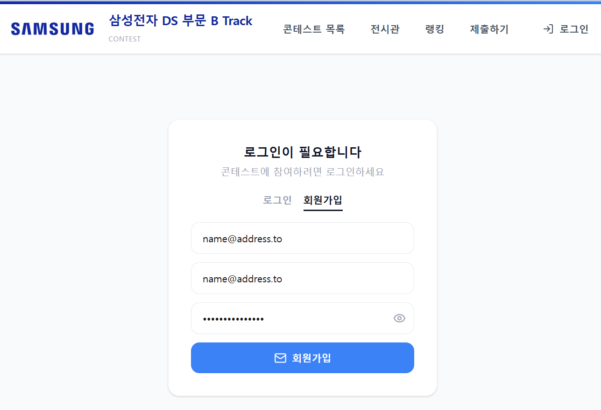
프로필에 실명 입력
- 가입 후 프로필에 본인 실명 입력
- 결과물 전시관에 이 이름이 표시됨
- 8교시 제출도 이 계정으로
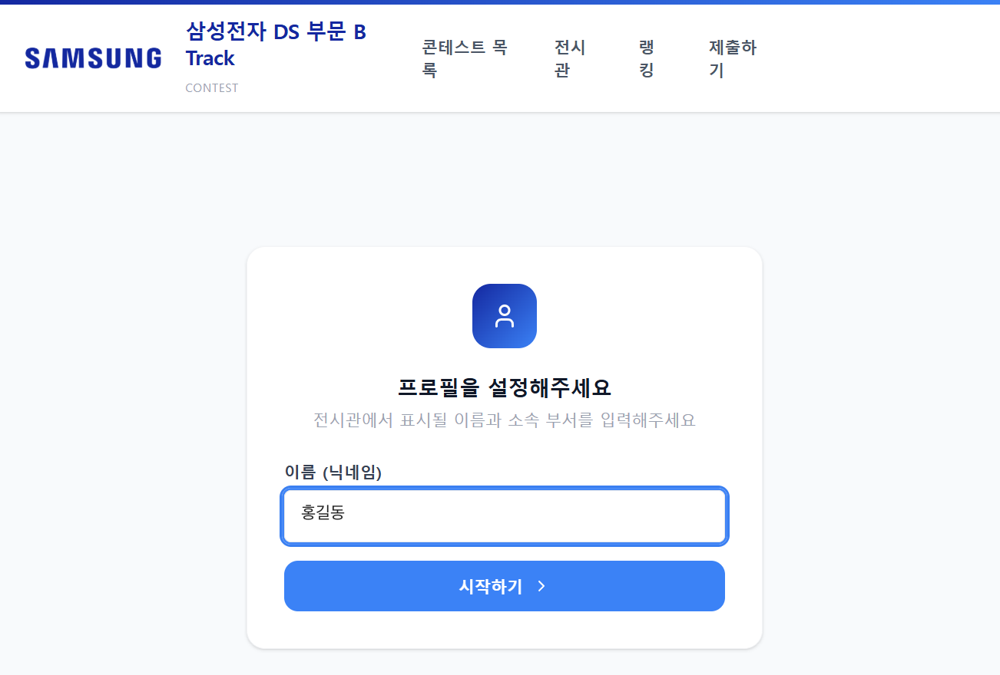
캡스톤 주제 A / B
두 트랙 중 하나를 선택해 진행
두 트랙
AI Agent
업무 목표를 받아 필요한 Tool을 고르고, 실행 결과에 따라 다음 행동을 결정
Multi-modal RAG
그림 · 표 · 도식이 많은 PDF를 페이지 그대로 검색해 답변
A. AI Agent 트랙
답변이 대화창에서 끝남
자료 찾기 · 파일 읽기 · 데이터 계산 · 외부 시스템 조회
다음 행동: 추가 조회 · 계산 · 사용자 확인 · 종료
A 트랙 작업 예시
파일 정리
여러 파일을 읽어 필요한 내용을 찾아 정리
CSV 집계
시험 결과 CSV를 분석해 조건별 집계표 작성
누락 확인
폴더에서 누락된 파일이나 항목 확인
검토표
여러 자료를 비교해 검토표 생성
함께 조사
내부 데이터와 외부 정보를 함께 조사
반복 자동화
반복되는 자료 확인 · 정리 작업 자동화
A 트랙 Tool 예시
| 필요한 기능 | Tool |
|---|---|
| 외부 정보 조사 | Web Search |
| 파일 · 폴더 접근 | Filesystem MCP |
| 계산 · 가공 | Python Tool |
| DB 조회 | SQLite / 직접 만든 Tool |
| 웹 페이지 조회 | Fetch 계열 MCP |
- 직접 Tool로 만들거나 제공된 MCP 활용
- 모든 Tool을 사용할 필요 없음
B. Multi-modal RAG 트랙
텍스트만 추출하는 RAG
- 그림 안의 글자
- 표의 구조
- 도식의 연결 관계
- → 잃기 쉬움
이 트랙
- 페이지를 이미지로 바꿔 임베딩
- 찾은 페이지 이미지를 근거로 답변
- 임베딩 모델: 내 PC에서 실행하는 EmbeddingGemma 2
캡스톤 시작 전 확인
실제 업무와 가까운 주제 · 입력하는 정보는 계속 확인
외부 AI 서비스에 입력하지 않는 것
사내 기밀
실제 사내 기밀 정보
미공개 제품 정보
출시 전 제품 · 사양
고객 정보
고객사 · 거래 정보
개인정보
이름 · 연락처 등
내부 코드 · 문서
사내 코드 · 내부 문서
대신 사용할 것
공개 문서 · 교육용 가상 데이터 · 실제 CSV는 형식만 본뜬 가상 데이터
대화가 깊어질수록 섞이는 정보
실습 중 보안 원칙
Agent 트랙
업무를 수행하는 AI Agent 만들기
내 업무의 일부를 실제로 수행
- 반복해서 확인 · 정리하는 작업
- 여러 자료를 함께 봐야 하는 작업
- 사람이 매번 손으로 처리하는 작업
주제 예시
누락 항목
폴더의 여러 시험 결과를 읽고 누락 항목 찾기
조건별 집계
CSV 데이터를 읽어 조건별 결과 집계
변경점 비교
여러 문서를 찾아 변경점 비교
후속 조치
자료를 읽고 회의 후속 조치 목록 만들기
함께 조사
내부 데이터와 외부 정보를 함께 조사
인수인계
여러 파일을 찾아 인수인계용 정리표 만들기
수행할 작업 하나 정하기
입력
Agent가 어떤 입력을 받는가
Tool
어떤 Tool을 실제로 사용해야 하는가
결과물
실행이 끝나면 어떤 업무 결과물이 나오는가
- 시험 결과 CSV가 들어 있는 폴더
- 파일 찾기
- CSV 읽기
- 조건별 결과 계산
- 누락 항목 확인
- 시험 결과 집계표
- 누락 목록
목표는 완료 조건까지
누락 · 기준 이탈 · 판단 불가 항목과 근거를 담은
검토표를 만든다
목표를 이루는 다섯 가지
| 항목 | 시험 결과 검토 Agent 예 |
|---|---|
| 입력 | Lot ID · 시험 결과 폴더 · 교육용 기준 파일 · Lot 미지정이면 먼저 확인 |
| 결과물 | 항목별 측정값 · 단위 · 적용 기준 · 검토 상태 · 근거 파일과 행 번호 · 자료가 없으면 「자료 부족」 |
| Agent의 판단 | 필요한 파일 선택 · 누락 발견 시 다른 자료 조회 또는 사용자 질문 · 계산식은 Tool에서 일관되게 |
| 완료 · 중단 | 각 항목에 상태와 근거가 있으면 종료 · 찾을 자료가 없거나 호출 한도면 미해결 항목과 이유 |
| 실행 범위 | 입력 파일은 조회만 · 결과는 별도 출력 폴더 · 설비 제어 · 업무 승인 · 외부 전송 제외 |
프롬프트 작성 힌트
Dummy data로 판단할 장면 만들기
정상
- 필요한 자료가 모두 있음
- 계산 후 종료
누락
- 항목 · 파일이 빠짐
- 추가 조회 · 질문 · 자료 부족
충돌
- 단위 · 기준이 맞지 않음
- 추가 확인 · 판단 보류
데이터 생성 요청 직접 작성
- 한 행이 무엇을 뜻하나요?
- 어떤 ID로 파일을 연결하나요?
- 어떤 사례에서 추가 조회 · 계산 · 질문 · 중단이 필요할까요?
- 각 사례의 예상 결과를 먼저 정하기
실습 조건 · 시험 결과 검토 예시
- data/test_results.csv: row_id, lot_id, test_item, measured_value, unit, measured_at. 행 하나는 한 Lot의 시험 항목 측정 결과.
- data/criteria.csv: test_item, unit, min_value, max_value, required. 연결 기준은 test_item과 unit이며 모든 수치는 교육용 가상 기준.
- 작은 규모부터 시작: Lot 3개·필수 시험 항목 3개, 정상 3행 + 누락 사례 2행 + 충돌 사례 3행. 예: LOT-DEMO-02의 항목 1개 누락, LOT-DEMO-03의 단위 1개 불일치.
- 검증용 expected_results.json에는 사례별 기대 상태·근거 행·기대 행동을 기록. Agent가 조회하는 data/ 폴더 밖 evaluation/에 두고 Tool 접근 대상에서 제외.
- generate_dummy.py와 README에 스키마·단위·생성 규칙·고정 seed·재생성 방법 기록. “교육용 합성 데이터” 표시와 UTF-8 저장. 실데이터 복사·익명화 방식으로 대체하지 않음.만든 데이터 확인
직접 읽기
샘플 몇 행 · ID 연결 · 단위 · 누락 · 충돌이 의도대로인지
기대 결과는 사람용
Agent에게 답으로 제공하지 않음
재생성
구조가 맞으면 같은 생성기로 다시 만들 수 있게
B 트랙
- 제공된 공개 PDF 그대로 사용 가능
- 가상 PDF는 선택: 가상 표 · 그림과 확인 질문부터
- 렌더링된 페이지가 읽히는지 확인
필요한 Tool 선택
| 행동 | Tool |
|---|---|
| 폴더와 파일 조회 | Filesystem MCP |
| 웹 페이지 읽기 | Fetch 계열 MCP |
| 브라우저 작업 | Browser 계열 MCP |
| DB 조회 | SQLite Tool |
| 외부 정보 조사 | Web Search |
| CSV 계산 · 가공 | 직접 만든 Python Tool |
- Agent가 직접 수행할 행동 기준
- 강사 제공 MCP 목록 참고
- 모든 Tool을 연결하지 않음
LLM보다 Tool 먼저 확인
확인할 것
LLM이 Tool을 선택
다음 행동을 고르게 하기
화면에 남길 것 · 빠진 요청 테스트
최종 답변과 함께
이번 시험 결과를 정리해 줘.- 어떤 시험 결과인지 모르면 임의로 정하지 않음
- 필요한 정보를 다시 묻기
- 또는 현재 정보로 할 수 있는 일 알리기
정상 · 누락 · 충돌로 목표 달성 확인
| 사례 | 확인할 것 |
|---|---|
| 정상 | 필요한 자료를 읽고 계산해 검토표를 완성한 뒤 종료하는가 · 근거 파일 · 행 · 실제 Tool 반환값이 맞는가 |
| 누락 | 없는 값을 지어내지 않고 다른 자료를 찾거나, 사용자에게 묻거나, 자료 부족을 표시하는가 |
| 충돌 | 단위나 기준이 맞지 않는 항목을 그대로 비교하지 않고 추가 확인하거나 판단을 보류하는가 |
호출 로그로 따라가기
구분할 것
- 모든 Tool을 정해진 순서로 호출한 흐름 vs Agent가 선택한 부분
- 코드가 강제한 분기 vs LLM이 선택한 행동
기대와 다르면
- Claude Code에 전달: 실제 입력 · 호출 인자 · 반환값 · 기대한 행동
- 선택지가 달라진 사례와 추가 행동 없이 끝난 사례를 나란히
채팅이 아닌 업무 결과물
시험 결과 집계표
누락 파일 목록
변경점 비교표
후속 조치 목록
검토 체크리스트
분석 결과 요약표
최종 개발 요청 직접 작성
- 사용자는 어떤 요청을 할 것인가
- Agent가 판단해야 할 것은 무엇인가
- 어떤 Tool을 어떤 상황에서 호출하는가
- Tool 실행 결과를 화면에 어떻게 보여 줄 것인가
- 어떤 업무 결과물을 만들어야 하는가
- 정보가 부족하면 어떻게 행동하는가
- Tool 실패를 어떻게 구분해서 보여 줄 것인가
- 실행하지 않은 작업을 했다고 말하지 않게 하려면
사용자 입력 → Tool 실행 → 실제 결과 → 업무 결과물까지 이어지는 것Multi-modal RAG 트랙
그림과 표까지 검색하는 문서 도우미 만들기
페이지를 이미지 한 장으로
PDF에서 텍스트를 뽑아 청크로 나눠 검색
그림 · 표 · 그래프 속 핵심 정보를 놓치기 쉬움
텍스트와 이미지를 같은 공간에 임베딩
글로 쓴 질문으로 그림이 있는 페이지를 찾음
전체 구조
사용할 문서 선택
A. 가로형 문서 · 발표 자료 형태
- NASA Goddard — Development of Large-Scale Magnetic Calorimeter Arrays
- 9페이지 · 16:9
- 대형 센서 어레이 구조 · 매립 Nb 배선 공정 · 읽기 회로
- SEM 사진 · 도식 · 측정 그래프 · 표
B. 세로형 문서 · 기술 문서 형태
- Sandia · Honeywell — Maintaining Low Voiding Solder Die Attach for Power Die While Minimizing Die Tilt
- 7페이지
- 전력 다이 솔더 접합의 보이드 · 기울기 줄이기
- 리플로 프로파일 · 초음파 영상 · 관리도 · 그래프 · 표
1단계 · 로컬 임베딩 모델
google/embeddinggemma-2 (Hugging Face) · Google 공개 임베딩 모델 · 텍스트 · 이미지 · 오디오를 하나의 벡터 공간에 · 가중치 공개 → 내 PC에서 실행1단계 요청문
멀티모달 RAG 실습 프로젝트를 준비해 줘.
- Python 가상환경을 만들고 필요한 패키지를 설치해 줘.
- 임베딩 모델은 다음 프롬프트를 수행해서 C:\model 또는 C:\models 폴더에 이미 다운 받았으니
확인해줘. 해당 폴더에 파일이 없다면 이 폴더에 설치해 줘.
---
Hugging Face에서 아 모델을 현재 폴더 아래에 다운로드해 줘.
심볼릭 링크 없이 실제 파일들이랑 하위 폴더 구조(1_Pooling 등)가 그대로 다 들어오게 받아줘.
https://huggingface.co/google/embeddinggemma-2
---
임베딩모델의 사용법은 아래 문서를 읽고 그대로 따라 줘.
https://developers.googleblog.com/embeddinggemma-2-the-developer-guide/
sentence-transformers 6.1 이상이 필요하고,
오디오는 쓰지 않으니 오디오 인코더는 불러오지 마.
- GPU가 없는 노트북이니 개발 진행 시 참고해줘
- PDF 는 docs 폴더에 있어.
모델을 받은 뒤 test_embed.py 를 만들어 실행하고 다음을 보여 줘.
- 모델을 불러오는 데 걸린 시간, 파라미터 수, 임베딩 차원1단계 확인할 것
임베딩 저장소: 벡터 DB
| 일반 데이터베이스 | 벡터 데이터베이스 | |
|---|---|---|
| 찾는 기준 | 값이 조건과 같거나 범위 안에 있는 행 | 질문 벡터와 거리가 가까운 항목 |
| 질문 예 | 문서명이 A이고 페이지가 3인 행 | 「전원 핀 배치」와 가장 비슷한 페이지 3개 |
| 결과 | 조건을 만족하는 행 전체 | 가까운 순서로 정렬된 상위 k개와 거리 |
거리 · 색인 · Chroma
코사인 거리
두 벡터의 방향이 비슷할수록 거리가 0에 가까움
색인 (인덱스)
벡터가 많아지면 하나씩 비교하지 않고 가까운 후보를 빠르게 찾음
Chroma
별도 서버 설치 없이 프로젝트 폴더 안에 저장되는 벡터 DB
2단계부터는 요청을 직접 설계
- 흐름은 앞선 RAG와 같음 · 검색 단위가 텍스트 청크 → 페이지 이미지
- 안내는 각 단계에서 만들 것과 정할 것 · 화면 구성과 표현은 각자
Claude Code가 모르는 사실 알려 주기
test_embed.py와 같은 방식으로 불러옴SearchQuery)gpt-5.6-luna · .env의 OPENAI_API_KEY 사용2단계 · 문서를 벡터 DB에
| 정할 것 | 생각할 점 |
|---|---|
| 화면 | 문서를 올리는 화면과 저장된 내용을 보는 화면 나누기 · 웹 앱 형태 (예: Streamlit) |
| 페이지 이미지 크기 | 낮으면 표의 작은 글자가 뭉개짐 · 높으면 저장 용량과 처리 시간 증가 |
| 함께 저장할 정보 | 근거를 보여 주려면 벡터 외에 무엇이 필요한가 · 문서명 · 페이지 번호 · 이미지 파일 위치 |
| 거리 방식 | 5-2의 코사인 거리로 지정 |
| 다시 올렸을 때 | 같은 문서를 다시 올리면 기존 벡터를 어떻게 처리할까 |
| 진행 표시 | CPU에서 한 페이지 10~20초 이상 · 기다리는 동안 무엇을 보여 줄까 |
2단계 확인할 것
이 단계를 마치면
- PDF를 올리면 페이지마다 이미지와 벡터가 저장
- 무엇이 저장됐는지 화면에서 확인
확인할 것
3단계 · 질문하면 페이지를 찾아 답변
| 정할 것 | 생각할 점 |
|---|---|
| 찾을 페이지 수 | 몇 장을 답변 모델에 보낼까 · 너무 적으면 근거가 빠지고, 너무 많으면 시간과 비용 증가 |
| 근거가 없을 때 | 찾은 페이지에 답이 없으면 어떻게 답하게 할까 |
| 문장과 근거의 연결 | 답변의 어느 문장이 어느 페이지에서 나왔는지 표시 방법 |
| 답변을 보여 주는 방식 | 읽는 사람이 무엇을 먼저 보고, 언제 근거를 확인하게 할까 |
결론 → 근거 → 과정
- 결론: 답변을 눈에 띄는 상자에 먼저
- 근거: 답변의 표시와 짝이 되는 카드 · 썸네일 · 문서명 · 페이지 번호 · 거리
- 과정: 질문 임베딩 시간 · 검색 순위와 거리 · 응답 시간과 토큰 수
그림 · 표 속 답을 묻는 질문
LXM 배열 구성도에서 Enhanced array의 픽셀 수와 에너지 분해능은 얼마인가요?50 mK에서 측정한 Main array 픽셀의 NEP는 잡음 보정 전후로 각각 얼마인가요?리플로 프로파일에서 압력을 가하는 구간의 압력과 최고 온도는 얼마인가요?다이 기울기가 가장 작았던 툴링 조합과 그때의 평균 기울기는 얼마인가요?4단계 · 텍스트만 읽었을 때 놓치는 정보
비교할 것
- 근거가 된 페이지를 PDF 텍스트 추출로만 읽으면 무엇이 남는가
- 답의 근거가 된 그림 · 표 내용이 추출 텍스트에도 남아 있는가
- 비교 결과를 화면 어디에 보여 줄지 직접 정해 요청
해석할 때
- 추출 텍스트엔 없고 페이지 이미지엔 있다면 → 이번 추출 방식에서 빠진 정보를 이미지로 확인한 것
- OCR · 표 구조 추출을 쓰는 다른 텍스트 기반 RAG까지 같은 한계라고 일반화하지 않음
더 해보기
텍스트 검색 함께
페이지 텍스트도 임베딩해 저장 · 이미지 검색 결과와 합쳐 순위 결정
검색 후 다시 평가
3교시 Reranking처럼 찾은 페이지 후보를 LLM이 질문과 함께 다시 평가해 순서 변경
답변 모델도 내 PC에서
답변 생성까지 로컬 모델로 → 문서가 PC 밖으로 나가지 않는 RAG
GraphRAG 실습
기본 RAG를 직접 구현한 뒤 관계 탐색으로 확장
GraphRAG 트랙
- 업무 관련 기술 문서를 근거로 검색 · 비교 · 검토하는 앱
- 강사 제공 공개 문서 중 하나 선택
- 처음부터 전체를 만들지 않음 · 기본 RAG부터
- 여러 정보를 잇는 질문으로 일반 RAG의 한계 확인 → 관계 탐색 추가
최종 업무 결과물
- 조건 비교표
- 검토 체크리스트
- 방법별 비교서
- 관계와 근거가 표시된 기술 검토 결과
사용할 문서 선택
| 문서 | 연결해서 살펴볼 대상 | 결과물 예 |
|---|---|---|
| A. 패키지 수분 민감도 TI SLZA002 · Moisture Sensitivity Level | 패키지 · 수분 노출 · 리플로 · 손상 · 관리 조건 | 수분 민감 패키지의 보관 · 취급 검토 도우미 |
| B. 소프트 에러 대응 ST AN4750 · Handling of soft errors in STM32 applications | 오류 유형 · 메모리 · 검출 방식 · 완화 방법 · 제약 | 메모리 소프트 에러의 검출 · 완화 방법 비교서 |
| C. ESD 포장 TI SZZA027A · ESD Protective Semiconductor Packing Materials and Configurations | 부품 · 포장 형태 · 재료 · 보호 특성 · 시험 방법 | 반도체 포장 방식별 ESD 보호 검토 체크리스트 |
관계 검색 질문의 출발점
수분 노출과 패키지 손상에 관련된 조건을 어떤 근거로 연결할 수 있나요?RAM의 소프트 에러를 검출하고 완화하는 방법과 각 방법의 제약은 무엇인가요?트레이와 테이프·릴의 ESD 보호 특성을 확인할 때 어떤 시험과 재료 정보를 함께 봐야 하나요?1단계 · 문서를 올리면 검색까지
- 2 · 3교시에서 단계별로 열어 본 과정을 한 번에
- 문서를 올리면 준비가 자동으로 끝나고 바로 질문
- 나머지는 앱이 알아서 진행
1단계 요청문 (1/2)
선택한 PDF 로 질문에 답하는 RAG 실습 프로젝트를 만들어 줘.
화면 구성
- PDF 파일을 올리는 자리
- 청킹 전략 선택(고정 길이 · 구조 경계 · 문단) 과 청크 크기 입력
- [문서 준비] 버튼 하나
- 질문 입력창과 답변 영역
[문서 준비] 를 누르면 파싱 · 청킹 · 임베딩 · 저장을 한 번에 진행해 줘.
단계마다 사용자가 버튼을 누르지 않게 해 줘.
진행 상황과 끝난 뒤 결과만 화면에 보여 줘.
- 페이지 수와 페이지별로 추출된 글자 수
- 만들어진 청크 수, 가장 긴 청크와 가장 짧은 청크
- 텍스트가 거의 추출되지 않은 페이지가 있으면 표시1단계 요청문 (2/2)
임베딩은 OpenAI text-embedding-3-small 을 쓰고,
지금 사용 중인 임베딩 모델 이름과 차원을 화면에 항상 표시해 줘.
질문을 입력하면 관련 청크를 검색해 상위 5개를 보여 주고,
그 청크만 근거로 gpt-5.6-luna 가 답하게 해 줘.
각 청크는 청크 ID · 페이지 · 본문을 확인할 수 있게 하고,
답변에는 사용한 페이지를 표시해 줘.
검색된 근거로 답할 수 없으면 모른다고 답하게 해 줘.
.env 의 OPENAI_API_KEY 를 사용해 줘.준비가 끝나면 화면에서 확인
준비 결과
- 페이지별 추출 글자 수가 0에 가까우면 원본 PDF의 그 페이지 열기 · 도판이나 표만 있는 페이지일 수 있음
- 청크 서너 개 펼쳐 읽기 · 문장 끊김 · 다른 주제 섞임
- 청킹 전략을 바꿔 청크 수와 내용 비교 · 문서 생김새에 따라 맞는 전략이 다름
- 임베딩 모델 이름 확인 · 질문과 문서가 같은 모델이어야 점수 해석 가능
질문
- 답이 분명히 있는 질문: 상위 청크의 관련성 · 필요한 내용의 순위 · 표시된 페이지를 원문과 대조
- 답이 없는 질문: 그럴듯한 답을 만드는지 · 모른다고 답해야 정상
2단계 · 한 번의 검색으로 어려운 질문
- 단순한 정의 검색에서 벗어나기
- 여러 대상과 조건을 연결해야 답할 수 있는 질문
- 아직 Graph를 만들지 않고 지금 RAG의 결과 관찰
관찰할 것
- 필요한 정보가 한 Chunk에 모두 있는가 · 여러 페이지에 흩어져 있는가
- Vector Search가 필요한 Chunk를 모두 찾았는가
- 일부만 검색되어 답변이 빠지지 않았는가
- 순위가 낮아 근거가 LLM에 전달되지 않은 것은 없는가
질문 예시 · A. 패키지 수분 민감도
질문 예시 · B. 소프트 에러 대응
질문 예시 · C. ESD 포장
검색 결과만으로 보이지 않는 연결
어떤 정보와 어떤 정보가 연결되는지는
검색 결과만으로 알기 어려움
3단계 · 문서 안의 관계를 Graph로
실습 환경과 진행 방향
- 보통은 전용 추출 모델 · Graph DB 인프라 활용
- 이번 실습: 한정된 시간 · OpenAI API만 사용
- → LLM의 문맥 추론으로 텍스트에서 직접 관계 도출
- 완성된 프롬프트 복사 대신 직접 작성 · 테스트 · 개선
스키마 정하기
노드 · 관계 유형
프롬프트 조립
4개 블록
단일 청크 테스트
LLM 창에서
검증 · 수정
반복
추출 자동화
Claude Code
① 스키마 먼저 정하기
메모장에 두 줄
- 노드 유형: 반복해서 등장하는 대상 · 부품 · 현상 · 방법 · 조건 · 시험처럼 성격으로 묶기
- 관계 유형: 대상을 잇는 동사 · 방향 있음 ·
A detected_by B와B detects A는 같은 사실 → 하나만 - 각각 네다섯 개면 충분 · 늘수록 추출이 흔들리고 검증할 양만 증가
| 문서 | 노드 / 관계 (시작 예) |
|---|---|
| A | 패키지 · 손상 유형 · 시험 · 조건 · 관리 방법causes · detected_by · mitigated_by · has_condition |
| B | 메모리 영역 · 오류 유형 · 검출 방식 · 완화 방법 · 제약has_error · detected_by · mitigated_by · has_limitation |
| C | 포장 형태 · 재료 · 보호 특성 · 시험 방법 · 표준made_of · provides · verified_by · complies_with |
② 프롬프트 4개 블록
스키마 강제 · Constraints
가장 중요 · 규칙을 강하게 걸어야 엉뚱한 데이터를 만들지 않음
추출 · 근거 규칙
할루시네이션 방지 · 본문에 없는 관계를 추론해 만들지 않게
입력 데이터 명시
문서명 · 페이지 · Chunk ID · 텍스트 원문이 들어갈 빈칸
출력 형식
앞뒤 설명 문장 없이 JSON만 · 마크다운 코드 블록도 쓰지 않게
블록 1 · 2 예시 문장
노드 유형은 반드시 [부품, 현상, 방법, 조건] 중 하나만 사용해야 한다. 관계 유형은 [causes, detected_by, mitigated_by] 중 하나만 사용하며, 이 목록에 없는 대상이나 관계가 도출되면 해당 데이터는 과감히 버린다.관계 하나마다 그 근거가 되는 원문 문장을 그대로 옮겨 담는다. 부정(하지 않는다)과 조건(다만 ~인 경우)을 빼먹지 말고, 부정이면 관계를 만들지 말고 무시한다.③ 단일 청크로 테스트
청크 하나 복사
앞 단계에서 잘라 둔 텍스트 중 단 하나
LLM 창 열기
ChatGPT 웹 화면 또는 Claude 등
붙여 넣고 실행
추출 프롬프트 아래에 청크 1개
하나씩 넣는 이유
- 한 번에 넣으면 입력이 길어져 뒷부분 추출이 성글어짐
- 결과가 이상할 때 어느 청크, 프롬프트의 어느 줄 때문인지 바로 찾아 수정
④ 결과 검증 · 프롬프트 수정
| 증상 | 수정 |
|---|---|
| 관계가 거의 안 나옴 | 스키마가 문서 표현과 맞지 않음 · 청크를 직접 읽고 실제 쓰인 동사로 관계 유형 변경 |
| 문서에 없는 말이 섞임 | 근거 문장을 원문 그대로 옮기게 하고, 옮길 문장이 없으면 관계를 버리라고 블록 2에 명시 |
| JSON 형식이 깨짐 | 출력 형식 앞에 「부연 설명 없이 JSON만 출력할 것」 · 예시 JSON 포맷을 더 꼼꼼하게 |
| 같은 대상이 다른 이름으로 | 스키마 영역에 「목록에 있는 대표 이름(대소문자 통일)으로 통일한다」 추가 |
⑤ 추출 자동화 · Claude Code 요청 조건
| 조건 | 요청할 내용 |
|---|---|
| 핵심 동작 | prompt_extract.txt의 프롬프트로 저장된 청크를 OpenAI API에 보내 관계 추출 |
| 속도 최적화 | asyncio 등으로 비동기 병렬 호출 |
| 예외 처리 | JSON 파싱 실패 청크는 1회만 재시도 · 그래도 실패하면 failed_chunks.json에 기록 |
| 데이터 병합 | 대소문자 · 앞뒤 공백을 맞춰 합치기 · 같은 관계의 근거 문장은 모두 보존 · graph.json |
| 화면 출력 | 터미널에 총 노드 수 · 관계 수 · 총 API 호출 횟수 |
| 검증용 표 | 그래프 그림 대신 [출발 노드 / 관계 / 도착 노드 / 페이지 / 근거 문장] 표 |
4단계 · Graph 검색 흐름
① 최종 개발 프롬프트 설계
검색 전략
- 질문에서 시작 Node를 어떻게 찾을까
- 보조로 Vector Search를 쓸까
- 몇 hop까지 따라갈까
근거 처리
- 관계의 문서명 · 페이지 표시
- 원문을 쉽게 확인하는 방법
- 연결된 정보가 없을 때 대처
결과물 형태
- A: 보관 · 취급 검토표
- B: 검출 · 완화 · 제약 비교서
- C: 포장 · 재료 · 시험 · 보호 특성 체크리스트
② 화면 출력 흐름
③ GraphRAG 검증 테스트
| 질문 유형 | 확인할 것 |
|---|---|
| 단일 근거 | 하나의 문서 · 페이지로 답할 수 있는 질문 · 기본 RAG로도 쉽게 해결되는지 |
| 다중 관계 탐색 (핵심) | 여러 노드와 관계를 넘어가야 완성 · 실행 로그에서 실제로 1~2 hop 따라갔는지 |
| 문서에 없는 질문 | 관계나 답을 지어내지 않고 「연결된 근거가 없습니다」라고 반응하는지 |
성능 테스트 질문 예시
what causes delamination?6·7쪽delamination mitigation techniques9·13쪽MSL testing procedure8쪽mold compound and die paddle6·7쪽down bond wire failure7·10쪽how to improve stitch bond strength?9쪽what causes soft errors in SRAM?8쪽parity vs ECC for SRAM protection14·18쪽scrubbing and backup copy for parity error recovery16·17쪽structural, functional, temporal and informational redundancy11쪽diagnostic coverage and safe failure fraction7쪽Class B IEC 60335 methods supported by STM32 hardware13·14쪽stick magazine, tray, and tape-and-reel ESD configurations5~9쪽Faraday shield formed by the intermediate container6·7쪽surface resistivity requirements for carrier tape and reel10~13쪽triboelectric charging and antistatic cover tape tests11·12쪽20 kV charged plate test on loaded tape and reel9·10쪽JESD625-A and EIA-541 requirements for ESD protective packing3·4쪽성능 테스트 질문 · 확인할 내용
| 문서 | 질문별로 확인할 내용 |
|---|---|
| A | 박리의 원인 인자 · 완화 기법 전반 · bake → soak → reflow → CSAM 절차 · 몰드 컴파운드와 다이 패들의 계면 · 다운본드 와이어 파단 · BSB / SSB / RSSB |
| B | 알파 · 중성자 플럭스, EMI, 130 nm 이하 미세화 · 검출만 되는 방식과 정정까지 되는 방식 · 백그라운드 스크러빙과 복원 절차 · 중복성 4분류 · DC · SFF 정의와 계산식 · 규격 항목과 하드웨어 기능 대응 |
| C | 세 방식의 구성 차이 · 중간 용기의 차폐 형성 방식 · 10⁴~10¹¹ Ω/□ 규격과 실측값 · 필링 · 언롤링 시험, 180 V 한계 · ±20 kV 6방향 노출, 차폐 효율 95% · 인용 규격과 적용 범위 |
GraphRAG 실행 예
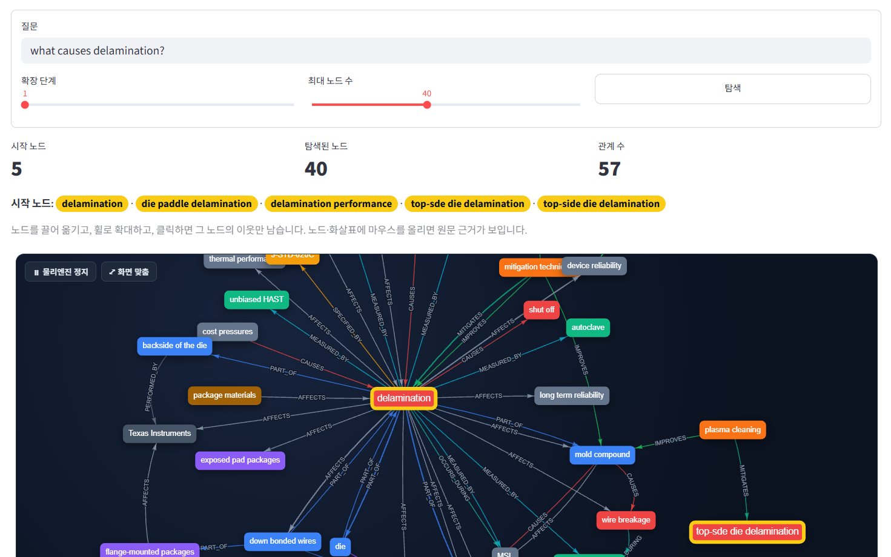
정리
제출 준비
플랫폼 가입 · 프로필 실명 · 8교시에 결과 페이지 제출
목표는 완료 조건까지
입력 · 결과물 · 판단 · 완료와 중단 · 실행 범위
작게 시작해 단계마다 확인
핵심 기능 하나 · Tool 1~2개 · 단계별 요청 후 화면 확인
근거가 보이는 결과물
Tool 호출과 반환값 · 근거 페이지 · 탐색 경로를 화면에
보안
공개 문서와 가상 데이터 · 이어지는 대화에서도 입력 내용 확인
8교시 · 캡스톤 2
완성과 제출 · 실제 실행 결과를 정리해 제출
캡스톤 2
완성과 제출
만든 앱의 실제 실행 화면과 결과를 HTML 발표 페이지 하나로 정리해 제출합니다
오늘의 목표
발표 페이지
실제 실행 화면과 결과 중심의 HTML 한 장
제출
제출 플랫폼에 올리고 미리보기 확인
하나의 Agent 구조
1 ~ 7교시 개념을 판단 · 행동 흐름으로 연결
업무 적용
입력 자료 · 기준 · 권한 · 검토 담당자
과정 전체 흐름
실행 결과로 발표 페이지 만들기
실제 실행 화면과 결과를 HTML 파일 하나로
만들 결과물
실제 실행 결과로 발표 페이지 만들기
파일 하나를 열어 3 ~ 5분 동안 프로젝트를 설명할 수 있는 HTML 발표 페이지
- 요청문을 그대로 입력
- 3단계 확인에 답하기 · 성명 · 목차 · 화면
- 앱 실행 · 화면 캡처 또는 실행 결과 확보
- HTML 작성 · 이미지 base64 내장
- 브라우저에서 열어 최종 확인
요청문 받기
제출 및 발표용 캡스톤 HTML을 만들어줘.
파일명:
`report_{작성자 성명}.html`
이 HTML은 상세 보고서가 아니다.
**완성한 프로젝트를 약 3~5분 동안 소개하기 위한 단일 HTML 발표 페이지**다.
프로젝트의 모든 내용을 기록하려 하지 말고,
발표자가 말로 설명할 수 있는 내용은 화면에 길게 적지 않는다.
실제 실행 화면과 결과를 중심으로 다음 내용을 빠르게 보여준다.
- 프로젝트 개요
- 프로젝트 목표
- 실제 실행 결과
- 주요 입력과 출력
- 시스템 구성과 처리 흐름
- 주요 AI 기술과 설계
- 실제로 구현하고 확인한 결과
- 결론
────────────────────
[작업 시작 전 반드시 3단계 확인]
────────────────────
바로 작업을 시작하지 않는다.
반드시 다음 순서로 사용자와 먼저 확인한다.
1. 작성자 성명
2. 발표 목차
3. 촬영할 스크린샷 또는 실행 결과 목록
각 단계에서 사용자의 답변을 받은 뒤 다음 단계로 넘어간다.
3단계 확인이 끝나기 전에는:
- 앱 실행
- 스크린샷 촬영
- HTML 작성
- base64 변환
을 시작하지 않는다.
────────────────────
[STEP 1. 작성자 성명]
────────────────────
가장 먼저 사용자에게 질문한다.
**"제출용 발표 페이지에 표시할 작성자 성명을 입력해주세요."**
성명을 입력받기 전에는
프로젝트 파일 탐색이나 분석도 시작하지 않는다.
입력받은 성명은:
- 발표 페이지 작성자
- 결과 파일명
에 사용한다.
파일명:
`report_{작성자 성명}.html`
────────────────────
[STEP 2. 프로젝트 확인 및 발표 목차 제안]
────────────────────
작성자 성명을 받은 뒤
현재 프로젝트를 빠르게 확인한다.
전체 프로젝트를 정밀 분석하지 않는다.
다음 정도만 파악한다.
- 무엇을 만든 프로젝트인가
- 주요 기능은 무엇인가
- 웹 / 터미널 / 혼합형 중 어떤 형태인가
- 주요 입력과 결과는 무엇인가
- 어떤 AI 기술을 사용했는가
- 발표에서 보여주면 좋은 특징은 무엇인가
그 뒤 이 프로젝트에 적합한
**4~6개 정도의 짧은 발표 목차**를 제안한다.
섹션 제목은 질문형이나 대화체보다
**짧고 전문적인 명사형 표현**을 사용한다.
권장 표현:
- 프로젝트 개요
- 프로젝트 목표
- 실행 화면
- 실행 결과
- 주요 기능
- 시스템 구성
- 처리 흐름
- 기술 구성
- 설계 방식
- 주요 결과
- 진행 방식
- 구현 결과
- 결론
다음과 같은 제목은 가급적 사용하지 않는다.
- 왜 이 프로젝트를 만들었는가
- 이것을 만들었습니다
- 이렇게 동작합니다
- 내부는 이렇게 만들었습니다
- 여기까지 해봤습니다
- 만들면서 확인한 점
- 어떻게 진행했는가
이러한 내용이 필요하다면
더 간결한 제목으로 바꾼다.
예:
`왜 이 프로젝트를 만들었는가`
→ `프로젝트 목표`
`어떻게 진행했는가`
→ `진행 방식`
`내부는 이렇게 만들었습니다`
→ `시스템 구성`
`만들면서 확인한 점`
→ `주요 결과` 또는 `구현 결과`
프로젝트에 따라 다음과 같은 흐름을 사용할 수 있다.
1. 프로젝트 개요
2. 프로젝트 목표
3. 실행 결과
4. 시스템 구성
5. 주요 결과
6. 결론
하지만 모든 프로젝트에서 같은 목차를 사용하지 않는다.
예를 들어 실제 화면 자체가 중요한 프로젝트라면:
1. 프로젝트 개요
2. 실행 화면
3. 주요 기능
4. 시스템 구성
5. 주요 결과
6. 결론
처럼 구성할 수 있다.
목차를 제안한 뒤 반드시 사용자에게 묻는다.
**"이 목차로 발표 페이지를 구성하려고 합니다. 이대로 진행해도 될까요? 추가하거나 빼고 싶은 항목이 있으면 말씀해주세요."**
사용자가 수정하면
그 내용을 이후 작업의 기준으로 사용한다.
────────────────────
[STEP 3. 촬영할 화면 또는 실행 결과 제안]
────────────────────
목차가 확정되면
각 발표 구간에서 어떤 실제 화면을 보여줄지 계획한다.
웹 프로젝트라면
촬영할 스크린샷 목록을 사용자에게 먼저 보여준다.
예:
1. 메인 화면
- 프로젝트 전체 모습을 보여주는 대표 화면
2. 입력 또는 질문 화면
- 사용 방법을 보여주는 장면
3. Agent / Tool 실행 화면
- 처리 과정을 보여주는 장면
4. 최종 결과 화면
- 실제 출력 결과를 보여주는 장면
5. 상세 결과 또는 근거 화면
- 프로젝트의 핵심 특징을 보여주는 장면
스크린샷 수는 고정하지 않는다.
2장으로 충분할 수도 있고
4~6장이 필요할 수도 있다.
각 화면은 반드시
**서로 다른 특징이나 결과를 보여줘야 한다.**
비슷한 화면을 반복해서 촬영하지 않는다.
목록을 보여준 뒤 반드시 사용자에게 묻는다.
**"위 화면들을 촬영해 발표 페이지에 넣으려고 합니다. 추가하거나 빼고 싶은 화면이 있습니까?"**
사용자의 확인 또는 수정 의견을 받은 뒤 실제 작업을 시작한다.
터미널 중심 프로젝트라면
스크린샷 대신 보여줄 실행 결과를 같은 방식으로 제안한다.
예:
- 실행 명령과 입력
- Agent / Tool 실행 과정
- 핵심 처리 로그
- 최종 출력
- 생성된 파일 또는 데이터
────────────────────
[이후부터 실제 제작 시작]
────────────────────
STEP 1~3이 끝나면
확정된 목차와 화면 계획을 기준으로 작업한다.
이후에는 사소한 사항으로 계속 질문하지 말고
현재 프로젝트를 기준으로 끝까지 완성한다.
────────────────────
[작업 원칙]
────────────────────
이 작업의 목적은 새로운 기능을 만드는 것이 아니다.
이미 완성된 프로젝트를
**발표에서 가장 잘 보여줄 수 있는 형태로 정리하는 것**이다.
하지 말아야 할 것:
- 프로젝트 전체 코드 정밀 분석
- 디렉터리 전체 탐색
- 새로운 기능 개발
- 발표 페이지를 위해 기존 앱 수정
- 지나치게 많은 설명 작성
- 모든 기술과 기능을 빠짐없이 기록
- 비슷한 스크린샷 반복 촬영
- 사소한 디자인 수정 반복
- 외부 라이브러리 추가
- 확인하지 않은 결과나 수치 생성
발표 페이지의 목표는
**완전한 문서화가 아니라 전달력**이다.
────────────────────
[웹 프로젝트 — 실제 화면 캡처]
────────────────────
웹 화면이 있는 프로젝트라면
STEP 3에서 합의한 실제 화면을 촬영한다.
이 수업에서는 프로젝트를 별도로 배포하지 않으므로
**스크린샷이 결과물을 보여주는 핵심 발표 자료**다.
따라서 텍스트보다 실제 화면을 우선한다.
### 앱 실행
앱이 이미 실행 중이면 현재 주소를 사용한다.
실행 중이 아니라면
기존 프로젝트의 일반적인 방법으로 실행한다.
실행 직후 바로 캡처하지 않는다.
웹 서버와 프론트엔드가 완전히 준비될 시간을 충분히 준다.
가능하면 다음 중 하나로 준비 상태를 확인한다.
- `curl`
- PowerShell HTTP 요청
- 서버 로그의 `ready`, `listening` 확인
- URL 정상 응답 확인
개발 서버가 뜨는 데 시간이 걸릴 수 있으므로
**필요하면 수십 초까지 기다린다.**
첫 번째 캡처가:
- 빈 화면
- 로딩 중
- 데이터가 아직 표시되지 않은 상태
라면 즉시 포기하지 않는다.
앱이 실제로 준비됐는지 다시 확인하고
잠시 기다린 뒤 캡처를 다시 수행한다.
특히 **첫 번째 대표 스크린샷은 정상 화면을 확보하는 것을 우선한다.**
### Edge headless 사용
웹 화면 캡처는 **Edge headless를 우선 사용한다.**
예:
```text
msedge --headless --disable-gpu --screenshot=captures\main.png --window-size=1440,900 "http://localhost:PORT"
```
`msedge`를 찾지 못하면
설치된 Edge 실행 파일 경로를 확인해 사용할 수 있다.
Edge 사용이 어려운 경우에만
Chrome headless를 대안으로 사용한다.
### 다양한 장면 확보
대표 화면 하나만 찍고 끝내지 않는다.
STEP 3에서 합의한 화면을 중심으로:
- 초기 화면
- 입력 화면
- 실행 중 화면
- Agent / Tool 동작
- 검색 결과
- Graph 탐색
- 최종 결과
- 전후 비교
- 상세 근거
등 서로 다른 장면을 확보한다.
각 화면은 발표에서
**하나의 메시지를 명확하게 보여주는 용도**로 사용한다.
────────────────────
[터미널 중심 프로젝트]
────────────────────
CLI, Python Script, Agent 실행 등
터미널 중심 프로젝트라면 웹 화면을 억지로 만들지 않는다.
STEP 3에서 합의한 실제 실행 결과를 사용한다.
예:
- 실행 명령
- 사용자 입력
- Agent 상태
- Tool 호출
- 검색 과정
- 처리 결과
- 최종 출력
전체 로그를 복사하지 않는다.
발표에 필요한 핵심 부분만 골라
읽기 좋은 Terminal 영역으로 표현한다.
실제 결과에는:
**"실제 실행 결과"**
라고 표시한다.
API Key, Token, 개인정보, 내부 경로 등
민감정보는 제거하거나 마스킹한다.
실제 실행 결과를 확보하지 못했다면
가짜 로그를 만들지 않는다.
────────────────────
[발표 페이지의 정보 구성]
────────────────────
STEP 2에서 합의한 목차를 기준으로 작성한다.
발표 페이지는 상세 보고서가 아니다.
다음 원칙을 지킨다.
- 한 구간에는 하나의 핵심 메시지를 둔다.
- 실제 화면과 결과를 크게 보여준다.
- 긴 문단을 작성하지 않는다.
- 설명은 가능하면 2~4문장 이내로 한다.
- 발표자가 말할 내용을 화면에 모두 적지 않는다.
- 전체 로그를 싣지 않는다.
- 전체 Tool 목록을 나열하지 않는다.
- 기술 목록은 핵심적인 것만 보여준다.
- 표는 꼭 필요한 경우에만 사용한다.
- 전체 데이터를 보여주는 표보다 핵심 결과를 우선한다.
**스크린샷과 실제 결과가 본문이고,
텍스트는 이를 설명하는 보조 요소다.**
────────────────────
[권장 내용]
────────────────────
### 프로젝트 개요
첫 화면에서 프로젝트가 무엇인지 바로 이해할 수 있게 한다.
포함할 수 있는 내용:
- 프로젝트 제목
- 작성자
- 한 줄 소개
- 핵심 기술
- 대표 실행 화면 또는 대표 결과
텍스트를 많이 넣지 않는다.
### 프로젝트 목표
별도 설명이 필요한 경우에만 둔다.
다음 정도면 충분하다.
- 무엇을 구현해보고자 했는가
- 수업에서 배운 어떤 기술을 적용했는가
- 어떤 기능을 직접 시험해보고자 했는가
업무 성과나 ROI를 억지로 작성하지 않는다.
### 실행 결과
발표에서 가장 중요한 영역 중 하나다.
가능하면 실제 화면의 순서만 보아도:
**입력 → 실행 → 결과**
를 이해할 수 있게 한다.
각 스크린샷의 설명은 1~2줄 정도면 충분하다.
### 시스템 구성
전체 코드 구조를 설명하지 않는다.
핵심 흐름만 보여준다.
예:
`사용자 입력 → LLM → Tool → 결과`
`질문 → Orchestrator → Agent A / Agent B → 종합`
`문서 → 검색 → Graph 탐색 → 답변`
`CSV → 전처리 → 분석 Tool → Agent → 시각화`
그리고 중요한 설계 판단 1~2개만 설명한다.
### 주요 결과
프로젝트에서 가장 기억에 남는
실제 결과 1~2개를 보여준다.
예:
- Tool 선택 사례
- Agent 역할 분리 결과
- 정상 / 실패 흐름 비교
- 보정 전 / 후 비교
- 특정 영역 분석 결과
- 검색 근거와 답변 연결
- 생성 파일
모든 기능을 나열하지 않는다.
### 결론
마지막 주요 영역은 반드시 **결론**으로 끝낸다.
약 2~4문장 정도로:
- 무엇을 구현했는가
- 어디까지 실제 동작했는가
- 구현 과정에서 무엇을 확인했는가
- 더 발전시킨다면 무엇을 해볼 수 있는가
를 정리한다.
마지막 화면을 보았을 때
발표가 끝났다는 느낌이 명확해야 한다.
────────────────────
[레이아웃 — 매우 중요]
────────────────────
이 HTML은 전체 브라우저 화면이 아니라
**좌우에 별도 UI가 있는 전시관/확인 사이트 내부의 좁은 영역에서 표시될 수 있다.**
따라서 데스크톱 화면이라고 해서
넓은 전체 브라우저 폭을 사용할 수 있다고 가정하지 않는다.
### 기본은 세로 1단 구성
**주요 콘텐츠에서 좌우 2단·3단 레이아웃 사용을 지양한다.**
특히 다음과 같은 구성은 기본적으로 사용하지 않는다.
- 카드 2개를 좌우로 배치
- 카드 3개를 한 줄로 배치
- 설명 왼쪽 + 스크린샷 오른쪽
- 여러 스크린샷을 갤러리처럼 나란히 배치
- 3~5개의 기술 카드를 가로로 배열
대신:
**제목
→ 짧은 설명
→ 큰 실제 화면
→ 핵심 포인트**
형태로 위에서 아래로 배치한다.
### 스크린샷
스크린샷은 가급적 한 줄에 한 장씩 사용한다.
```text
[스크린샷 1]
설명 1~2줄
[스크린샷 2]
설명 1~2줄
```
여러 화면을 작게 줄여 한 줄에 넣지 않는다.
실제 화면이 충분히 크게 보여야 한다.
### 카드
카드를 사용할 수는 있지만
주요 카드가 가로로 여러 개 나열되지 않게 한다.
기본적으로:
`한 줄 = 한 콘텐츠 블록`
형태를 사용한다.
작은 상태 배지나 기술 태그 정도만
가로로 여러 개 둘 수 있다.
### 처리 흐름
가로로 너무 긴 Flow Chart를 만들지 않는다.
노드가 많으면:
`사용자 입력`
↓
`Orchestrator`
↓
`Agent / Tool`
↓
`최종 결과`
처럼 세로형으로 표현하거나
좁은 화면에서도 자연스럽게 줄바꿈되도록 한다.
### 표
열이 많은 표는 피한다.
발표에서 정말 필요한 정보만 남긴다.
가능하면 3~4열 이내로 구성하고,
열이 많아진다면 표 대신 세로 목록이나
핵심 결과 블록으로 바꾼다.
### 페이지 폭
본문 최대 폭은 지나치게 넓게 잡지 않는다.
전시관 내부에서도 자연스럽게 보이도록
약 `900~1050px` 정도를 기본 콘텐츠 폭으로 고려한다.
`width: 100%`와 적절한 padding을 사용해
더 좁은 영역에서도 깨지지 않게 한다.
최소한 `900px 전후`의 실제 표시 폭에서도
다음이 깨지지 않아야 한다.
- 제목
- 스크린샷
- 처리 흐름
- 표
- 기술 태그
- 결론
────────────────────
[실제 결과를 우선]
────────────────────
실제 화면, 실제 로그, 실제 데이터가 있다면
설명용 mock-up보다 그것을 우선한다.
실제 결과만으로 충분하면
mock-up을 만들지 않는다.
실제 화면만으로 동작 원리를 설명하기 어려운 경우에만
HTML/CSS/JS로 간단한 설명용 재현을 만들 수 있다.
그 경우 반드시:
**"동작 설명용 재현"**
이라고 표시한다.
────────────────────
[이미지는 반드시 HTML 내부에 포함]
────────────────────
최종 제출물은 HTML 파일 하나만 올릴 수 있다.
따라서 이미지 파일을 HTML과 별도로 제출하지 않는다.
**사용한 모든 스크린샷은 base64로 인코딩하여
최종 HTML 내부에 포함한다.**
HTML 작성 중에는:
```text
<!--IMG:captures/main.png-->
```
형태의 placeholder를 사용할 수 있다.
실제로 존재하는 이미지 파일만 사용한다.
────────────────────
[base64 및 반복 작업은 Python 사용]
────────────────────
base64 문자열을 직접 생성하거나
직접 HTML에 붙여넣지 않는다.
이런 반복적이고 시간이 걸리는 작업은
**짧은 Python 스크립트를 작성해 실행한다.**
Python이 다음 작업을 수행한다.
1. HTML의 `<!--IMG:파일경로-->` 검색
2. 이미지 파일 존재 여부 확인
3. 이미지 읽기
4. MIME Type 확인
5. base64 인코딩
6. `<img src="data:image/...;base64,...">` 형태로 치환
7. 최종 HTML 저장
출력은 간단하게 한다.
예:
```text
Images embedded: 5
Missing images: 0
```
base64 문자열 자체는 Terminal에 출력하지 않는다.
────────────────────
[디자인]
────────────────────
모든 결과물이 같은 템플릿처럼 보이지 않게 한다.
프로젝트 자체에 뚜렷한 UI나 분위기가 있다면
이를 발표 페이지에 활용해도 좋다.
하지만 프로젝트마다:
- 동일한 카드 세트
- 동일한 3단 구성
- 동일한 대시보드 레이아웃
을 반복하지 않는다.
특히 이 발표 페이지에서는
**레이아웃 다양성보다 실제 결과물의 차이가 디자인 차이로 드러나게 한다.**
가장 중요한 것은:
- 실제 화면이 크게 보이는 것
- 전시관의 좁은 영역에서도 깨지지 않는 것
- 발표자가 빠르게 설명할 수 있는 것
이다.
────────────────────
[구현 조건]
────────────────────
최종 결과는 반드시:
`report_{작성자 성명}.html`
하나의 파일이다.
다음 조건을 지킨다.
- HTML / CSS / JS 한 파일
- 외부 라이브러리 사용 금지
- CDN 사용 금지
- 웹폰트 사용 금지
- HTML을 열 때 인터넷 요청 금지
- 모든 이미지 base64 내장
- 기존 앱 화면을 SVG로 다시 그리지 않기
- 복잡한 애니메이션 금지
- 주요 콘텐츠는 세로 1단 구성 우선
- 좁은 표시 영역에서도 레이아웃이 깨지지 않게 작성
────────────────────
[최종 확인]
────────────────────
완성 후 다음만 확인한다.
1. `report_{작성자 성명}.html`이 존재하는가
2. 사용자와 합의한 목차가 반영되었는가
3. 섹션 제목이 간결한 명사형으로 작성되었는가
4. 사용자와 합의한 주요 스크린샷이 포함되었는가
5. 첫 번째 대표 화면이 정상적으로 캡처되었는가
6. 빈 화면이나 로딩 화면이 포함되지 않았는가
7. `<!--IMG:` placeholder가 남아 있지 않은가
8. 모든 이미지가 base64로 HTML 내부에 들어갔는가
9. 인터넷 연결 없이 HTML 하나만 열어도 정상적으로 보이는가
10. 주요 콘텐츠에 불필요한 2단·3단 구성이 없는가
11. 좁은 전시관 영역에서도 화면이 깨지지 않는가
12. 스크린샷이 충분히 크게 보이는가
13. 텍스트가 지나치게 많지 않은가
14. 실제 화면이 설명문보다 더 눈에 띄는가
15. 마지막이 결론으로 끝나는가
16. 확인하지 않은 내용을 사실처럼 작성하지 않았는가
문제가 없다면 종료한다.
사소한 디자인 수정이나
내용 추가를 반복하지 않는다.
────────────────────
[완성 기준]
────────────────────
이 HTML은 상세 보고서가 아니라
**캡스톤 프로젝트 발표 페이지**다.
작성자가 HTML 하나를 열고
약 3~5분 동안 위에서 아래로 보여주면서
**프로젝트 개요
→ 프로젝트 목표
→ 실행 결과
→ 시스템 구성
→ 주요 결과
→ 결론**
과 같은 흐름으로 자연스럽게 발표할 수 있으면 충분하다.
프로젝트 성격에 따라 일부 항목을 합치거나 생략할 수 있다.
청중이 긴 문장을 읽느라
실제 결과물을 놓치지 않게 한다.
**텍스트보다 실제 실행 장면과 결과를 우선하고,
좁은 전시관 화면에서도 깨지지 않는 세로형 구성을 우선한다.**
이 조건을 만족하면
추가 내용을 넣지 말고 작업을 종료한다.요청문의 구성
- STEP 1 작성자 성명
- STEP 2 발표 목차
- STEP 3 촬영할 화면
- 작업 원칙
- 웹: 앱 실행 · 화면 캡처
- 터미널: 실행 결과
- 정보 구성 · 권장 내용
- 레이아웃 · 좁은 영역
- 실제 결과 우선 · 디자인
- 이미지 base64 내장
- 구현 조건
- 최종 확인 · 완성 기준
작업 전 3단계 확인
- 성명을 받기 전: 파일 탐색 · 분석도 시작하지 않음
- 성명의 쓰임: 작성자 · 결과 파일명
report_{작성자 성명}.html
STEP 2 · 프로젝트를 빠르게 확인
파악할 것
- 무엇을 만든 프로젝트인가
- 주요 기능
- 웹 · 터미널 · 혼합형 중 어떤 형태
- 주요 입력과 결과
- 사용한 AI 기술
- 발표에서 보여 주면 좋은 특징
하지 않을 것
- 전체 프로젝트 정밀 분석
목차 제목은 짧은 명사형
| 피할 제목 | 바꾼 제목 |
|---|---|
| 왜 이 프로젝트를 만들었는가 | 프로젝트 목표 |
| 어떻게 진행했는가 | 진행 방식 |
| 내부는 이렇게 만들었습니다 | 시스템 구성 |
| 만들면서 확인한 점 | 주요 결과 · 구현 결과 |
목차는 프로젝트마다 다르게
기본 흐름
- 1 프로젝트 개요
- 2 프로젝트 목표
- 3 실행 결과
- 4 시스템 구성
- 5 주요 결과
- 6 결론
실제 화면이 중요한 프로젝트
- 1 프로젝트 개요
- 2 실행 화면
- 3 주요 기능
- 4 시스템 구성
- 5 주요 결과
- 6 결론
STEP 3 · 보여 줄 화면 계획
웹 프로젝트 · 스크린샷 목록
- 메인 화면 · 프로젝트 전체 모습
- 입력 또는 질문 화면 · 사용 방법
- Agent / Tool 실행 화면 · 처리 과정
- 최종 결과 화면 · 실제 출력
- 상세 결과 또는 근거 화면 · 핵심 특징
터미널 중심 프로젝트 · 실행 결과 목록
- 실행 명령과 입력
- Agent / Tool 실행 과정
- 핵심 처리 로그
- 최종 출력
- 생성된 파일 또는 데이터
작업 원칙
완성한 프로젝트를 발표에서 가장 잘 보이게 정리
웹 프로젝트 · 앱 실행과 준비 확인
Edge headless로 캡처
msedge --headless --disable-gpu --screenshot=captures\main.png --window-size=1440,900 "http://localhost:PORT"- 웹 화면 캡처는 Edge headless 우선
msedge를 찾지 못하면 설치된 Edge 실행 파일 경로 확인- Edge가 어려울 때만 Chrome headless
터미널 중심 프로젝트
- 웹 화면을 억지로 만들지 않음 · STEP 3에서 합의한 실행 결과 사용
- 전체 로그 복사 X · 핵심만 골라 읽기 좋은 Terminal 영역으로
- 실제 결과에는 「실제 실행 결과」 표시
- API Key · Token · 개인정보 · 내부 경로는 제거 · 마스킹
발표 페이지의 정보 구성
텍스트는 설명하는 보조 요소
프로젝트 개요 · 프로젝트 목표
프로젝트 개요
- 프로젝트 제목
- 작성자
- 한 줄 소개
- 핵심 기술
- 대표 실행 화면 또는 대표 결과
프로젝트 목표
- 무엇을 구현해 보고자 했는가
- 수업에서 배운 어떤 기술을 적용했는가
- 어떤 기능을 직접 시험해 보고자 했는가
실행 결과 · 시스템 구성
실행 결과 · 가장 중요한 영역
- 화면 순서만 보아도 흐름이 이해되게
- 스크린샷 설명은 1 ~ 2줄
시스템 구성 · 핵심 흐름만
주요 결과 · 결론
주요 결과
결론 · 마지막 주요 영역
- 무엇을 구현했는가
- 어디까지 실제 동작했는가
- 구현 과정에서 무엇을 확인했는가
- 더 발전시킨다면 무엇을 해 볼 수 있는가
좁은 전시관 영역 기준
필터
작품 정보
평가
메뉴
- 발표 페이지는 좌우에 별도 UI가 있는 좁은 영역에 표시될 수 있음
- 데스크톱이라도 넓은 전체 폭을 가정하지 않음
- 본문 폭 약 900 ~ 1050px
width: 100%+ 적절한 padding
기본은 세로 1단
부분별 레이아웃 규칙
| 대상 | 규칙 |
|---|---|
| 스크린샷 | 한 줄에 한 장 · 설명 1 ~ 2줄 · 여러 화면을 작게 줄여 한 줄에 넣지 않음 |
| 카드 | 한 줄 = 한 콘텐츠 블록 · 작은 상태 배지 · 기술 태그만 가로로 |
| 처리 흐름 | 가로로 긴 Flow Chart X · 노드가 많으면 세로형 또는 자연스러운 줄바꿈 |
| 표 | 3 ~ 4열 이내 · 열이 많으면 세로 목록이나 핵심 결과 블록으로 |
| 페이지 폭 | 900px 전후에서도 제목 · 스크린샷 · 처리 흐름 · 표 · 기술 태그 · 결론이 깨지지 않게 |
실제 결과 우선
실제 실행 결과
- 실제 화면 · 실제 로그 · 실제 데이터
- 있다면 설명용 mock-up보다 우선
- 실제 결과만으로 충분하면 mock-up을 만들지 않음
동작 설명용 재현
- 실제 화면만으로 동작 원리를 설명하기 어려울 때만
- HTML / CSS / JS로 간단하게
- 반드시 「동작 설명용 재현」 표시
이미지는 HTML 안에 base64로
captures/main.png<!--IMG:captures/main.png-->data:image/...;base64,...<!--IMG:파일경로--> 검색<img src="data:image/...;base64,...">로 치환- 최종 제출물은 HTML 파일 하나 · 이미지 파일 별도 제출 X
- 작성 중에는
<!--IMG:파일경로-->placeholder - base64 문자열을 직접 만들거나 붙여 넣지 않음 → 짧은 Python 스크립트
Images embedded: 5
Missing images: 0디자인 · 구현 조건
- 같은 템플릿처럼 보이지 않게
- 프로젝트 고유의 UI · 분위기 활용 가능
- 동일한 카드 세트 · 3단 구성 · 대시보드 레이아웃 반복 X
- 실제 결과물의 차이가 디자인 차이로
report_{작성자 성명}.html 하나최종 확인 16가지
report_{작성자 성명}.html 존재<!--IMG: placeholder 없음완성 기준
좁은 전시관 화면에서도 깨지지 않는 세로형 구성
요청문 전문 1 / 10
제출 및 발표용 캡스톤 HTML을 만들어줘.
파일명:
`report_{작성자 성명}.html`
이 HTML은 상세 보고서가 아니다.
**완성한 프로젝트를 약 3~5분 동안 소개하기 위한 단일 HTML 발표 페이지**다.
프로젝트의 모든 내용을 기록하려 하지 말고,
발표자가 말로 설명할 수 있는 내용은 화면에 길게 적지 않는다.
실제 실행 화면과 결과를 중심으로 다음 내용을 빠르게 보여준다.
- 프로젝트 개요
- 프로젝트 목표
- 실제 실행 결과
- 주요 입력과 출력
- 시스템 구성과 처리 흐름
- 주요 AI 기술과 설계
- 실제로 구현하고 확인한 결과
- 결론
────────────────────
[작업 시작 전 반드시 3단계 확인]
────────────────────
바로 작업을 시작하지 않는다.
반드시 다음 순서로 사용자와 먼저 확인한다.
1. 작성자 성명
2. 발표 목차
3. 촬영할 스크린샷 또는 실행 결과 목록
각 단계에서 사용자의 답변을 받은 뒤 다음 단계로 넘어간다.
3단계 확인이 끝나기 전에는:
- 앱 실행
- 스크린샷 촬영
- HTML 작성
- base64 변환
을 시작하지 않는다.
────────────────────
[STEP 1. 작성자 성명]
────────────────────
가장 먼저 사용자에게 질문한다.
**"제출용 발표 페이지에 표시할 작성자 성명을 입력해주세요."**
성명을 입력받기 전에는
프로젝트 파일 탐색이나 분석도 시작하지 않는다.
입력받은 성명은:
- 발표 페이지 작성자
- 결과 파일명
에 사용한다.
파일명:
`report_{작성자 성명}.html`
────────────────────
[STEP 2. 프로젝트 확인 및 발표 목차 제안]
────────────────────
작성자 성명을 받은 뒤
현재 프로젝트를 빠르게 확인한다.
전체 프로젝트를 정밀 분석하지 않는다.
다음 정도만 파악한다.요청문 전문 2 / 10
- 무엇을 만든 프로젝트인가
- 주요 기능은 무엇인가
- 웹 / 터미널 / 혼합형 중 어떤 형태인가
- 주요 입력과 결과는 무엇인가
- 어떤 AI 기술을 사용했는가
- 발표에서 보여주면 좋은 특징은 무엇인가
그 뒤 이 프로젝트에 적합한
**4~6개 정도의 짧은 발표 목차**를 제안한다.
섹션 제목은 질문형이나 대화체보다
**짧고 전문적인 명사형 표현**을 사용한다.
권장 표현:
- 프로젝트 개요
- 프로젝트 목표
- 실행 화면
- 실행 결과
- 주요 기능
- 시스템 구성
- 처리 흐름
- 기술 구성
- 설계 방식
- 주요 결과
- 진행 방식
- 구현 결과
- 결론
다음과 같은 제목은 가급적 사용하지 않는다.
- 왜 이 프로젝트를 만들었는가
- 이것을 만들었습니다
- 이렇게 동작합니다
- 내부는 이렇게 만들었습니다
- 여기까지 해봤습니다
- 만들면서 확인한 점
- 어떻게 진행했는가
이러한 내용이 필요하다면
더 간결한 제목으로 바꾼다.
예:
`왜 이 프로젝트를 만들었는가`
→ `프로젝트 목표`
`어떻게 진행했는가`
→ `진행 방식`
`내부는 이렇게 만들었습니다`
→ `시스템 구성`
`만들면서 확인한 점`
→ `주요 결과` 또는 `구현 결과`
프로젝트에 따라 다음과 같은 흐름을 사용할 수 있다.
1. 프로젝트 개요
2. 프로젝트 목표
3. 실행 결과
4. 시스템 구성
5. 주요 결과
6. 결론
하지만 모든 프로젝트에서 같은 목차를 사용하지 않는다.
예를 들어 실제 화면 자체가 중요한 프로젝트라면:
1. 프로젝트 개요
2. 실행 화면
3. 주요 기능
4. 시스템 구성
5. 주요 결과
6. 결론
처럼 구성할 수 있다.
목차를 제안한 뒤 반드시 사용자에게 묻는다.
**"이 목차로 발표 페이지를 구성하려고 합니다. 이대로 진행해도 될까요? 추가하거나 빼고 싶은 항목이 있으면 말씀해주세요."**요청문 전문 3 / 10
사용자가 수정하면
그 내용을 이후 작업의 기준으로 사용한다.
────────────────────
[STEP 3. 촬영할 화면 또는 실행 결과 제안]
────────────────────
목차가 확정되면
각 발표 구간에서 어떤 실제 화면을 보여줄지 계획한다.
웹 프로젝트라면
촬영할 스크린샷 목록을 사용자에게 먼저 보여준다.
예:
1. 메인 화면
- 프로젝트 전체 모습을 보여주는 대표 화면
2. 입력 또는 질문 화면
- 사용 방법을 보여주는 장면
3. Agent / Tool 실행 화면
- 처리 과정을 보여주는 장면
4. 최종 결과 화면
- 실제 출력 결과를 보여주는 장면
5. 상세 결과 또는 근거 화면
- 프로젝트의 핵심 특징을 보여주는 장면
스크린샷 수는 고정하지 않는다.
2장으로 충분할 수도 있고
4~6장이 필요할 수도 있다.
각 화면은 반드시
**서로 다른 특징이나 결과를 보여줘야 한다.**
비슷한 화면을 반복해서 촬영하지 않는다.
목록을 보여준 뒤 반드시 사용자에게 묻는다.
**"위 화면들을 촬영해 발표 페이지에 넣으려고 합니다. 추가하거나 빼고 싶은 화면이 있습니까?"**
사용자의 확인 또는 수정 의견을 받은 뒤 실제 작업을 시작한다.
터미널 중심 프로젝트라면
스크린샷 대신 보여줄 실행 결과를 같은 방식으로 제안한다.
예:
- 실행 명령과 입력
- Agent / Tool 실행 과정
- 핵심 처리 로그
- 최종 출력
- 생성된 파일 또는 데이터
────────────────────
[이후부터 실제 제작 시작]
────────────────────
STEP 1~3이 끝나면
확정된 목차와 화면 계획을 기준으로 작업한다.
이후에는 사소한 사항으로 계속 질문하지 말고
현재 프로젝트를 기준으로 끝까지 완성한다.
────────────────────
[작업 원칙]
────────────────────
이 작업의 목적은 새로운 기능을 만드는 것이 아니다.
이미 완성된 프로젝트를
**발표에서 가장 잘 보여줄 수 있는 형태로 정리하는 것**이다.
하지 말아야 할 것:요청문 전문 4 / 10
- 프로젝트 전체 코드 정밀 분석
- 디렉터리 전체 탐색
- 새로운 기능 개발
- 발표 페이지를 위해 기존 앱 수정
- 지나치게 많은 설명 작성
- 모든 기술과 기능을 빠짐없이 기록
- 비슷한 스크린샷 반복 촬영
- 사소한 디자인 수정 반복
- 외부 라이브러리 추가
- 확인하지 않은 결과나 수치 생성
발표 페이지의 목표는
**완전한 문서화가 아니라 전달력**이다.
────────────────────
[웹 프로젝트 — 실제 화면 캡처]
────────────────────
웹 화면이 있는 프로젝트라면
STEP 3에서 합의한 실제 화면을 촬영한다.
이 수업에서는 프로젝트를 별도로 배포하지 않으므로
**스크린샷이 결과물을 보여주는 핵심 발표 자료**다.
따라서 텍스트보다 실제 화면을 우선한다.
### 앱 실행
앱이 이미 실행 중이면 현재 주소를 사용한다.
실행 중이 아니라면
기존 프로젝트의 일반적인 방법으로 실행한다.
실행 직후 바로 캡처하지 않는다.
웹 서버와 프론트엔드가 완전히 준비될 시간을 충분히 준다.
가능하면 다음 중 하나로 준비 상태를 확인한다.
- `curl`
- PowerShell HTTP 요청
- 서버 로그의 `ready`, `listening` 확인
- URL 정상 응답 확인
개발 서버가 뜨는 데 시간이 걸릴 수 있으므로
**필요하면 수십 초까지 기다린다.**
첫 번째 캡처가:
- 빈 화면
- 로딩 중
- 데이터가 아직 표시되지 않은 상태
라면 즉시 포기하지 않는다.
앱이 실제로 준비됐는지 다시 확인하고
잠시 기다린 뒤 캡처를 다시 수행한다.
특히 **첫 번째 대표 스크린샷은 정상 화면을 확보하는 것을 우선한다.**
### Edge headless 사용
웹 화면 캡처는 **Edge headless를 우선 사용한다.**
예:
```text
msedge --headless --disable-gpu --screenshot=captures\main.png --window-size=1440,900 "http://localhost:PORT"
```
`msedge`를 찾지 못하면
설치된 Edge 실행 파일 경로를 확인해 사용할 수 있다.
Edge 사용이 어려운 경우에만
Chrome headless를 대안으로 사용한다.요청문 전문 5 / 10
### 다양한 장면 확보
대표 화면 하나만 찍고 끝내지 않는다.
STEP 3에서 합의한 화면을 중심으로:
- 초기 화면
- 입력 화면
- 실행 중 화면
- Agent / Tool 동작
- 검색 결과
- Graph 탐색
- 최종 결과
- 전후 비교
- 상세 근거
등 서로 다른 장면을 확보한다.
각 화면은 발표에서
**하나의 메시지를 명확하게 보여주는 용도**로 사용한다.
────────────────────
[터미널 중심 프로젝트]
────────────────────
CLI, Python Script, Agent 실행 등
터미널 중심 프로젝트라면 웹 화면을 억지로 만들지 않는다.
STEP 3에서 합의한 실제 실행 결과를 사용한다.
예:
- 실행 명령
- 사용자 입력
- Agent 상태
- Tool 호출
- 검색 과정
- 처리 결과
- 최종 출력
전체 로그를 복사하지 않는다.
발표에 필요한 핵심 부분만 골라
읽기 좋은 Terminal 영역으로 표현한다.
실제 결과에는:
**"실제 실행 결과"**
라고 표시한다.
API Key, Token, 개인정보, 내부 경로 등
민감정보는 제거하거나 마스킹한다.
실제 실행 결과를 확보하지 못했다면
가짜 로그를 만들지 않는다.
────────────────────
[발표 페이지의 정보 구성]
────────────────────
STEP 2에서 합의한 목차를 기준으로 작성한다.
발표 페이지는 상세 보고서가 아니다.
다음 원칙을 지킨다.
- 한 구간에는 하나의 핵심 메시지를 둔다.
- 실제 화면과 결과를 크게 보여준다.
- 긴 문단을 작성하지 않는다.
- 설명은 가능하면 2~4문장 이내로 한다.
- 발표자가 말할 내용을 화면에 모두 적지 않는다.
- 전체 로그를 싣지 않는다.
- 전체 Tool 목록을 나열하지 않는다.
- 기술 목록은 핵심적인 것만 보여준다.
- 표는 꼭 필요한 경우에만 사용한다.
- 전체 데이터를 보여주는 표보다 핵심 결과를 우선한다.
**스크린샷과 실제 결과가 본문이고,
텍스트는 이를 설명하는 보조 요소다.**요청문 전문 6 / 10
────────────────────
[권장 내용]
────────────────────
### 프로젝트 개요
첫 화면에서 프로젝트가 무엇인지 바로 이해할 수 있게 한다.
포함할 수 있는 내용:
- 프로젝트 제목
- 작성자
- 한 줄 소개
- 핵심 기술
- 대표 실행 화면 또는 대표 결과
텍스트를 많이 넣지 않는다.
### 프로젝트 목표
별도 설명이 필요한 경우에만 둔다.
다음 정도면 충분하다.
- 무엇을 구현해보고자 했는가
- 수업에서 배운 어떤 기술을 적용했는가
- 어떤 기능을 직접 시험해보고자 했는가
업무 성과나 ROI를 억지로 작성하지 않는다.
### 실행 결과
발표에서 가장 중요한 영역 중 하나다.
가능하면 실제 화면의 순서만 보아도:
**입력 → 실행 → 결과**
를 이해할 수 있게 한다.
각 스크린샷의 설명은 1~2줄 정도면 충분하다.
### 시스템 구성
전체 코드 구조를 설명하지 않는다.
핵심 흐름만 보여준다.
예:
`사용자 입력 → LLM → Tool → 결과`
`질문 → Orchestrator → Agent A / Agent B → 종합`
`문서 → 검색 → Graph 탐색 → 답변`
`CSV → 전처리 → 분석 Tool → Agent → 시각화`
그리고 중요한 설계 판단 1~2개만 설명한다.
### 주요 결과
프로젝트에서 가장 기억에 남는
실제 결과 1~2개를 보여준다.
예:
- Tool 선택 사례
- Agent 역할 분리 결과
- 정상 / 실패 흐름 비교
- 보정 전 / 후 비교
- 특정 영역 분석 결과
- 검색 근거와 답변 연결
- 생성 파일
모든 기능을 나열하지 않는다.
### 결론
마지막 주요 영역은 반드시 **결론**으로 끝낸다.
약 2~4문장 정도로:요청문 전문 7 / 10
- 무엇을 구현했는가
- 어디까지 실제 동작했는가
- 구현 과정에서 무엇을 확인했는가
- 더 발전시킨다면 무엇을 해볼 수 있는가
를 정리한다.
마지막 화면을 보았을 때
발표가 끝났다는 느낌이 명확해야 한다.
────────────────────
[레이아웃 — 매우 중요]
────────────────────
이 HTML은 전체 브라우저 화면이 아니라
**좌우에 별도 UI가 있는 전시관/확인 사이트 내부의 좁은 영역에서 표시될 수 있다.**
따라서 데스크톱 화면이라고 해서
넓은 전체 브라우저 폭을 사용할 수 있다고 가정하지 않는다.
### 기본은 세로 1단 구성
**주요 콘텐츠에서 좌우 2단·3단 레이아웃 사용을 지양한다.**
특히 다음과 같은 구성은 기본적으로 사용하지 않는다.
- 카드 2개를 좌우로 배치
- 카드 3개를 한 줄로 배치
- 설명 왼쪽 + 스크린샷 오른쪽
- 여러 스크린샷을 갤러리처럼 나란히 배치
- 3~5개의 기술 카드를 가로로 배열
대신:
**제목
→ 짧은 설명
→ 큰 실제 화면
→ 핵심 포인트**
형태로 위에서 아래로 배치한다.
### 스크린샷
스크린샷은 가급적 한 줄에 한 장씩 사용한다.
```text
[스크린샷 1]
설명 1~2줄
[스크린샷 2]
설명 1~2줄
```
여러 화면을 작게 줄여 한 줄에 넣지 않는다.
실제 화면이 충분히 크게 보여야 한다.
### 카드
카드를 사용할 수는 있지만
주요 카드가 가로로 여러 개 나열되지 않게 한다.
기본적으로:
`한 줄 = 한 콘텐츠 블록`
형태를 사용한다.
작은 상태 배지나 기술 태그 정도만
가로로 여러 개 둘 수 있다.
### 처리 흐름
가로로 너무 긴 Flow Chart를 만들지 않는다.
노드가 많으면:요청문 전문 8 / 10
`사용자 입력`
↓
`Orchestrator`
↓
`Agent / Tool`
↓
`최종 결과`
처럼 세로형으로 표현하거나
좁은 화면에서도 자연스럽게 줄바꿈되도록 한다.
### 표
열이 많은 표는 피한다.
발표에서 정말 필요한 정보만 남긴다.
가능하면 3~4열 이내로 구성하고,
열이 많아진다면 표 대신 세로 목록이나
핵심 결과 블록으로 바꾼다.
### 페이지 폭
본문 최대 폭은 지나치게 넓게 잡지 않는다.
전시관 내부에서도 자연스럽게 보이도록
약 `900~1050px` 정도를 기본 콘텐츠 폭으로 고려한다.
`width: 100%`와 적절한 padding을 사용해
더 좁은 영역에서도 깨지지 않게 한다.
최소한 `900px 전후`의 실제 표시 폭에서도
다음이 깨지지 않아야 한다.
- 제목
- 스크린샷
- 처리 흐름
- 표
- 기술 태그
- 결론
────────────────────
[실제 결과를 우선]
────────────────────
실제 화면, 실제 로그, 실제 데이터가 있다면
설명용 mock-up보다 그것을 우선한다.
실제 결과만으로 충분하면
mock-up을 만들지 않는다.
실제 화면만으로 동작 원리를 설명하기 어려운 경우에만
HTML/CSS/JS로 간단한 설명용 재현을 만들 수 있다.
그 경우 반드시:
**"동작 설명용 재현"**
이라고 표시한다.
────────────────────
[이미지는 반드시 HTML 내부에 포함]
────────────────────
최종 제출물은 HTML 파일 하나만 올릴 수 있다.
따라서 이미지 파일을 HTML과 별도로 제출하지 않는다.
**사용한 모든 스크린샷은 base64로 인코딩하여
최종 HTML 내부에 포함한다.**
HTML 작성 중에는:
```text
<!--IMG:captures/main.png-->
```
형태의 placeholder를 사용할 수 있다.
실제로 존재하는 이미지 파일만 사용한다.요청문 전문 9 / 10
────────────────────
[base64 및 반복 작업은 Python 사용]
────────────────────
base64 문자열을 직접 생성하거나
직접 HTML에 붙여넣지 않는다.
이런 반복적이고 시간이 걸리는 작업은
**짧은 Python 스크립트를 작성해 실행한다.**
Python이 다음 작업을 수행한다.
1. HTML의 `<!--IMG:파일경로-->` 검색
2. 이미지 파일 존재 여부 확인
3. 이미지 읽기
4. MIME Type 확인
5. base64 인코딩
6. `<img src="data:image/...;base64,...">` 형태로 치환
7. 최종 HTML 저장
출력은 간단하게 한다.
예:
```text
Images embedded: 5
Missing images: 0
```
base64 문자열 자체는 Terminal에 출력하지 않는다.
────────────────────
[디자인]
────────────────────
모든 결과물이 같은 템플릿처럼 보이지 않게 한다.
프로젝트 자체에 뚜렷한 UI나 분위기가 있다면
이를 발표 페이지에 활용해도 좋다.
하지만 프로젝트마다:
- 동일한 카드 세트
- 동일한 3단 구성
- 동일한 대시보드 레이아웃
을 반복하지 않는다.
특히 이 발표 페이지에서는
**레이아웃 다양성보다 실제 결과물의 차이가 디자인 차이로 드러나게 한다.**
가장 중요한 것은:
- 실제 화면이 크게 보이는 것
- 전시관의 좁은 영역에서도 깨지지 않는 것
- 발표자가 빠르게 설명할 수 있는 것
이다.
────────────────────
[구현 조건]
────────────────────
최종 결과는 반드시:
`report_{작성자 성명}.html`
하나의 파일이다.
다음 조건을 지킨다.
- HTML / CSS / JS 한 파일
- 외부 라이브러리 사용 금지
- CDN 사용 금지
- 웹폰트 사용 금지
- HTML을 열 때 인터넷 요청 금지
- 모든 이미지 base64 내장
- 기존 앱 화면을 SVG로 다시 그리지 않기
- 복잡한 애니메이션 금지
- 주요 콘텐츠는 세로 1단 구성 우선
- 좁은 표시 영역에서도 레이아웃이 깨지지 않게 작성요청문 전문 10 / 10
────────────────────
[최종 확인]
────────────────────
완성 후 다음만 확인한다.
1. `report_{작성자 성명}.html`이 존재하는가
2. 사용자와 합의한 목차가 반영되었는가
3. 섹션 제목이 간결한 명사형으로 작성되었는가
4. 사용자와 합의한 주요 스크린샷이 포함되었는가
5. 첫 번째 대표 화면이 정상적으로 캡처되었는가
6. 빈 화면이나 로딩 화면이 포함되지 않았는가
7. `<!--IMG:` placeholder가 남아 있지 않은가
8. 모든 이미지가 base64로 HTML 내부에 들어갔는가
9. 인터넷 연결 없이 HTML 하나만 열어도 정상적으로 보이는가
10. 주요 콘텐츠에 불필요한 2단·3단 구성이 없는가
11. 좁은 전시관 영역에서도 화면이 깨지지 않는가
12. 스크린샷이 충분히 크게 보이는가
13. 텍스트가 지나치게 많지 않은가
14. 실제 화면이 설명문보다 더 눈에 띄는가
15. 마지막이 결론으로 끝나는가
16. 확인하지 않은 내용을 사실처럼 작성하지 않았는가
문제가 없다면 종료한다.
사소한 디자인 수정이나
내용 추가를 반복하지 않는다.
────────────────────
[완성 기준]
────────────────────
이 HTML은 상세 보고서가 아니라
**캡스톤 프로젝트 발표 페이지**다.
작성자가 HTML 하나를 열고
약 3~5분 동안 위에서 아래로 보여주면서
**프로젝트 개요
→ 프로젝트 목표
→ 실행 결과
→ 시스템 구성
→ 주요 결과
→ 결론**
과 같은 흐름으로 자연스럽게 발표할 수 있으면 충분하다.
프로젝트 성격에 따라 일부 항목을 합치거나 생략할 수 있다.
청중이 긴 문장을 읽느라
실제 결과물을 놓치지 않게 한다.
**텍스트보다 실제 실행 장면과 결과를 우선하고,
좁은 전시관 화면에서도 깨지지 않는 세로형 구성을 우선한다.**
이 조건을 만족하면
추가 내용을 넣지 말고 작업을 종료한다.결과 확인 · 막히면
- 브라우저에서 페이지가 열리지 않음
- 앱 개발을 마친 뒤에도 결과 페이지의 오류 수정 가능
브라우저에서 오류가 나니 코드를 고쳐 다시 만들어줘- 스크린샷이 보이지 않음
이미지를 base64로 HTML 안에 넣어 줘. 외부 경로는 참조하지 마- 파일이 너무 큼
- 캡처를 두세 장으로 줄이거나
이미지 폭을 1000px로 줄여 다시 넣어 줘제출하기
제출 플랫폼에 결과 페이지 HTML 올리기
로그인 후 콘테스트 화면
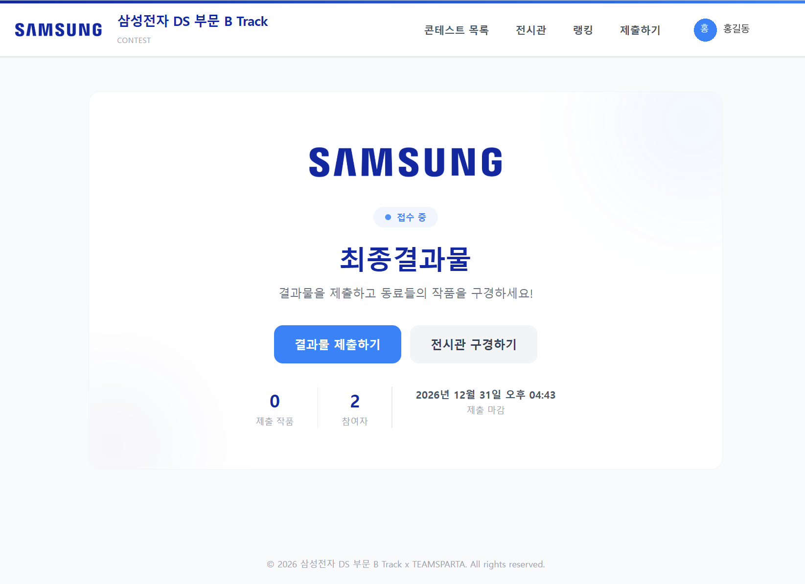
- 7교시에 가입한 계정으로 로그인
- [결과물 제출하기] 또는 위쪽 메뉴 [제출하기]
- 전시관: 동료의 결과물 열어 보기
제출 양식 채우기
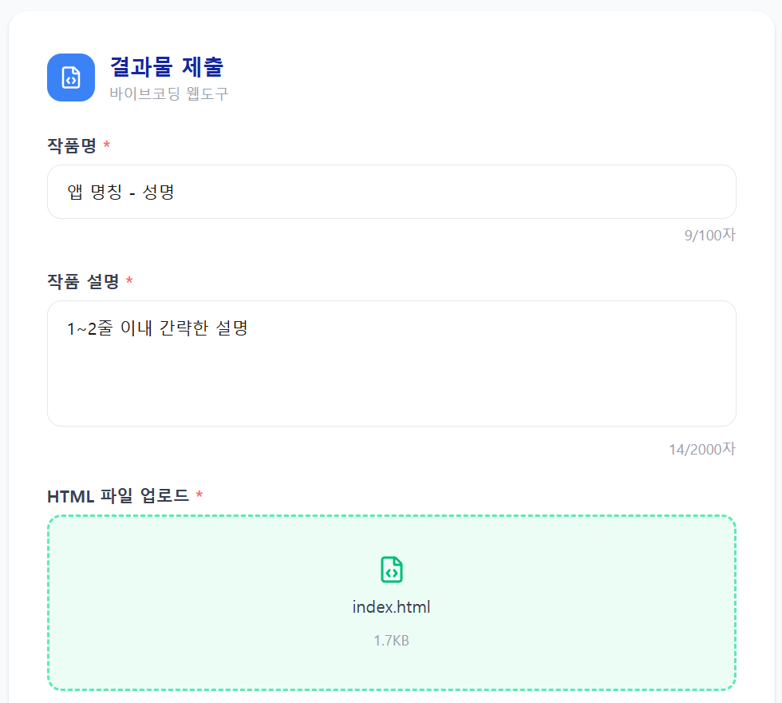
| 항목 | 작성 |
|---|---|
| 작품명 | 앱 이름 - 본인 이름 · 본인 이름 반드시 포함 |
| 작품 설명 | 앱의 목적과 기능을 1 ~ 2줄 |
| HTML 파일 | 1절에서 만든 결과 페이지 |
미리보기 확인 후 제출
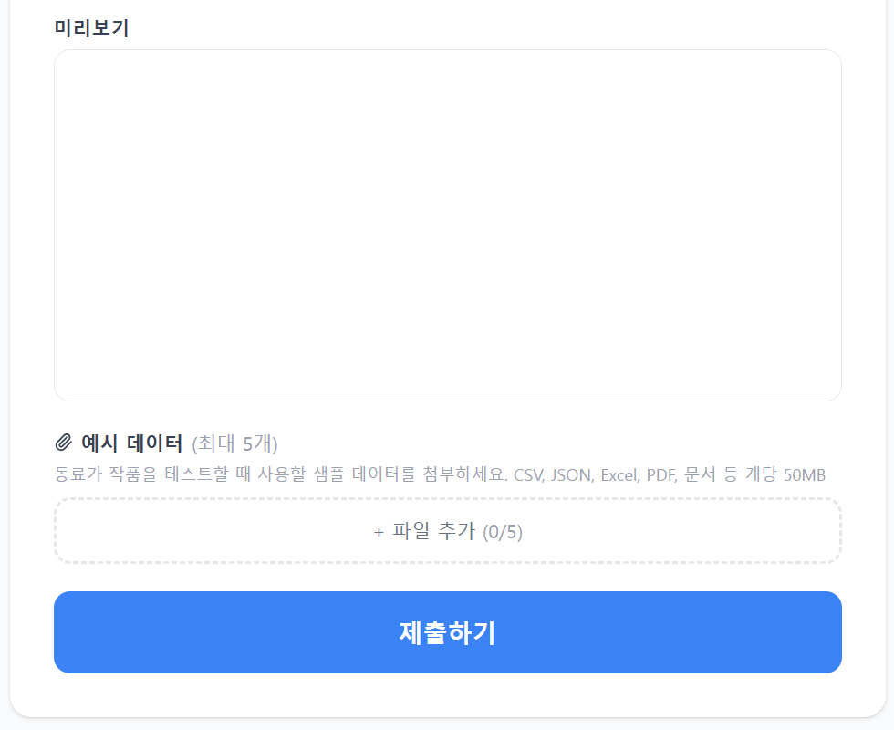
- 미리보기: 실제 실행 화면과 결과가 표시되는지
- 이미지가 비거나 레이아웃이 깨지면 HTML 수정 후 다시 업로드
- 예시 데이터 (선택): 가상 데이터 파일 CSV · JSON 등
- [제출하기] → 제출 완료
제출 이후
전시관
동료의 결과물 열어 보기
서로 점검
옆 사람과 서로의 페이지가 정상 표시되는지 확인
마감 우선
시간이 촉박하면 마감 전 제출부터 · 남은 시간에 수정해 다시 올리기
.html 파일 한 개인지 · 파일 크기가 지나치게 크지 않은지 · 마감 임박이면 이미지를 줄인 파일 먼저Recap · 하나의 Agent 구조
1 ~ 7교시의 개념을 판단과 행동의 흐름으로 다시 연결
목표를 받은 Agent의 흐름
목표
다음 행동 또는 종료
과정 전체를 하나의 구조로
- AI Agent
- LLM
- Instructions · Guardrails
- Tools
- MCP Server
- Context Window
- 문서 준비 · 청킹 · 검색
- Metadata · GraphRAG · Text-to-SQL
- Advanced RAG
- Parent–Child RAG
- Multi-Agent
- Decisions + 조사 Agent
- Multi-modal RAG
- 문서 계층화
판단하고 행동하는 구조
| 요소 | 하는 일 |
|---|---|
| AI Agent | 목표 · 지침 · 현재 정보로 행동 선택 → 실행 결과를 받아 다음 판단 |
| LLM | 답변 생성 · 도구와 인자 선택 · 실제 함수 · API 실행은 앱 |
| Instructions · Guardrails | 역할 · 목표 · 허용 행동 · 중단 조건 |
| Tools | 파일 읽기 · 계산 · 조회 · name · description · 입력 규격이 선택을 도움 · 결과는 다음 판단의 Context |
| Tools via MCP Server | 도구 목록 · 호출 · 결과를 공통 규격으로 연결 · 목표를 정하거나 판단하지 않음 |
판단에 쓸 정보: Context Window와 RAG
Context Window
- Instructions · 도구 명세 · 대화 이력 · 검색 근거 · 도구 결과가 들어가는 제한된 입력 공간
- 5교시 이력 · 상태 표시로 무엇이 쌓이는지 확인
- 필요한 정보의 선택 · 요약 · 보존 범위 설계
RAG
- 외부 자료를 검색해 답변의 근거로 전달
- Naive RAG (Vector RAG)의 과제: 엄청나게 많은 자료에서 필요한 근거를 저렴하고 빠르게 LLM에 전달
문서 준비와 검색 방식
| 구분 | 기준 |
|---|---|
| 청킹 | 고정 길이 · 문장 · 의미 기반 → 나누는 기준이 다름 |
| 키워드 (BM25) · 벡터 | 용어 일치 · 의미 유사성 |
| Hybrid · RRF | 두 결과 결합 · 서로 다른 점수 대신 순위로 합침 |
질문과 자료에 맞는 검색
Metadata Filter
문서 · 조건의 범위를 좁힘
GraphRAG
대상 사이의 관계를 따라감
Text-to-SQL
구조화된 표를 질의
Advanced RAG · Parent–Child RAG
| 기법 | 하는 일 |
|---|---|
| Query Rewriting | 질의를 다듬기 |
| Query Expansion | 여러 검색식으로 넓히기 |
| HyDE | 가상 답변을 검색에 사용 |
| Reranking | 찾은 후보의 관련성 재평가 · 후보에 없는 근거는 만들 수 없음 · 원문에서 확인 |
| Parent–Child | 작은 Child로 검색 → 연결된 Parent로 앞뒤 맥락 전달 · Parent 중복 · 입력량 관리 |
역할을 나누고 필요할 때 호출
- Multi-Agent: 순차 · 병렬 · 계층형으로 역할과 전달 정보 분리
- Context를 분리하는 이론적 이유 ≠ 역할별 실제 호출 비용
- 6교시 구현: Decisions가 반복 판정 · 앱이 기준값 이상 이벤트를 조사 Agent에 · 조사 Agent가 조회 Tool로 근거 확인
확장: Multi-modal RAG
확장: 문서 계층화
- 목차 · 요약으로 읽을 범위를 고르고 해당 PDF의 원문 확인
- 요약마다 원본 파일 · 장 · 페이지 연결 남기기
- Parent–Child RAG와 함께 사용 가능 · 벡터 검색 없이 목차를 따라 파일을 여는 방식도 가능
내 프로젝트에 대입
판단
LLM이 판단한 것은 무엇인가
입력
어떤 Context와 Tool 결과를 사용했는가
변화
결과가 달라지면 다음 행동은 어떻게 달라졌는가
종료
언제 종료했는가
업무에 적용하려면
기술 이름보다 자료와 결과물로 설명하기
동료에게 보여 줄 때
+ 어떤 자료를 대조하고
어떤 업무 결과물을 만들었다
실제 업무에 맞추기
입력 자료의 형식
어떤 자료가 어떤 형태로 들어오는가
기준과 사용 권한
적용할 기준 · 접근 권한
검토 담당자
결과를 검토할 사람
질문과 답변
8교시 · 캡스톤 2 · 완성과 제출
부록
Claude Code 명령어 사용법 모음
터미널 실행 명령 · 대화 중 명령 · 단축키 · MCP와 Plugin 관리 · 자동화 옵션을 용도별로 정리
입력 위치
claude로 시작하는 명령실행 옵션 · 하위 명령
/로 시작하는 명령자연어 작업 요청
표기 읽는 법
| 표기 | 뜻 | 예 |
|---|---|---|
<경로> | 꺾쇠 · 실제 값으로 바꾸기 | claude attach <ID> |
[이름] | 대괄호 · 생략 가능 | /clear [이름] |
| 꺾쇠 · 대괄호 자체 | 입력하지 않음 | |
samsung_YYYYMMDD | 교육 당일 날짜로 | C:\samsung_YYYYMMDD\myapp |
claude --help와 대화창의 /help 함께 확인구성
시작과 대화
시작 · 종료 · 컨텍스트 · 복구
지침 · 설정 · 권한
CLAUDE.md · 모델 · 권한 모드 · 사용량
입력 · 단축키
줄 바꿈 · 중단 · 파일 지정 · 편집 키
검토와 Agent
기본 제공 Skill · 백그라운드 · 반복 작업
MCP · Skill · Plugin
서버 등록 · 범위 · Skill 작성 · Plugin 설치
외부 연결과 관리
IDE · 원격 · 로그인 · 진단 · 기타
자동화 · CLI 옵션
파이프 · 출력 형식 · 실행 옵션
주의와 순서
바뀐 명령 · 수업 중 순서
시작과 대화
시작 · 종료 · 다시 열기 · 컨텍스트 · 복구
세션 시작
| 명령 | 하는 일 | 예 |
|---|---|---|
cd C:\samsung_YYYYMMDD\myapp | 작업할 폴더로 이동 · 이어서 claude 실행 → 이 폴더 기준 | cd "C:\실습 자료\myapp" 공백 경로 |
claude | 대화형 세션 시작 | 「이 프로젝트의 실행 방법을 찾아 설명해 주세요.」 |
claude "요청" | 첫 요청과 함께 시작 · 응답 뒤에도 대화 이어짐 | claude "이 프로젝트의 폴더 구조를 설명해 주세요." |
claude -p · --print | 한 번 처리 · 결과 출력 후 종료 | claude -p "README를 읽고 실행 절차를 요약해 주세요." |
claude --version · -v | 버전 확인 | |
claude --help · -h | 실행 옵션 · 하위 명령 확인 | claude mcp add --help |
다시 열기 · 종료
| 명령 | 하는 일 | 예 |
|---|---|---|
claude -c · --continue | 현재 폴더의 최근 대화 이어가기 | |
claude -r · --resume | 이전 대화 선택 화면 · 이름이나 세션 ID 지정 | claude -r 환율앱 |
claude -n · --name | 찾기 쉬운 이름 붙여 시작 · 작업 중에는 /rename | claude -n 환율앱 |
claude -c --fork-session | 최근 대화 바탕 · 새 세션 ID · 다른 방향 시험 | |
/exit · /quit | 대화형 CLI 종료 |
대화 이름과 이력
| 명령 | 하는 일 | 예 |
|---|---|---|
/help | 사용할 수 있는 명령 확인 · 입력창 맨 앞 / → 검색 메뉴 | |
/rename 환율앱-오류수정 | 현재 대화에 이름 붙이기 | /resume 환율앱-오류수정 |
/resume [이름 또는 ID] | 이전 대화 선택해 이어가기 · 별칭 /continue | |
/recap | 현재 세션 한 줄 요약 | |
/copy | 최근 답변 복사 | /copy 2 두 번째 최근 답변 |
/export conversation.txt | 대화를 텍스트 파일로 · 파일명 생략 → 내보내기 메뉴 | |
/btw 이 함수는 왜 비동기인가요? | 본 작업 중 별도 질문 · 주 대화 컨텍스트에 추가 안 함 |
컨텍스트 관리
| 명령 | 하는 일 |
|---|---|
/clear [이름] | 새 대화 시작 · 이름을 주면 이전 대화에 남김 · 별칭 /new /reset |
/compact 지시 | 현재 대화 요약 · 컨텍스트 공간 확보 · 같은 작업 계속 |
/context | 컨텍스트 사용량 · 큰 비중 항목 · /context all 상세 |
/autocompact | 자동 요약 기준 확인 · /autocompact 500k · /autocompact auto |
/compact 실행 포트와 해결하지 못한 오류를 유지해 주세요.되돌리기와 분기
| 명령 | 하는 일 |
|---|---|
/rewind | 체크포인트 선택 → 코드 · 대화 · 둘 다 복원, 또는 대화 일부 요약 · 별칭 /checkpoint /undo |
Esc 두 번 | 입력창이 비어 있을 때 복구 메뉴 |
/branch 다른-설계 | 현재 대화에서 분기 · 원래 대화는 /resume으로 |
상황별 정리 명령
예: 화면 수정 후 다른 API 작업
예: 같은 오류를 계속 추적
복원 대상 먼저 확인
지침 · 설정 · 권한
프로젝트 지침 · 폴더 · 설정 파일 · 모델 · 권한 · 사용량
프로젝트 지침
| 명령 | 하는 일 |
|---|---|
/init | 프로젝트를 살펴 CLAUDE.md 초기 지침 생성 · 실행 방법 · 테스트 명령 · 코드 구조 · 작업 규칙 |
/memory | CLAUDE.md와 자동 메모리 확인 · 관리 |
CLAUDE.md | 프로젝트 지침 파일 · 저장소 루트 지침과 하위 폴더 지침 분리 가능 |
.claude/rules/ | 주제별 규칙 관리 |
폴더와 설정 화면
| 명령 | 하는 일 |
|---|---|
/add-dir C:\samsung_YYYYMMDD\materials_ch2 | 현재 세션이 접근할 추가 폴더 지정 |
/cd C:\samsung_YYYYMMDD\myapp | 대화 유지 · 작업 폴더 이동 |
/config · /settings | 설정 화면 · /config --help로 키 확인 → /config theme=dark |
/import codex --dry-run · /import gemini --dry-run | 다른 개발 도구 설정 가져오기 전 변경안 확인 · 지원 계정 · 환경만 |
/hooks | 도구 호출 등 이벤트에 연결된 Hook 설정 확인 |
/statusline | 입력창 아래 상태 표시줄 구성 |
/add-dir: 접근 범위 추가 · /cd: 작업 폴더 이동 · 추가 폴더의 설정과 Plugin까지 자동 로드된다고 가정하지 않음설정 파일 위치
.claude/settings.json.claude/settings.local.json~/.claude/settings.jsonWindows의
~ = 사용자 홈 폴더/import 안내를 따라 진행계획과 모델
| 명령 | 하는 일 | 예 |
|---|---|---|
/plan 요청 | Plan 모드로 계획 · 구현 전에 대상 파일과 검증 방법 확인 | /plan 환율 데이터 적재 구조의 개선안을 작성해 주세요. |
/model | 모델 선택 화면 · 별칭 지정 가능 | /model sonnet |
claude --model sonnet | CLI 시작 때만 지정 | |
/effort high | 추론 수준 · /effort status 확인 · /effort auto 자동값 | |
/advisor [모델 또는 off] | 작업 중 다른 모델의 조언 받기 | |
/fast on · /fast off | 지원 모델의 Fast 모드 · 계정 사용 조건 확인 |
low · medium · high · xhigh · max · ultracode · 지원 여부와 유지 범위는 모델 · 버전별권한 모드
| 모드 | 동작 |
|---|---|
manual · default | 일반 승인 모드 |
acceptEdits | 파일 편집 승인 자동 처리 |
plan | 조사와 계획 중심 |
auto | 지원 환경에서 동작별 승인 판단 자동화 |
dontAsk | 승인 질문이 필요한 동작은 거부 |
bypassPermissions | 일반 권한 확인 건너뜀 |
권한 규칙 · 사용량
| 명령 | 하는 일 |
|---|---|
/permissions · /allowed-tools | 도구별 allow ask deny 규칙 · 접근 폴더 |
/auto-mode-setup | Auto 모드 환경 규칙 초안 → 검토 → 저장 |
/fewer-permission-prompts | 반복 읽기 작업 → 허용 규칙 구성 Skill · 제안 범위 읽고 적용 |
/sandbox | 지원 플랫폼의 Sandbox 설정 · Windows에서 일부 항목 다름 |
| 명령 | 하는 일 |
|---|---|
/status | 버전 · 모델 · 계정 · 연결 상태 |
/usage | 사용량 · 제한 · 통계 · /cost 별칭 · /stats 통계 탭 |
/rate-limit-options | 사용 한도 도달 시 선택지 |
/usage-credits | 추가 사용량 설정 · 관리자 요청 |
/upgrade | 상위 요금제 안내 · 표시와 결제 권한은 계정별 |
입력 · 단축키
보내기 · 줄 바꿈 · 중단 · 파일 지정 · 줄 편집
입력과 중단
| 키 | 하는 일 |
|---|---|
Enter | 요청 보내기 |
Shift+Enter · Ctrl+Enter | 줄 바꿈 · OS 환경별 |
Ctrl+J · \ 뒤 Enter | 줄 바꿈이 안 될 때 |
Esc | 응답 중단 · 대화상자 닫기 |
Esc 두 번 | 빈 입력창: 복구 메뉴 · 입력 중: 초안 지우기 |
Ctrl+C | 실행 중단 · 대기 중 입력 지우기 · 다시 누르면 종료 |
Ctrl+D | 빈 입력창: 종료 안내 → 다시 눌러 종료 · 입력 중: 커서 뒤 문자 삭제 |
| 키 · 입력 | 하는 일 |
|---|---|
↑ · ↓ | 입력 이력 탐색 |
Ctrl+R | 이전 입력 검색 |
Tab | 경로 · 명령 자동완성 |
@lab/registry.py | 파일 지정해 질문 |
!git status | 셸 명령 직접 실행 · 출력을 대화에 포함 |
? | 빈 입력창에서 단축키 도움말 |
@lab/registry.py 에서 도구 목록을 합치는 과정을 설명해 주세요.! 뒤 구문은 Claude Code가 사용하는 셸에 맞춤화면 · 작업 · 모델 전환
| 키 | 하는 일 |
|---|---|
Ctrl+O | 상세 실행 기록 |
Ctrl+L | 화면 다시 그리기 |
Ctrl+T | 작업 체크리스트 표시 · 숨김 |
Ctrl+B | 실행 중 작업 백그라운드로 → /tasks |
Ctrl+X → Ctrl+K | 백그라운드 Subagent 중단 · 재확인 안내 |
Ctrl+G | 외부 편집기로 긴 입력 작성 |
Ctrl+X → Ctrl+E | 외부 편집기 (같은 기능) |
Ctrl+S | 입력 초안 임시 보관 · 복원 |
| 키 · 명령 | 하는 일 |
|---|---|
Alt+P | 모델 선택 |
Alt+T | 지원 모델의 Thinking 전환 |
Alt+O | Fast 모드 전환 |
Alt+V | Windows 이미지 붙여넣기 |
/keybindings | 키 설정 파일 |
/terminal-setup | 터미널 입력 설정 |
/config Editor mode | 일반 · Vim 편집 모드 선택 |
줄 편집 키
| 키 | 하는 일 |
|---|---|
Ctrl+A · Ctrl+E | 줄의 처음 · 끝으로 이동 |
Ctrl+U · Ctrl+K | 커서 앞 · 뒤의 줄 내용 지우기 |
Ctrl+W | 앞의 공백까지 지우기 |
Ctrl+Y | 지운 내용 붙이기 |
Alt+B · Alt+F | 단어 단위 이동 |
Alt+D | 단어 끝까지 지우기 |
Ctrl+_ · Ctrl+Shift+- | 입력 편집 되돌리기 |
검토와 Agent
기본 제공 Skill · Subagent · 백그라운드 · 반복 작업
검토 Skill
| 명령 | 하는 일 |
|---|---|
/diff | 현재 작업 폴더의 변경 확인 · 화면 수정 후 바뀐 파일 살펴보기 |
/code-review · /review | 변경 코드의 문제 검토 · /code-review high 수준 지정 · /code-review high 123 PR 지정 |
--fix · --comment | --fix: 수정 적용 · --comment: GitHub 댓글 게시 |
/code-review ultra | 클라우드 심층 검토 · /ultrareview 관련 진입점 · 계정 · 클라우드 접근 · 사용량 조건 확인 |
/simplify | 수정 코드의 재사용 · 단순화 · 효율 검토와 개선 · /simplify src/ 대상 지정 |
/security-review | 현재 브랜치 변경의 보안 문제 · 원격 origin과 비교 기준 브랜치 필요 |
실행 · 조사 · 자료 Skill
| 명령 | 하는 일 | 예 |
|---|---|---|
/run | 앱 실행 · 변경 결과 확인 | |
/verify | 빌드 · 실행 · 조작 → 요청한 동작 확인 | |
/run-skill-generator | 프로젝트의 실행 · 검증 절차를 Skill로 | |
/debug 증상 | 디버그 로그와 현재 상황으로 원인 조사 | /debug CSV 업로드 후 화면이 멈춥니다. |
/batch 요청 | 큰 변경 → worktree 병렬 처리 · 계획 확인 후 여러 작업 · PR 생성까지 | /batch src의 공통 오류 처리 방식을 통일해 주세요. |
/claude-api | Claude API 개발 자료 | 하위 작업 5종 |
/dataviz 요청 | 시각화 설계 | /dataviz 환율의 월별 변화를 보여줄 차트를 설계해 주세요. |
/design 요청 | 지원 계정에서 화면 시안 | /design 환율 대시보드의 화면 시안 |
/design-login | 디자인 시스템 접근 인증 | |
/design-sync [힌트] | 저장소의 디자인 시스템 → Claude Design · 외부 업로드 포함 |
/claude-api 하위 작업
| 하위 작업 | 용도 |
|---|---|
migrate | 모델 이전 |
upgrade | SDK 이전 |
managed-agents-onboard | Managed Agent 시작 |
prompt-audit | 프롬프트 점검 |
cost-optimize | 비용 개선 |
대화 안의 Agent 명령
| 명령 | 하는 일 |
|---|---|
/agents | Subagent 관리 안내 · 자연어로 생성 · 수정 요청 또는 .claude/agents/ 파일 편집 |
/subtask 요청 | 현재 대화를 이어받는 백그라운드 Subagent에 작업 · 결과는 원래 대화로 |
/tasks · /bashes | 현재 세션의 백그라운드 작업 확인 · 관리 |
/list-agents · /peers | 메시지를 보낼 수 있는 Agent · 다른 세션 · 기능 활성화 여부에 따름 |
/background [추가 요청] · /bg | 현재 세션 전체를 백그라운드로 |
/fork [요청] | 현재 대화를 복사한 별도 백그라운드 세션 |
/stop | 현재 접속한 백그라운드 세션 중단 · 연결 해제는 /exit |
/fork: 별도 백그라운드 세션 · /branch: 사용자가 새 분기로 이동/subtask 현재 변경과 관련된 테스트 누락을 조사해 주세요.터미널의 백그라운드 관리
claude --bg "실패한 테스트의 원인을 조사해 주세요."--bg와 함께 쓰지 않음| 명령 | 하는 일 |
|---|---|
claude agents | 백그라운드 Agent 관리 화면 |
claude agents --json --all | 종료 항목 포함 JSON 조회 |
claude attach <ID> | 세션 접속 |
claude logs <ID> | 최근 출력 |
claude stop <ID> · kill | 실행 멈춤 · 대화 기록 유지 |
claude respawn <ID> | 현재 설치 버전으로 재시작 |
claude rm <ID> | 종료 세션 · 삭제 가능한 worktree 제거 |
반복 · 예약 작업
| 명령 | 하는 일 |
|---|---|
/goal 완료 조건 | 완료 조건 지정해 작업 이어가기 · /goal 상태 · /goal clear 해제 |
/loop 5m 요청 | 세션이 열려 있는 동안 반복 · 별칭 /proactive |
/schedule 요청 | 클라우드에서 실행할 Routine 구성 · 별칭 /routines · 지원 계정 · 실행 환경 확인 |
/deep-research 요청 | 여러 조사 작업 Workflow · /workflows 진행 관리 · /workflow-authoring 작성 자료 |
/goal 테스트를 통과하고 실행 확인까지 마치기
/loop 5m 배포 상태를 확인해 주세요.
/schedule 매주 월요일 오전에 의존성 업데이트를 조사해 주세요.
/deep-research 반도체 장비 시장의 최근 변화를 조사해 주세요.앱 안의 Agent와 구분
Claude Code Agent 기능
/agents·/subtask·/forkclaude --bg·claude agents- 개발 도구의 작업 분담
교육의 Multi-Agent 실습
- 앱 코드 안의 연구책임자 · 연구원 구조 구현
- 앱 내부 Agent 실행
MCP · Skill · Plugin
서버 등록 · 범위 · 상태 관리 · Skill 작성 · Plugin 설치
MCP 서버 등록
claude mcp add --transport http --scope project mslearn https://learn.microsoft.com/api/mcpclaude mcp add --transport stdio my-server -- python C:\samsung_YYYYMMDD\my-server\server.py/mcp-- 뒤는 서버 프로세스의 명령과 인자 · 서버 파일이 실제로 있고 stdio MCP 서버로 구현되어 있어야 함전송 방식과 범위
| 전송 | 대상 |
|---|---|
--transport http | 원격 HTTP 서버 |
stdio | 로컬 프로세스 |
sse | SSE 전송 서버 · 서버 제공자가 안내한 방식 사용 |
기본 범위
.mcp.json공유 설정
개인 공통
MCP 상태 관리
| 명령 | 하는 일 |
|---|---|
claude mcp list | 등록 목록 · 연결 상태 |
claude mcp get mslearn | 특정 서버 설정 · 프로젝트 서버는 최초 승인 전까지 대기 가능 |
claude mcp login <서버명> · logout | OAuth 인증 · 저장된 인증 해제 · 인증 요구 서버 |
/mcp | 연결 · 도구 · 인증 상태 관리 |
/mcp reconnect mslearn | 재연결 |
/mcp disable mslearn · enable | 비활성화 · 다시 활성화 · 지원 버전에서 all |
claude mcp remove mslearn | 등록 제거 · 같은 이름이 여러 범위면 --scope project처럼 명시 |
/mcp disableMCP 고급 등록
| 명령 | 하는 일 |
|---|---|
claude mcp add-json <서버명> '<JSON>' | JSON 서버 설정 등록 · PowerShell의 JSON 인자 전달 확인 · 복잡하면 --mcp-config 파일 |
-e 이름=값 | stdio 서버의 환경변수 |
-H "헤더명: 값" | HTTP/SSE 헤더 |
--client-id · --client-secret · --callback-port | OAuth · 서버의 인증 요구에 맞춤 |
claude mcp reset-project-choices | 프로젝트 MCP 서버의 승인 · 거절 선택 초기화 |
claude mcp add-from-claude-desktop | Desktop 설정 가져오기 · Mac · WSL 지원 범위 확인 |
claude mcp serve | Claude Code를 MCP 서버로 실행 · 다른 MCP Host에서 연결 |
.mcp.json에 그대로 남기지 않음Claude Code와 앱 구분
claude mcp add → /mcp로 확인앱 화면에서 연결 결과 확인
/mcp__서버명__프롬프트명 표시 가능 · 모든 Tool이 Slash 명령이 되지는 않음claude mcp add는 Claude Code에 등록claude mcp <하위명령> --helpSkill 사용과 위치
| 명령 | 하는 일 |
|---|---|
/skills | 사용할 수 있는 Skill 확인 |
/reload-skills | 변경한 Skill · 명령 디렉터리 다시 읽기 |
/skill-doctor | Skill 사용 빈도와 컨텍스트 비용 점검 |
.claude/skills/<이름>/SKILL.md | 프로젝트 Skill 기본 위치 · /이름으로 호출 |
~/.claude/skills/<이름>/SKILL.md | 개인 공통 위치 |
.claude/commands/<이름>.md | 기존 사용자 명령 형식 · 현행 Skill과 함께 지원 · 새 절차는 SKILL.md |
/plugin-name:skill-name | Plugin Skill · 이름 공간 포함 |
Skill 작성
| 항목 | 역할 |
|---|---|
name · description | YAML 머리말 · 이름과 용도 |
| 본문 | 단계와 출력 형식 |
$ARGUMENTS | 호출 뒤의 입력 받기 |
disable-model-invocation: true | 사용자가 직접 호출하도록 제한 |
/review-csv data/rates.csvreview-csv Skill에 CSV 열 이름 · 자료형 · 결측값 점검 절차 정의 → 이 명령은 Skill을 만든 뒤에 생김Plugin 관리
| 명령 | 하는 일 |
|---|---|
/plugin | Plugin 관리 메뉴 · /plugin list · /plugin install <이름> · /plugin enable <이름> · /plugin disable <이름> |
claude plugin list | 설치 목록 |
claude plugin details <이름> | 구성요소와 예상 컨텍스트 비용 |
claude plugin install <이름>@<마켓플레이스> | 설치 |
enable · disable · update · uninstall | 활성화 · 비활성화 · 업데이트 · 제거 · claude plugins도 같은 명령군 |
/reload-plugins | 변경한 Plugin 다시 읽기 · --force 강제 |
배포처와 Plugin 제작
| 명령 | 하는 일 |
|---|---|
claude plugin marketplace add <저장소 또는 URL 또는 경로> | 배포처 등록 |
marketplace list · marketplace update [이름] · marketplace remove <이름> | 배포처 목록 · 갱신 · 제거 |
claude plugin init <이름> · new | 기본 구조 생성 |
validate <경로> | 정의 검사 |
eval <대상> | 평가 실행 |
tag [경로] | 릴리스 태그 생성 |
prune · autoremove | 불필요해진 자동 설치 의존성 정리 |
claude plugin <하위명령> --help외부 연결과 관리
IDE · 웹 · 모바일 · 로그인 · 진단 · 표시 · 기타
IDE · 브라우저 · 앱
| 명령 | 하는 일 |
|---|---|
/ide | IDE 연결 상태 관리 |
claude --ide | 연결 가능한 IDE가 하나일 때 시작과 함께 연결 |
/chrome | 브라우저 연동 설정 |
claude --chrome · claude --no-chrome | 해당 세션의 연동 켜기 · 끄기 |
/desktop · /app | Desktop 앱에서 세션 이어가기 · 지원 OS와 Claude 구독 필요 |
/mobile · /ios · /android | 모바일 앱 설치 안내 |
/web-setup | GitHub 계정의 웹 개발 환경 연결 |
/install-github-app | 저장소의 GitHub App · 선택적 Actions 연결 안내 |
/install-slack-app | Slack 앱 인증 화면 |
/artifacts | 계정에서 쓸 수 있는 Artifact 확인 · 첨부 |
원격 제어와 클라우드
| 명령 | 하는 일 | 비고 |
|---|---|---|
/remote-control · /rc | 현재 로컬 세션을 다른 기기에서 조작 | claude --remote-control "환율앱" 시작 때 설정 |
claude remote-control | 원격 접속을 기다리는 서버 모드 | --name · --spawn · --capacity 하위 명령 뒤 |
claude --cloud | 클라우드 세션 시작 | claude --cloud "업로드 오류를 수정해 주세요." |
/remote-env | 기본 클라우드 환경 선택 | --environment <환경ID> 자체 호스팅 환경 |
/teleport · /tp | 웹 세션의 브랜치와 대화를 로컬 터미널로 | --teleport |
/autofix-pr [지시문] | 현재 브랜치 PR 감시 클라우드 세션 · CI 실패 · 검토 의견 → 수정 push | gh · 웹 세션 접근 필요 |
로그인 · 업데이트 · 진단
| 명령 | 하는 일 |
|---|---|
claude auth login · logout · status | PowerShell에서 로그인 · 로그아웃 · 인증 상태 · 대화 안에서는 /login /logout |
claude setup-token | 구독 기반 장기 인증 토큰 설정 |
claude doctor | 설치 상태 읽기 전용 진단 |
/doctor · /checkup | 세션 안에서 설정 · 설치 문제 분석 · 확인 후 수정 제안 |
claude update · claude upgrade | 업데이트 확인 · 설치 |
claude install stable · latest · <버전> | 네이티브 빌드 설치 대상 지정 |
/release-notes | 버전별 변경 내용 |
표시 설정 · 기타 명령
| 명령 | 하는 일 |
|---|---|
/theme | 화면 테마 |
/color [색 또는 default] | 세션 입력줄 색 |
/tui [default 또는 fullscreen] | 화면 렌더러 |
/focus | 지원 화면에서 요약 중심 표시 |
/scroll-speed | 스크롤 속도 |
/voice [hold 또는 tap 또는 off] | 지원 계정의 음성 입력 |
/feedback · /bug · /share | 의견 · 문제 보고 |
/heapdump | 메모리 문제 진단 파일 |
| 명령 | 하는 일 |
|---|---|
/privacy-settings | 지원 구독의 개인정보 설정 |
/insights | 최근 사용 기록 분석 보고서 |
/team-onboarding | 사용 이력 기반 팀 시작 가이드 |
/powerup | 기능 학습 |
/passes | 대상 계정의 체험 공유 |
/radio | 음악 페이지 |
/stickers | 스티커 주문 안내 |
/setup-bedrock · /setup-vertex | 클라우드 공급자 인증 · 지역 · 모델 |
관리용 CLI 명령
| 명령 | 하는 일 |
|---|---|
claude auto-mode config · defaults | Auto 모드 적용값 · 기본값 확인 |
critique | 사용자 규칙에 대한 AI 검토 |
reset | 사용자 Auto 모드 설정 초기화 |
claude import codex --dry-run | 외부 개발 도구 설정 가져오기 예고 |
claude project purge [경로] | 프로젝트의 대화 · 작업 · 파일 이력 등 Claude Code 상태 삭제 · 새 대화는 /clear |
claude gateway --help | 기업용 인증 · 텔레메트리 게이트웨이 설정 · 수업 실습에 불필요 |
claude ultrareview [대상] | 터미널에서 클라우드 코드 검토 · PR 번호 또는 기준 브랜치 · 먼저 --help로 옵션 확인 |
--help와 대조자동화 · CLI 옵션
입력 · 출력 · 반복 실행 · 모델 · 지침 · 도구 · 실행 환경
파이프로 입력 · 출력
Get-Content -Raw -Encoding UTF8 .\error.log | claude -p "이 로그의 원인 후보와 확인 순서를 정리해 주세요."$OutputEncoding = [Console]::OutputEncoding = [System.Text.UTF8Encoding]::new()claude -p "README에서 실행 방법을 요약해 주세요." | Set-Content -Encoding UTF8 .\run-summary.txt-p는 대화형 질문을 기다리는 흐름과 다름 → 실행 권한 · 종료 상태 · 결과 파일 함께 확인출력 · 입력 형식
| 옵션 · 값 | 하는 일 |
|---|---|
--output-format text | 일반 텍스트 |
json | 결과 JSON |
stream-json | 이벤트별 JSON |
--input-format text | 일반 입력 |
stream-json | 구조화된 스트림 입력 · 지정된 메시지 형식 필요 |
--json-schema <JSON> | 결과가 따를 JSON Schema · type properties required로 보고서 필드 지정 |
claude -p "실행 방법을 요약해 주세요." --output-format jsonstream-json 입력은 임의의 JSON 파일을 그대로 보내는 옵션 아님 · 복잡한 JSON은 PowerShell 따옴표 전달 확인실행 한도 · 스트림 옵션
| 명령 | 하는 일 |
|---|---|
--max-turns 3 | Print 모드의 Agent 턴 수 제한 |
--max-budget-usd 1 | API 사용 금액 한도 |
--no-session-persistence | Print 대화를 디스크에 남기지 않음 · 이후 /resume 불가 |
--fallback-model sonnet,haiku | 기본 모델 불가 시 대체 모델 순서 · Print 모드용 |
--permission-prompts none | 승인할 사람이 없는 Print 실행 · 질문 필요한 동작 거부 · host는 SDK Host 경로 |
| 명령 | 하는 일 |
|---|---|
--include-partial-messages | 부분 스트리밍 이벤트 |
--include-hook-events | Hook 이벤트 |
--forward-subagent-text | Subagent 텍스트 포함 · stream-json · 필요 시 -p --verbose |
--replay-user-messages | 스트림 입력 메시지를 출력으로 · 입출력 모두 stream-json |
--prompt-suggestions | 후속 요청 제안 이벤트 |
--permission-prompt-tool <MCP도구> | 전용 승인 도구 · 고급 |
claude -p "테스트 오류를 분석해 주세요." --max-turns 3 --max-budget-usd 1CLI 옵션 · 모델과 지침
| 명령 | 하는 일 |
|---|---|
--model <모델> · --effort <수준> | 이번 세션의 모델 · 추론 수준 |
--agent <이름> | 세션의 Agent 정의 선택 |
--agents <JSON> | 이번 실행에 쓸 Agent 정의 전달 |
--system-prompt "지침" | 기본 System Prompt 대체 |
--append-system-prompt "답변에는 파일 경로를 포함하세요." | 기본 지침 뒤에 덧붙임 |
--system-prompt-file <파일> · --append-system-prompt-file <파일> | 지침을 파일에서 읽기 |
--append-subagent-system-prompt <지침> · -file <파일> | Print 모드의 Subagent용 추가 지침 · 둘 중 하나만 |
--system-prompt-snapshot on · off | System Prompt 기록 · 재사용 조절 · 설치본 도움말의 고급 옵션 |
CLI 옵션 · 설정 · 세션 · MCP
| 옵션 | 하는 일 |
|---|---|
--settings <파일 또는 JSON> | 이번 실행에 적용할 설정 |
--setting-sources user,project,local | 불러올 설정 범위 |
--add-dir <폴더...> | 접근할 추가 폴더 |
--autocompact <auto 또는 토큰수> | 자동 요약 기준 |
--session-id <UUID> | 세션 ID 명시 |
--from-pr <PR번호 또는 URL> | 연결된 PR의 대화 찾기 |
--permission-mode plan | Plan 모드로 시작 |
| 옵션 | 하는 일 |
|---|---|
--mcp-config .\mcp.json | MCP 설정 파일 읽기 |
--strict-mcp-config | 지정한 MCP 설정만 사용 |
--plugin-dir .\my-plugin | 로컬 디렉터리 · ZIP 불러오기 · 여러 개면 반복 |
--plugin-url <URL> | URL의 Plugin ZIP |
--disable-slash-commands | Skill · 명령 기능 제한 |
--exclude-dynamic-system-prompt-sections | 장비별 동적 정보를 첫 사용자 메시지로 · Prompt Cache 재사용 구성 |
CLI 옵션 · 도구와 권한
| 명령 | 하는 일 |
|---|---|
--allowedTools "Read" "Bash(git status *)" | 승인 없이 허용할 도구 규칙 |
--disallowedTools "Edit" | 금지 규칙 · 하이픈 표기 --allowed-tools --disallowed-tools도 지원 |
--tools "Read,Grep,Glob" | 내장 도구 목록 제한 · MCP 도구는 별도 → --disallowedTools "mcp__*" |
--dangerously-skip-permissions | 권한 확인을 건너뛰는 모드로 시작 |
--allow-dangerously-skip-permissions | 해당 모드를 선택 가능하게 · 처음부터 켜지지는 않음 |
--safe-mode | 사용자 지침 · Skill · Plugin · Hook · MCP 영향 배제 · 설정 문제 진단 · 인증 · 기본 도구 · 권한 유지 |
--bare | 자동 로딩을 줄인 최소 실행 · OAuth · 키체인 읽지 않음 → 인증 구성 따로 확인 |
--restricted | 코드 실행 도구 · 설정 로딩 · 파일 접근 제한 |
--safe-mode · --bare · --restricted 적용 범위가 서로 다름 · safe-mode에도 관리 정책 적용CLI 옵션 · 작업 폴더와 백그라운드
| 명령 | 하는 일 |
|---|---|
--worktree [이름] · -w [이름] | Git worktree로 작업 폴더 분리 |
--tmux | worktree를 tmux 세션에서 · --worktree 필요 |
--teammate-mode <모드> | Agent Team 표시 방식 · in-process auto tmux iterm2 |
--bg · --background | 백그라운드 시작 · --exec와 조합 → 셸 작업을 백그라운드로 |
claude -w fx-chart "환율 차트의 날짜 축을 개선해 주세요."CLI 옵션 · 원격과 연결
| 명령 | 하는 일 |
|---|---|
--cloud <요청> | 웹 작업 시작 |
--environment <환경ID> | 자체 호스팅 실행 환경 지정 |
--ref <브랜치> | 해당 환경의 시작 Git ref · --remote는 폐기 예정 별칭 → --cloud |
--remote-control [이름] · --rc | 로컬 세션의 원격 제어 |
--remote-control-session-name-prefix <접두어> | 자동 생성 세션 이름 접두어 |
--chrome · --no-chrome · --ide · --teleport | 브라우저 · IDE · 웹 세션 연결 · 외부 연결 절 참고 |
CLI 옵션 · 진단과 고급
| 옵션 | 하는 일 |
|---|---|
--debug · -d | 디버그 로그 · 범주는 claude --debug=mcp,startup |
--debug-file .\claude-debug.log | 로그 경로 지정 |
--verbose | 상세 실행 출력 |
--ax-screen-reader | 화면 읽기 도구에 맞춘 출력 |
--betas <항목...> | API Key 사용자의 Beta 헤더 · 고급 |
--init | Print 시작 전 init Setup Hook |
--maintenance | maintenance Setup Hook |
--init-only | 초기화 관련 Hook만 실행 후 종료 |
| 옵션 | 하는 일 |
|---|---|
--channels <항목...> | 지원되는 MCP Channel 알림 구독 |
--dangerously-load-development-channels <항목...> | 개발 중 Channel 허용 · Research Preview · 공급자 · 인증 · 활성화 조건 |
--file <파일ID:상대경로...> | 시작 시 파일 리소스 다운로드 · @파일과 입력 형식 다름 |
--brief | Agent가 사용자에게 메시지를 보내는 도구 활성화 · 내부 통신 흐름 구성 때만 |
/init과 실행 대상이 다름주의와 순서
오래된 안내의 바뀐 명령 · 수업 중 자주 쓰는 순서
바뀐 명령
| 과거 안내 | 현행 |
|---|---|
/vim | 삭제 → /config의 Editor mode에서 Vim · Normal |
/pr-comments | 삭제 → 「현재 PR의 검토 댓글을 읽고 남은 작업을 정리해 주세요.」처럼 요청 |
/ultraplan | 삭제 → /plan |
/agents | 과거 대화형 관리 화면 → 자연어 요청 또는 Agent 파일 편집 |
/fork | 현행 기본: 별도 백그라운드 세션 복사 · 결과를 받는 하위 작업은 /subtask · Agent view 설정별 예외 |
/review | 현행 /code-review의 별칭 |
/cost · /stats | /usage로 통합된 별칭 |
/extra-usage | → /usage-credits |
--enable-auto-mode | 제거 → 지원 환경에서 --permission-mode auto |
Unknown command가 나오면
| 확인 | 방법 |
|---|---|
| 입력 위치 | PowerShell인지 대화 입력창인지 |
| 철자 | 명령 이름 다시 확인 |
| 버전 | claude --version · /release-notes |
| 사용 가능 명령 | /help |
| 계정 · 플랫폼 | 지원 조건 확인 |
| Skill · Plugin 명령 | 설치 여부 · /reload-skills · /reload-plugins |
수업 중 자주 쓰는 순서
| 상황 | 순서 |
|---|---|
| 시작 | 실습 폴더로 cd → claude → /status로 계정 · 모델 확인 → 처음이면 /init 후 지침 검토 |
| 기능 개발 | 입력 · 출력 · 완료 조건을 자연어로 → 큰 변경이면 /plan → 구현 후 /diff와 앱 실행으로 확인 |
| 오류 대응 | 오류 원문과 재현 순서 → 필요하면 @파일 → 길어지면 /context · /compact → 잘못된 수정은 /rewind 복원 범위 확인 |
| 다음 작업 | /rename → 새 주제는 /clear → 종료 /exit → 돌아오면 claude -c · claude -r |
| MCP 실습 | Claude Code: claude mcp add · /mcp · 제작 중인 앱: 앱 코드 · 설정 변경 요청 → 앱 화면에서 확인 |